Exporting Results#
#pip install numpy pandas matplotlib seaborn flopy geopandas shapely pyproj contextily
import os
import numpy as np
import flopy
import matplotlib.pyplot as plt
import pandas as pd
import seaborn as sns # For histograms/kde plots
import geopandas as gpd # For spatial DataFrames (shapefiles/KML)
from shapely.geometry import Point, LineString # For geometry creation
import pyproj # For coordinate reference system handling
import contextily as ctx # For satellite basemaps
import zipfile # For creating KMZ files
from concurrent.futures import ThreadPoolExecutor # For parallel processing (used in your script)
from mpl_toolkits.mplot3d import Axes3D # For 3D plotting, if not already imported via matplotlib
from rasterio.crs import CRS
# access simulation
# Define the bed elevation for filtering particles
bed_elevation = 1599.8125 # Defined in notebook
ncol = 431 # Defined in notebook
nrow = 385 # Defined in notebook
#\Users\u4eeevmq\Documents\Python\HP_workspace
# Define the workspace and file names
workspace = r"C:\Users\u4eeevmq\Documents\Python\HyporheicFloPy\HP_workspace\mp7_workspace" # Defined in notebook
workspace_gwf = r"C:\Users\u4eeevmq\Documents\Python\HyporheicFloPy\HP_workspace\gwf_workspace" # Defined in notebook
model_name = "Hyporheic_Project_mp" # Defined in notebook
gwf_model_name = "gwf_model" # Defined in notebook
# r"C:\Users\u4eeevmq\Documents\Python\HyporheicFloPy\HP_workspace\mp7_workspace\Hyporheic_Project_mp_backward.mppth"
# Correct the simulation workspace path
model_ws = r"C:\Users\u4eeevmq\Documents\Python\HyporheicFloPy\HP_workspace\gwf_workspace" # Defined in notebook
# Load the river cells from the CSV file
river_cells_csv = "C:\\Users\\u4eeevmq\\Documents\\Python\\HyporheicFloPy\\river_cells.csv" # Defined in notebook
# Projection file
hec_ras_crs = "C:\\Users\\u4eeevmq\\Documents\\Python\\HyporheicFloPy\\CH00365\\RAS\\GIS_Data\\102739_TX_central.prj"
# Access Results of the Simulation
# Load the MODFLOW 6 simulation
sim = flopy.mf6.MFSimulation.load(sim_ws=workspace_gwf)
print(sim.model_names)
# Access the groundwater flow (GWF) model
gwf = sim.get_model("gwf_model") # Replace "gwf_model" with your model name if different
# Get DIS package and idomain array
dis = gwf.get_package("DIS")
idomain = dis.idomain.array # shape: (nlay, nrow, ncol)
# Load the head file
hds = flopy.utils.HeadFile(f"{model_ws}\{gwf_model_name}.hds")
# Get the head array (last time step if transient)
head_array = hds.get_data()
if head_array.ndim == 4:
head_array = head_array[-1] # Use heads from the last time step
def get_head(row):
try:
return head_array[int(row['layer']), int(row['row']), int(row['col'])]
except Exception:
return np.nan
# Get model grid information
xorigin = dis.xorigin # Access the numerical value from MFScalar
yorigin = dis.yorigin
delr = dis.delr.array # Column widths
delc = dis.delc.array # Row heights
print(f"delr: {delr}")
print(f"delc: {delc}")
# Calculate spatial extents
x_min = xorigin.data # Access the numerical value from MFScalar
x_max = xorigin.data + delr.sum() # Access data and perform addition
y_min = yorigin.data # Access the numerical value from MFScalar
y_max = yorigin.data + delc.sum() # Access data and perform addition
extent = [x_min, x_max, y_min, y_max]
print(f"Spatial Extent: {extent}")
# Model grid shape
nlay, nrow, ncol = gwf.modelgrid.shape # or define manually
# Debugging: Check a known of the head array
# head_value = head_array[0, 132, 266] # Change value to known particle location
# print(f"Head Value at (k={k}, j={j}, i={i}): {head_value}")
<>:14: DeprecationWarning: invalid escape sequence '\{'
<>:14: DeprecationWarning: invalid escape sequence '\{'
C:\Users\u4eeevmq\AppData\Local\Temp\ipykernel_23936\2502637471.py:14: DeprecationWarning: invalid escape sequence '\{'
hds = flopy.utils.HeadFile(f"{model_ws}\{gwf_model_name}.hds")
loading simulation...
loading simulation name file...
loading tdis package...
loading model gwf6...
loading package dis...
loading package ic...
loading package npf...
loading package chd...
loading package oc...
loading solution package gwf_model...
['gwf_model']
delr: [5. 5. 5. 5. 5. 5. 5. 5. 5. 5. 5. 5. 5. 5. 5. 5. 5. 5. 5. 5. 5. 5. 5. 5.
5. 5. 5. 5. 5. 5. 5. 5. 5. 5. 5. 5. 5. 5. 5. 5. 5. 5. 5. 5. 5. 5. 5. 5.
5. 5. 5. 5. 5. 5. 5. 5. 5. 5. 5. 5. 5. 5. 5. 5. 5. 5. 5. 5. 5. 5. 5. 5.
5. 5. 5. 5. 5. 5. 5. 5. 5. 5. 5. 5. 5. 5. 5. 5. 5. 5. 5. 5. 5. 5. 5. 5.
5. 5. 5. 5. 5. 5. 5. 5. 5. 5. 5. 5. 5. 5. 5. 5. 5. 5. 5. 5. 5. 5. 5. 5.
5. 5. 5. 5. 5. 5. 5. 5. 5. 5. 5. 5. 5. 5. 5. 5. 5. 5. 5. 5. 5. 5. 5. 5.
5. 5. 5. 5. 5. 5. 5. 5. 5. 5. 5. 5. 5. 5. 5. 5. 5. 5. 5. 5. 5. 5. 5. 5.
5. 5. 5. 5. 5. 5. 5. 5. 5. 5. 5. 5. 5. 5. 5. 5. 5. 5. 5. 5. 5. 5. 5. 5.
5. 5. 5. 5. 5. 5. 5. 5. 5. 5. 5. 5. 5. 5. 5. 5. 5. 5. 5. 5. 5. 5. 5. 5.
5. 5. 5. 5. 5. 5. 5. 5. 5. 5. 5. 5. 5. 5. 5. 5. 5. 5. 5. 5. 5. 5. 5. 5.
5. 5. 5. 5. 5. 5. 5. 5. 5. 5. 5. 5. 5. 5. 5. 5. 5. 5. 5. 5. 5. 5. 5. 5.
5. 5. 5. 5. 5. 5. 5. 5. 5. 5. 5. 5. 5. 5. 5. 5. 5. 5. 5. 5. 5. 5. 5. 5.
5. 5. 5. 5. 5. 5. 5. 5. 5. 5. 5. 5. 5. 5. 5. 5. 5. 5. 5. 5. 5. 5. 5. 5.
5. 5. 5. 5. 5. 5. 5. 5. 5. 5. 5. 5. 5. 5. 5. 5. 5. 5. 5. 5. 5. 5. 5. 5.
5. 5. 5. 5. 5. 5. 5. 5. 5. 5. 5. 5. 5. 5. 5. 5. 5. 5. 5. 5. 5. 5. 5. 5.
5. 5. 5. 5. 5. 5. 5. 5. 5. 5. 5. 5. 5. 5. 5. 5. 5. 5. 5. 5. 5. 5. 5. 5.
5. 5. 5. 5. 5. 5. 5. 5. 5. 5. 5. 5. 5. 5. 5. 5. 5. 5. 5. 5. 5. 5. 5. 5.
5. 5. 5. 5. 5. 5. 5. 5. 5. 5. 5. 5. 5. 5. 5. 5. 5. 5. 5. 5. 5. 5. 5.]
delc: [5. 5. 5. 5. 5. 5. 5. 5. 5. 5. 5. 5. 5. 5. 5. 5. 5. 5. 5. 5. 5. 5. 5. 5.
5. 5. 5. 5. 5. 5. 5. 5. 5. 5. 5. 5. 5. 5. 5. 5. 5. 5. 5. 5. 5. 5. 5. 5.
5. 5. 5. 5. 5. 5. 5. 5. 5. 5. 5. 5. 5. 5. 5. 5. 5. 5. 5. 5. 5. 5. 5. 5.
5. 5. 5. 5. 5. 5. 5. 5. 5. 5. 5. 5. 5. 5. 5. 5. 5. 5. 5. 5. 5. 5. 5. 5.
5. 5. 5. 5. 5. 5. 5. 5. 5. 5. 5. 5. 5. 5. 5. 5. 5. 5. 5. 5. 5. 5. 5. 5.
5. 5. 5. 5. 5. 5. 5. 5. 5. 5. 5. 5. 5. 5. 5. 5. 5. 5. 5. 5. 5. 5. 5. 5.
5. 5. 5. 5. 5. 5. 5. 5. 5. 5. 5. 5. 5. 5. 5. 5. 5. 5. 5. 5. 5. 5. 5. 5.
5. 5. 5. 5. 5. 5. 5. 5. 5. 5. 5. 5. 5. 5. 5. 5. 5. 5. 5. 5. 5. 5. 5. 5.
5. 5. 5. 5. 5. 5. 5. 5. 5. 5. 5. 5. 5. 5. 5. 5. 5. 5. 5. 5. 5. 5. 5. 5.
5. 5. 5. 5. 5. 5. 5. 5. 5. 5. 5. 5. 5. 5. 5. 5. 5. 5. 5. 5. 5. 5. 5. 5.
5. 5. 5. 5. 5. 5. 5. 5. 5. 5. 5. 5. 5. 5. 5. 5. 5. 5. 5. 5. 5. 5. 5. 5.
5. 5. 5. 5. 5. 5. 5. 5. 5. 5. 5. 5. 5. 5. 5. 5. 5. 5. 5. 5. 5. 5. 5. 5.
5. 5. 5. 5. 5. 5. 5. 5. 5. 5. 5. 5. 5. 5. 5. 5. 5. 5. 5. 5. 5. 5. 5. 5.
5. 5. 5. 5. 5. 5. 5. 5. 5. 5. 5. 5. 5. 5. 5. 5. 5. 5. 5. 5. 5. 5. 5. 5.
5. 5. 5. 5. 5. 5. 5. 5. 5. 5. 5. 5. 5. 5. 5. 5. 5. 5. 5. 5. 5. 5. 5. 5.
5. 5. 5. 5. 5. 5. 5. 5. 5. 5. 5. 5. 5. 5. 5. 5. 5. 5. 5. 5. 5. 5. 5. 5.
5.]
Spatial Extent: [2406093.51, np.float64(2408248.51), 10514475.4, np.float64(10516400.4)]
# Define the MODPATH 7 pathline and endpoint files
## Forward pathline and endpoint files
f_pathline_file = os.path.join(workspace, model_name + "_forward.mppth")
endpoint_file = os.path.join(workspace, model_name + "_forward.mpend")
## Backward pathline and endpoint files
#b_pathline_file = os.path.join(workspace, model_name + "_backward.mppth")
#b_endpoint_file = os.path.join(workspace, model_name + "_backward.mpend")
# Load the river cells from the CSV file
river_cells_df = pd.read_csv(river_cells_csv)
# Convert the DataFrame back to a list of tuples
river_cells = list(river_cells_df.itertuples(index=False, name=None))
print(f"✅ Loaded {len(river_cells)} river cells from {river_cells_csv}")
print(f"River cells: {river_cells}")
# Extract numerical values from xorigin and yorigin
xorigin_value = xorigin.data
yorigin_value = yorigin.data
# Print the origin values for verification
print(f"xorigin: {xorigin_value}, yorigin: {yorigin_value}")
# Print the delr and delc arrays for verification
print(f"delr: {delr}, delc: {delc}")
# Convert river cell row/col indices to real-world coordinates
river_cell_coords = [
(
sum(delr[:cell[2]]) + delr[cell[2]] / 2 + xorigin_value, # X-coordinate (center)
sum(delc[:cell[1]]) + delc[cell[1]] / 2 + yorigin_value # Y-coordinate (center)
)
for cell in river_cells
]
# Convert to a set for quick lookup
river_cell_coords_set = set(river_cell_coords)
# Print a few converted coordinates for verification
print("Example converted river cell coordinates:", list(river_cell_coords_set)[:5])
print(f"delr: {delr}, delc: {delc}")
✅ Loaded 1255 river cells from C:\Users\u4eeevmq\Documents\Python\HyporheicFloPy\river_cells.csv
River cells: [(0, 130, 267, 1600.7779541015625), (0, 131, 266, 1600.785888671875), (0, 131, 267, 1600.7843017578125), (0, 131, 268, 1600.78125), (0, 131, 269, 1600.7799072265625), (0, 131, 270, 1600.77783203125), (0, 132, 266, 1600.7908935546875), (0, 132, 267, 1600.7879638671875), (0, 132, 268, 1600.78369140625), (0, 132, 269, 1600.781982421875), (0, 132, 270, 1600.7791748046875), (0, 132, 271, 1600.7779541015625), (0, 132, 272, 1600.7760009765625), (0, 132, 273, 1600.7747802734375), (0, 132, 274, 1600.7735595703125), (0, 133, 265, 1600.81591796875), (0, 133, 266, 1600.8026123046875), (0, 133, 267, 1600.796875), (0, 133, 268, 1600.7894287109375), (0, 133, 269, 1600.78662109375), (0, 133, 270, 1600.7823486328125), (0, 133, 271, 1600.7803955078125), (0, 133, 272, 1600.7774658203125), (0, 133, 273, 1600.776123046875), (0, 133, 274, 1600.774169921875), (0, 133, 275, 1600.773193359375), (0, 133, 276, 1600.77294921875), (0, 134, 264, 1600.8328857421875), (0, 134, 265, 1600.8253173828125), (0, 134, 266, 1600.808837890625), (0, 134, 267, 1600.80224609375), (0, 134, 268, 1600.7928466796875), (0, 134, 269, 1600.7891845703125), (0, 134, 270, 1600.783935546875), (0, 134, 271, 1600.78173828125), (0, 134, 272, 1600.7783203125), (0, 134, 273, 1600.77685546875), (0, 134, 274, 1600.774658203125), (0, 135, 262, 1600.8824462890625), (0, 135, 263, 1600.8721923828125), (0, 135, 264, 1600.85302734375), (0, 135, 265, 1600.8424072265625), (0, 135, 266, 1600.8228759765625), (0, 135, 267, 1600.814208984375), (0, 135, 268, 1600.8011474609375), (0, 135, 269, 1600.7960205078125), (0, 135, 270, 1600.78759765625), (0, 135, 271, 1600.7840576171875), (0, 136, 247, 1601.239990234375), (0, 136, 248, 1601.23974609375), (0, 136, 249, 1601.2398681640625), (0, 136, 250, 1601.23974609375), (0, 136, 251, 1601.23974609375), (0, 136, 252, 1601.2396240234375), (0, 136, 261, 1600.8997802734375), (0, 136, 262, 1600.888671875), (0, 136, 263, 1600.8807373046875), (0, 136, 264, 1600.8612060546875), (0, 136, 265, 1600.8507080078125), (0, 136, 266, 1600.83056640625), (0, 136, 267, 1600.82080078125), (0, 136, 268, 1600.806396484375), (0, 136, 269, 1600.80029296875), (0, 137, 246, 1601.2398681640625), (0, 137, 247, 1601.239990234375), (0, 137, 248, 1601.239990234375), (0, 137, 249, 1601.2398681640625), (0, 137, 250, 1601.23974609375), (0, 137, 251, 1601.239501953125), (0, 137, 252, 1601.239501953125), (0, 137, 260, 1600.9166259765625), (0, 137, 261, 1600.91455078125), (0, 137, 262, 1600.90283203125), (0, 137, 263, 1600.8951416015625), (0, 137, 264, 1600.8765869140625), (0, 137, 265, 1600.8665771484375), (0, 137, 266, 1600.844970703125), (0, 137, 267, 1600.834228515625), (0, 137, 268, 1600.81591796875), (0, 138, 245, 1601.239990234375), (0, 138, 246, 1601.240234375), (0, 138, 247, 1601.239990234375), (0, 138, 248, 1601.2398681640625), (0, 138, 249, 1601.23974609375), (0, 138, 250, 1601.2398681640625), (0, 138, 251, 1601.239501953125), (0, 138, 252, 1601.239501953125), (0, 138, 253, 1601.239501953125), (0, 138, 260, 1600.927490234375), (0, 138, 261, 1600.925048828125), (0, 138, 262, 1600.911865234375), (0, 138, 263, 1600.90380859375), (0, 138, 264, 1600.884521484375), (0, 138, 265, 1600.874267578125), (0, 138, 266, 1600.85205078125), (0, 138, 267, 1600.840087890625), (0, 139, 245, 1601.240478515625), (0, 139, 246, 1601.240478515625), (0, 139, 247, 1601.240234375), (0, 139, 248, 1601.239990234375), (0, 139, 249, 1601.2398681640625), (0, 139, 250, 1601.2398681640625), (0, 139, 251, 1601.239501953125), (0, 139, 252, 1601.2393798828125), (0, 139, 253, 1601.2392578125), (0, 139, 254, 1601.2391357421875), (0, 139, 260, 1600.9674072265625), (0, 139, 261, 1600.9591064453125), (0, 139, 262, 1600.936279296875), (0, 139, 263, 1600.9246826171875), (0, 139, 264, 1600.902099609375), (0, 139, 265, 1600.890869140625), (0, 140, 245, 1601.2410888671875), (0, 140, 246, 1601.24072265625), (0, 140, 247, 1601.240478515625), (0, 140, 248, 1601.2403564453125), (0, 140, 249, 1601.239990234375), (0, 140, 250, 1601.2398681640625), (0, 140, 251, 1601.2393798828125), (0, 140, 252, 1601.2392578125), (0, 140, 253, 1601.23876953125), (0, 140, 254, 1601.238525390625), (0, 140, 260, 1601.024658203125), (0, 140, 261, 1601.0040283203125), (0, 140, 262, 1600.966064453125), (0, 140, 263, 1600.9486083984375), (0, 141, 245, 1601.241455078125), (0, 141, 246, 1601.2412109375), (0, 141, 247, 1601.24072265625), (0, 141, 248, 1601.240478515625), (0, 141, 249, 1601.2398681640625), (0, 141, 250, 1601.23974609375), (0, 141, 251, 1601.2392578125), (0, 141, 252, 1601.2391357421875), (0, 141, 253, 1601.2384033203125), (0, 141, 254, 1601.2381591796875), (0, 141, 259, 1601.0968017578125), (0, 141, 260, 1601.0511474609375), (0, 141, 261, 1601.0274658203125), (0, 141, 262, 1600.97998046875), (0, 142, 244, 1601.2430419921875), (0, 142, 245, 1601.2423095703125), (0, 142, 246, 1601.2420654296875), (0, 142, 247, 1601.241455078125), (0, 142, 248, 1601.2410888671875), (0, 142, 249, 1601.2403564453125), (0, 142, 250, 1601.239990234375), (0, 142, 251, 1601.2392578125), (0, 142, 252, 1601.23876953125), (0, 142, 253, 1601.237548828125), (0, 142, 254, 1601.236572265625), (0, 142, 255, 1601.23095703125), (0, 142, 256, 1601.2252197265625), (0, 142, 257, 1601.1986083984375), (0, 142, 258, 1601.1639404296875), (0, 142, 259, 1601.143310546875), (0, 142, 260, 1601.099853515625), (0, 142, 261, 1601.074462890625), (0, 143, 243, 1601.244384765625), (0, 143, 244, 1601.243896484375), (0, 143, 245, 1601.242919921875), (0, 143, 246, 1601.2425537109375), (0, 143, 247, 1601.24169921875), (0, 143, 248, 1601.241455078125), (0, 143, 249, 1601.240478515625), (0, 143, 250, 1601.2401123046875), (0, 143, 251, 1601.2391357421875), (0, 143, 252, 1601.238525390625), (0, 143, 253, 1601.23681640625), (0, 143, 254, 1601.235595703125), (0, 143, 255, 1601.229248046875), (0, 143, 256, 1601.223876953125), (0, 143, 257, 1601.205078125), (0, 143, 258, 1601.1768798828125), (0, 143, 259, 1601.1607666015625), (0, 143, 260, 1601.11962890625), (0, 144, 243, 1601.24609375), (0, 144, 244, 1601.245361328125), (0, 144, 245, 1601.244140625), (0, 144, 246, 1601.24365234375), (0, 144, 247, 1601.24267578125), (0, 144, 248, 1601.241943359375), (0, 144, 249, 1601.2410888671875), (0, 144, 250, 1601.2406005859375), (0, 144, 251, 1601.2392578125), (0, 144, 252, 1601.238525390625), (0, 144, 253, 1601.236572265625), (0, 144, 254, 1601.235107421875), (0, 144, 255, 1601.2298583984375), (0, 144, 256, 1601.22607421875), (0, 144, 257, 1601.214599609375), (0, 144, 258, 1601.1973876953125), (0, 144, 259, 1601.18603515625), (0, 145, 242, 1601.2486572265625), (0, 145, 243, 1601.2470703125), (0, 145, 244, 1601.246337890625), (0, 145, 245, 1601.2449951171875), (0, 145, 246, 1601.244384765625), (0, 145, 247, 1601.2430419921875), (0, 145, 248, 1601.242431640625), (0, 145, 249, 1601.2413330078125), (0, 145, 250, 1601.2408447265625), (0, 145, 251, 1601.2396240234375), (0, 145, 252, 1601.23876953125), (0, 145, 253, 1601.2366943359375), (0, 145, 254, 1601.2354736328125), (0, 145, 255, 1601.23095703125), (0, 145, 256, 1601.22802734375), (0, 145, 257, 1601.2191162109375), (0, 145, 258, 1601.2056884765625), (0, 145, 259, 1601.19677734375), (0, 146, 240, 1601.251220703125), (0, 146, 241, 1601.2506103515625), (0, 146, 242, 1601.25), (0, 146, 243, 1601.24853515625), (0, 146, 244, 1601.247802734375), (0, 146, 245, 1601.246337890625), (0, 146, 246, 1601.2454833984375), (0, 146, 247, 1601.244384765625), (0, 146, 248, 1601.24365234375), (0, 146, 249, 1601.242431640625), (0, 146, 250, 1601.24169921875), (0, 146, 251, 1601.2403564453125), (0, 146, 252, 1601.2396240234375), (0, 146, 253, 1601.23779296875), (0, 146, 254, 1601.23681640625), (0, 146, 255, 1601.23388671875), (0, 146, 256, 1601.232177734375), (0, 146, 257, 1601.2275390625), (0, 147, 240, 1601.2525634765625), (0, 147, 241, 1601.251220703125), (0, 147, 242, 1601.2506103515625), (0, 147, 243, 1601.249267578125), (0, 147, 244, 1601.24853515625), (0, 147, 245, 1601.2471923828125), (0, 147, 246, 1601.2464599609375), (0, 147, 247, 1601.2451171875), (0, 147, 248, 1601.244384765625), (0, 147, 249, 1601.242919921875), (0, 147, 250, 1601.2423095703125), (0, 147, 251, 1601.24072265625), (0, 147, 252, 1601.240234375), (0, 147, 253, 1601.238525390625), (0, 147, 254, 1601.2376708984375), (0, 147, 255, 1601.2353515625), (0, 147, 256, 1601.2342529296875), (0, 147, 257, 1601.23095703125), (0, 148, 239, 1601.2545166015625), (0, 148, 240, 1601.2537841796875), (0, 148, 241, 1601.25244140625), (0, 148, 242, 1601.251953125), (0, 148, 243, 1601.250732421875), (0, 148, 244, 1601.25), (0, 148, 245, 1601.2486572265625), (0, 148, 246, 1601.2479248046875), (0, 148, 247, 1601.2464599609375), (0, 148, 248, 1601.24560546875), (0, 148, 249, 1601.2442626953125), (0, 148, 250, 1601.2435302734375), (0, 148, 251, 1601.2421875), (0, 148, 252, 1601.241455078125), (0, 148, 253, 1601.239990234375), (0, 148, 254, 1601.2391357421875), (0, 148, 255, 1601.23779296875), (0, 148, 256, 1601.2371826171875), (0, 148, 257, 1601.2359619140625), (0, 149, 239, 1601.255615234375), (0, 149, 240, 1601.2545166015625), (0, 149, 241, 1601.25341796875), (0, 149, 242, 1601.2528076171875), (0, 149, 243, 1601.25146484375), (0, 149, 244, 1601.2508544921875), (0, 149, 245, 1601.24951171875), (0, 149, 246, 1601.248779296875), (0, 149, 247, 1601.247314453125), (0, 149, 248, 1601.2467041015625), (0, 149, 249, 1601.2449951171875), (0, 149, 250, 1601.2440185546875), (0, 149, 251, 1601.24267578125), (0, 149, 252, 1601.2420654296875), (0, 149, 253, 1601.24072265625), (0, 149, 254, 1601.2398681640625), (0, 149, 255, 1601.2388916015625), (0, 149, 256, 1601.238525390625), (0, 149, 257, 1601.2376708984375), (0, 150, 238, 1601.257568359375), (0, 150, 239, 1601.257080078125), (0, 150, 240, 1601.256103515625), (0, 150, 241, 1601.2550048828125), (0, 150, 242, 1601.25439453125), (0, 150, 243, 1601.2530517578125), (0, 150, 244, 1601.25244140625), (0, 150, 245, 1601.2510986328125), (0, 150, 246, 1601.250244140625), (0, 150, 247, 1601.248779296875), (0, 150, 248, 1601.2481689453125), (0, 150, 249, 1601.24658203125), (0, 150, 250, 1601.2457275390625), (0, 150, 251, 1601.2442626953125), (0, 150, 252, 1601.243408203125), (0, 150, 253, 1601.241943359375), (0, 150, 254, 1601.241455078125), (0, 150, 255, 1601.240478515625), (0, 150, 256, 1601.2401123046875), (0, 150, 257, 1601.2396240234375), (0, 151, 237, 1601.25927734375), (0, 151, 238, 1601.2587890625), (0, 151, 239, 1601.25830078125), (0, 151, 240, 1601.2569580078125), (0, 151, 241, 1601.255859375), (0, 151, 242, 1601.2552490234375), (0, 151, 243, 1601.25390625), (0, 151, 244, 1601.25341796875), (0, 151, 245, 1601.251953125), (0, 151, 246, 1601.2513427734375), (0, 151, 247, 1601.249755859375), (0, 151, 248, 1601.2490234375), (0, 151, 249, 1601.247314453125), (0, 151, 250, 1601.2464599609375), (0, 151, 251, 1601.244873046875), (0, 151, 252, 1601.244140625), (0, 151, 253, 1601.24267578125), (0, 151, 254, 1601.241943359375), (0, 151, 255, 1601.240966796875), (0, 151, 256, 1601.2406005859375), (0, 152, 237, 1601.2618408203125), (0, 152, 238, 1601.2607421875), (0, 152, 239, 1601.2601318359375), (0, 152, 240, 1601.2587890625), (0, 152, 241, 1601.2576904296875), (0, 152, 242, 1601.2569580078125), (0, 152, 243, 1601.2557373046875), (0, 152, 244, 1601.2550048828125), (0, 152, 245, 1601.253662109375), (0, 152, 246, 1601.2530517578125), (0, 152, 247, 1601.2515869140625), (0, 152, 248, 1601.2508544921875), (0, 152, 249, 1601.2491455078125), (0, 152, 250, 1601.248291015625), (0, 152, 251, 1601.24658203125), (0, 152, 252, 1601.24560546875), (0, 152, 253, 1601.2440185546875), (0, 152, 254, 1601.243408203125), (0, 152, 255, 1601.2421875), (0, 152, 256, 1601.2415771484375), (0, 153, 237, 1601.263916015625), (0, 153, 238, 1601.26220703125), (0, 153, 239, 1601.26123046875), (0, 153, 240, 1601.2598876953125), (0, 153, 241, 1601.258544921875), (0, 153, 242, 1601.2578125), (0, 153, 243, 1601.256591796875), (0, 153, 244, 1601.2559814453125), (0, 153, 245, 1601.254638671875), (0, 153, 246, 1601.2540283203125), (0, 153, 247, 1601.25244140625), (0, 153, 248, 1601.2515869140625), (0, 153, 249, 1601.25), (0, 153, 250, 1601.2490234375), (0, 153, 251, 1601.247314453125), (0, 153, 252, 1601.2464599609375), (0, 153, 253, 1601.2449951171875), (0, 153, 254, 1601.244140625), (0, 153, 255, 1601.2425537109375), (0, 153, 256, 1601.2418212890625), (0, 154, 236, 1601.2711181640625), (0, 154, 237, 1601.26953125), (0, 154, 238, 1601.2659912109375), (0, 154, 239, 1601.2647705078125), (0, 154, 240, 1601.2626953125), (0, 154, 241, 1601.2608642578125), (0, 154, 242, 1601.2601318359375), (0, 154, 243, 1601.258544921875), (0, 154, 244, 1601.2578125), (0, 154, 245, 1601.256591796875), (0, 154, 246, 1601.2557373046875), (0, 154, 247, 1601.2542724609375), (0, 154, 248, 1601.253662109375), (0, 154, 249, 1601.251953125), (0, 154, 250, 1601.2508544921875), (0, 154, 251, 1601.2491455078125), (0, 154, 252, 1601.248046875), (0, 154, 253, 1601.24658203125), (0, 154, 254, 1601.245849609375), (0, 154, 255, 1601.244140625), (0, 155, 236, 1601.274169921875), (0, 155, 237, 1601.2718505859375), (0, 155, 238, 1601.268310546875), (0, 155, 239, 1601.2672119140625), (0, 155, 240, 1601.264404296875), (0, 155, 241, 1601.2623291015625), (0, 155, 242, 1601.2613525390625), (0, 155, 243, 1601.259765625), (0, 155, 244, 1601.2589111328125), (0, 155, 245, 1601.2574462890625), (0, 155, 246, 1601.2568359375), (0, 155, 247, 1601.2552490234375), (0, 155, 248, 1601.2545166015625), (0, 155, 249, 1601.2530517578125), (0, 155, 250, 1601.2520751953125), (0, 155, 251, 1601.250244140625), (0, 155, 252, 1601.249267578125), (0, 155, 253, 1601.247314453125), (0, 155, 254, 1601.246337890625), (0, 155, 255, 1601.2451171875), (0, 156, 234, 1601.283935546875), (0, 156, 235, 1601.283203125), (0, 156, 236, 1601.280029296875), (0, 156, 237, 1601.277587890625), (0, 156, 238, 1601.273681640625), (0, 156, 239, 1601.27197265625), (0, 156, 240, 1601.2686767578125), (0, 156, 241, 1601.2657470703125), (0, 156, 242, 1601.264404296875), (0, 156, 243, 1601.26220703125), (0, 156, 244, 1601.2613525390625), (0, 156, 245, 1601.259521484375), (0, 156, 246, 1601.2587890625), (0, 156, 247, 1601.25732421875), (0, 156, 248, 1601.256591796875), (0, 156, 249, 1601.255126953125), (0, 156, 250, 1601.2542724609375), (0, 156, 251, 1601.25244140625), (0, 156, 252, 1601.2510986328125), (0, 156, 253, 1601.24853515625), (0, 157, 234, 1601.2882080078125), (0, 157, 235, 1601.287109375), (0, 157, 236, 1601.2833251953125), (0, 157, 237, 1601.2811279296875), (0, 157, 238, 1601.27685546875), (0, 157, 239, 1601.27490234375), (0, 157, 240, 1601.271240234375), (0, 157, 241, 1601.267822265625), (0, 157, 242, 1601.266357421875), (0, 157, 243, 1601.2637939453125), (0, 157, 244, 1601.2625732421875), (0, 157, 245, 1601.2607421875), (0, 157, 246, 1601.260009765625), (0, 157, 247, 1601.25830078125), (0, 157, 248, 1601.2578125), (0, 157, 249, 1601.25634765625), (0, 157, 250, 1601.25537109375), (0, 157, 251, 1601.2535400390625), (0, 157, 252, 1601.252197265625), (0, 158, 234, 1601.299560546875), (0, 158, 235, 1601.2984619140625), (0, 158, 236, 1601.2933349609375), (0, 158, 237, 1601.289794921875), (0, 158, 238, 1601.28466796875), (0, 158, 239, 1601.2822265625), (0, 158, 240, 1601.2777099609375), (0, 158, 241, 1601.2734375), (0, 158, 242, 1601.271484375), (0, 158, 243, 1601.267822265625), (0, 158, 244, 1601.26611328125), (0, 158, 245, 1601.263427734375), (0, 158, 246, 1601.2623291015625), (0, 158, 247, 1601.2606201171875), (0, 158, 248, 1601.259765625), (0, 158, 249, 1601.2586669921875), (0, 158, 250, 1601.258056640625), (0, 159, 233, 1601.313232421875), (0, 159, 234, 1601.310791015625), (0, 159, 235, 1601.30859375), (0, 159, 236, 1601.3035888671875), (0, 159, 237, 1601.3006591796875), (0, 159, 238, 1601.294921875), (0, 159, 239, 1601.2919921875), (0, 159, 240, 1601.286376953125), (0, 159, 241, 1601.28076171875), (0, 159, 242, 1601.2781982421875), (0, 159, 243, 1601.2734375), (0, 159, 244, 1601.27099609375), (0, 159, 245, 1601.2672119140625), (0, 159, 246, 1601.265625), (0, 159, 247, 1601.2633056640625), (0, 159, 248, 1601.262451171875), (0, 159, 249, 1601.2607421875), (0, 159, 250, 1601.2601318359375), (0, 160, 233, 1601.3172607421875), (0, 160, 234, 1601.3167724609375), (0, 160, 235, 1601.3138427734375), (0, 160, 236, 1601.30908203125), (0, 160, 237, 1601.306396484375), (0, 160, 238, 1601.30078125), (0, 160, 239, 1601.297607421875), (0, 160, 240, 1601.29150390625), (0, 160, 241, 1601.28515625), (0, 160, 242, 1601.2822265625), (0, 160, 243, 1601.27685546875), (0, 160, 244, 1601.2740478515625), (0, 160, 245, 1601.26953125), (0, 160, 246, 1601.2677001953125), (0, 160, 247, 1601.2647705078125), (0, 160, 248, 1601.2635498046875), (0, 160, 249, 1601.2618408203125), (0, 160, 250, 1601.26123046875), (0, 161, 233, 1601.32861328125), (0, 161, 234, 1601.3272705078125), (0, 161, 235, 1601.3255615234375), (0, 161, 236, 1601.320068359375), (0, 161, 237, 1601.3177490234375), (0, 161, 238, 1601.312255859375), (0, 161, 239, 1601.30908203125), (0, 161, 240, 1601.3028564453125), (0, 161, 241, 1601.2957763671875), (0, 161, 242, 1601.292236328125), (0, 161, 243, 1601.285400390625), (0, 161, 244, 1601.2821044921875), (0, 161, 245, 1601.2760009765625), (0, 161, 246, 1601.273193359375), (0, 161, 247, 1601.2686767578125), (0, 161, 248, 1601.2667236328125), (0, 161, 249, 1601.2640380859375), (0, 162, 232, 1601.3370361328125), (0, 162, 233, 1601.3350830078125), (0, 162, 234, 1601.331787109375), (0, 162, 235, 1601.3299560546875), (0, 162, 236, 1601.3258056640625), (0, 162, 237, 1601.323486328125), (0, 162, 238, 1601.3179931640625), (0, 162, 239, 1601.31494140625), (0, 162, 240, 1601.3084716796875), (0, 162, 241, 1601.3013916015625), (0, 162, 242, 1601.2977294921875), (0, 162, 243, 1601.2900390625), (0, 162, 244, 1601.28662109375), (0, 162, 245, 1601.2796630859375), (0, 162, 246, 1601.276611328125), (0, 162, 247, 1601.2711181640625), (0, 162, 248, 1601.2686767578125), (0, 163, 232, 1601.3475341796875), (0, 163, 233, 1601.34619140625), (0, 163, 234, 1601.343505859375), (0, 163, 235, 1601.341552734375), (0, 163, 236, 1601.3372802734375), (0, 163, 237, 1601.3348388671875), (0, 163, 238, 1601.3294677734375), (0, 163, 239, 1601.3262939453125), (0, 163, 240, 1601.3197021484375), (0, 163, 241, 1601.3126220703125), (0, 163, 242, 1601.3087158203125), (0, 163, 243, 1601.300537109375), (0, 163, 244, 1601.29638671875), (0, 163, 245, 1601.288330078125), (0, 163, 246, 1601.2845458984375), (0, 163, 247, 1601.2777099609375), (0, 164, 232, 1601.3538818359375), (0, 164, 233, 1601.352783203125), (0, 164, 234, 1601.3507080078125), (0, 164, 235, 1601.347412109375), (0, 164, 236, 1601.3428955078125), (0, 164, 237, 1601.340576171875), (0, 164, 238, 1601.3349609375), (0, 164, 239, 1601.33203125), (0, 164, 240, 1601.325439453125), (0, 164, 241, 1601.318115234375), (0, 164, 242, 1601.31396484375), (0, 164, 243, 1601.3056640625), (0, 164, 244, 1601.301513671875), (0, 164, 245, 1601.292724609375), (0, 164, 246, 1601.28857421875), (0, 165, 232, 1601.36572265625), (0, 165, 233, 1601.3642578125), (0, 165, 234, 1601.3607177734375), (0, 165, 235, 1601.3590087890625), (0, 165, 236, 1601.354736328125), (0, 165, 237, 1601.3521728515625), (0, 165, 238, 1601.3466796875), (0, 165, 239, 1601.34375), (0, 165, 240, 1601.3369140625), (0, 165, 241, 1601.3291015625), (0, 165, 242, 1601.324951171875), (0, 165, 243, 1601.3160400390625), (0, 165, 244, 1601.311279296875), (0, 165, 245, 1601.3011474609375), (0, 165, 246, 1601.2958984375), (0, 166, 232, 1601.370849609375), (0, 166, 233, 1601.36962890625), (0, 166, 234, 1601.36669921875), (0, 166, 235, 1601.36474609375), (0, 166, 236, 1601.3603515625), (0, 166, 237, 1601.3580322265625), (0, 166, 238, 1601.3525390625), (0, 166, 239, 1601.3494873046875), (0, 166, 240, 1601.3427734375), (0, 166, 241, 1601.334716796875), (0, 166, 242, 1601.3304443359375), (0, 166, 243, 1601.3211669921875), (0, 166, 244, 1601.3162841796875), (0, 167, 231, 1601.382080078125), (0, 167, 232, 1601.381103515625), (0, 167, 233, 1601.3804931640625), (0, 167, 234, 1601.378173828125), (0, 167, 235, 1601.376708984375), (0, 167, 236, 1601.3724365234375), (0, 167, 237, 1601.3702392578125), (0, 167, 238, 1601.364501953125), (0, 167, 239, 1601.361328125), (0, 167, 240, 1601.3544921875), (0, 167, 241, 1601.346923828125), (0, 167, 242, 1601.3427734375), (0, 167, 243, 1601.33154296875), (0, 168, 231, 1601.38623046875), (0, 168, 232, 1601.386474609375), (0, 168, 233, 1601.3875732421875), (0, 168, 234, 1601.384033203125), (0, 168, 235, 1601.3826904296875), (0, 168, 236, 1601.3787841796875), (0, 168, 237, 1601.3765869140625), (0, 168, 238, 1601.3707275390625), (0, 168, 239, 1601.367431640625), (0, 168, 240, 1601.360595703125), (0, 168, 241, 1601.3536376953125), (0, 168, 242, 1601.3499755859375), (0, 169, 232, 1601.39990234375), (0, 169, 233, 1601.39892578125), (0, 169, 234, 1601.3975830078125), (0, 169, 235, 1601.396484375), (0, 169, 236, 1601.392333984375), (0, 169, 237, 1601.3897705078125), (0, 169, 238, 1601.3834228515625), (0, 169, 239, 1601.3797607421875), (0, 169, 240, 1601.371826171875), (0, 169, 241, 1601.3642578125), (0, 169, 242, 1601.360595703125), (0, 170, 232, 1601.407958984375), (0, 170, 233, 1601.406494140625), (0, 170, 234, 1601.405029296875), (0, 170, 235, 1601.4036865234375), (0, 170, 236, 1601.3994140625), (0, 170, 237, 1601.396728515625), (0, 170, 238, 1601.39013671875), (0, 170, 239, 1601.3861083984375), (0, 170, 240, 1601.37744140625), (0, 170, 241, 1601.368896484375), (0, 171, 232, 1601.42236328125), (0, 171, 233, 1601.422607421875), (0, 171, 234, 1601.42138671875), (0, 171, 235, 1601.420166015625), (0, 171, 236, 1601.41552734375), (0, 171, 237, 1601.412353515625), (0, 171, 238, 1601.4049072265625), (0, 171, 239, 1601.400634765625), (0, 171, 240, 1601.3897705078125), (0, 172, 232, 1601.4315185546875), (0, 172, 233, 1601.431640625), (0, 172, 234, 1601.4305419921875), (0, 172, 235, 1601.42919921875), (0, 172, 236, 1601.424072265625), (0, 172, 237, 1601.4207763671875), (0, 172, 238, 1601.41259765625), (0, 172, 239, 1601.408203125), (0, 173, 232, 1601.4554443359375), (0, 173, 233, 1601.45361328125), (0, 173, 234, 1601.4517822265625), (0, 173, 235, 1601.449951171875), (0, 173, 236, 1601.443359375), (0, 173, 237, 1601.439208984375), (0, 173, 238, 1601.429443359375), (0, 173, 239, 1601.424072265625), (0, 174, 232, 1601.4661865234375), (0, 174, 233, 1601.4659423828125), (0, 174, 234, 1601.463623046875), (0, 174, 235, 1601.4613037109375), (0, 174, 236, 1601.4537353515625), (0, 174, 237, 1601.4490966796875), (0, 174, 238, 1601.438232421875), (0, 175, 232, 1601.4964599609375), (0, 175, 233, 1601.4945068359375), (0, 175, 234, 1601.4903564453125), (0, 175, 235, 1601.4873046875), (0, 175, 236, 1601.4775390625), (0, 175, 237, 1601.470947265625), (0, 176, 232, 1601.523681640625), (0, 176, 233, 1601.522216796875), (0, 176, 234, 1601.5184326171875), (0, 176, 235, 1601.51611328125), (0, 176, 236, 1601.50732421875), (0, 176, 237, 1601.49951171875), (0, 177, 232, 1601.5357666015625), (0, 177, 233, 1601.53515625), (0, 177, 234, 1601.532958984375), (0, 177, 235, 1601.5308837890625), (0, 177, 236, 1601.5233154296875), (0, 177, 237, 1601.515380859375), (0, 178, 232, 1601.561279296875), (0, 178, 233, 1601.5625), (0, 178, 234, 1601.5625), (0, 178, 235, 1601.561767578125), (0, 178, 236, 1601.5574951171875), (0, 179, 232, 1601.574951171875), (0, 179, 233, 1601.5770263671875), (0, 179, 234, 1601.5775146484375), (0, 179, 235, 1601.5771484375), (0, 179, 236, 1601.57421875), (0, 180, 232, 1601.6065673828125), (0, 180, 233, 1601.6104736328125), (0, 180, 234, 1601.6103515625), (0, 180, 235, 1601.609130859375), (0, 180, 236, 1601.6048583984375), (0, 180, 237, 1601.6004638671875), (0, 181, 232, 1601.6236572265625), (0, 181, 233, 1601.6292724609375), (0, 181, 234, 1601.627685546875), (0, 181, 235, 1601.6256103515625), (0, 181, 236, 1601.61865234375), (0, 182, 232, 1601.6668701171875), (0, 182, 233, 1601.668701171875), (0, 182, 234, 1601.6666259765625), (0, 182, 235, 1601.663330078125), (0, 183, 232, 1601.686767578125), (0, 183, 233, 1601.6888427734375), (0, 183, 234, 1601.6878662109375), (0, 183, 235, 1601.685302734375), (0, 184, 232, 1601.7294921875), (0, 184, 233, 1601.737060546875), (0, 184, 234, 1601.736572265625), (0, 184, 235, 1601.735595703125), (0, 185, 232, 1601.75634765625), (0, 185, 233, 1601.7625732421875), (0, 185, 234, 1601.761474609375), (0, 185, 235, 1601.7608642578125), (0, 186, 232, 1601.8095703125), (0, 186, 233, 1601.805419921875), (0, 186, 234, 1601.8060302734375), (0, 186, 235, 1601.8076171875), (0, 187, 232, 1601.82763671875), (0, 187, 233, 1601.825439453125), (0, 187, 234, 1601.830078125), (0, 187, 235, 1601.8338623046875), (0, 188, 232, 1601.9473876953125), (0, 188, 233, 1601.94580078125), (0, 188, 234, 1601.963134765625), (0, 188, 235, 1601.9781494140625), (0, 189, 232, 1602.0611572265625), (0, 189, 233, 1602.060546875), (0, 189, 234, 1602.0748291015625), (0, 189, 235, 1602.0899658203125), (0, 190, 232, 1602.265869140625), (0, 190, 233, 1602.25), (0, 190, 234, 1602.268798828125), (0, 190, 235, 1602.2852783203125), (0, 191, 232, 1602.3453369140625), (0, 191, 233, 1602.3265380859375), (0, 191, 234, 1602.35205078125), (0, 191, 235, 1602.366455078125), (0, 192, 231, 1602.5589599609375), (0, 192, 232, 1602.490966796875), (0, 192, 233, 1602.46240234375), (0, 192, 234, 1602.4989013671875), (0, 192, 235, 1602.5128173828125), (0, 193, 230, 1602.6400146484375), (0, 193, 231, 1602.649658203125), (0, 193, 233, 1602.626708984375), (0, 193, 234, 1602.6434326171875), (0, 193, 235, 1602.656494140625), (0, 193, 236, 1602.7088623046875), (0, 193, 237, 1602.7862548828125), (0, 194, 230, 1602.6673583984375), (0, 194, 231, 1602.675048828125), (0, 194, 232, 1602.689208984375), (0, 194, 233, 1602.6923828125), (0, 194, 234, 1602.705810546875), (0, 194, 235, 1602.7193603515625), (0, 194, 236, 1602.765869140625), (0, 194, 237, 1602.831787109375), (0, 195, 230, 1602.69384765625), (0, 195, 231, 1602.696044921875), (0, 195, 232, 1602.721435546875), (0, 195, 233, 1602.7508544921875), (0, 195, 234, 1602.81005859375), (0, 195, 235, 1602.83154296875), (0, 195, 236, 1602.864501953125), (0, 195, 237, 1602.884765625), (0, 196, 230, 1602.698486328125), (0, 196, 231, 1602.6988525390625), (0, 196, 232, 1602.73046875), (0, 196, 233, 1602.775634765625), (0, 196, 234, 1602.8656005859375), (0, 196, 235, 1602.890625), (0, 196, 236, 1602.9195556640625), (0, 196, 237, 1602.926513671875), (0, 197, 230, 1602.6990966796875), (0, 197, 231, 1602.6993408203125), (0, 197, 234, 1603.002685546875), (0, 197, 235, 1603.027099609375), (0, 197, 236, 1603.043212890625), (0, 197, 237, 1603.044677734375), (0, 198, 230, 1602.6990966796875), (0, 198, 231, 1602.69921875), (0, 198, 234, 1603.0755615234375), (0, 198, 235, 1603.0963134765625), (0, 198, 236, 1603.1068115234375), (0, 198, 237, 1603.107421875), (0, 199, 229, 1602.69921875), (0, 199, 230, 1602.698974609375), (0, 199, 234, 1603.199951171875), (0, 199, 235, 1603.2161865234375), (0, 199, 236, 1603.2294921875), (0, 199, 237, 1603.2333984375), (0, 200, 229, 1602.6990966796875), (0, 200, 234, 1603.2481689453125), (0, 200, 235, 1603.267822265625), (0, 200, 236, 1603.282470703125), (0, 200, 237, 1603.286376953125), (0, 201, 235, 1603.360107421875), (0, 201, 236, 1603.36865234375), (0, 201, 237, 1603.371826171875), (0, 202, 235, 1603.4051513671875), (0, 202, 236, 1603.4051513671875), (0, 202, 237, 1603.406982421875), (0, 203, 234, 1603.4801025390625), (0, 203, 235, 1603.47412109375), (0, 203, 236, 1603.4649658203125), (0, 203, 237, 1603.465087890625), (0, 204, 234, 1603.4984130859375), (0, 204, 235, 1603.4945068359375), (0, 204, 236, 1603.4876708984375), (0, 204, 237, 1603.4869384765625), (0, 205, 234, 1603.52197265625), (0, 205, 235, 1603.525634765625), (0, 205, 236, 1603.5279541015625), (0, 205, 237, 1603.527099609375), (0, 206, 234, 1603.53759765625), (0, 206, 235, 1603.5457763671875), (0, 206, 236, 1603.55224609375), (0, 206, 237, 1603.55224609375), (0, 207, 234, 1603.595703125), (0, 207, 235, 1603.61279296875), (0, 207, 236, 1603.622802734375), (0, 207, 237, 1603.6251220703125), (0, 208, 235, 1603.6507568359375), (0, 208, 236, 1603.6629638671875), (0, 208, 237, 1603.666259765625), (0, 209, 235, 1603.8006591796875), (0, 209, 236, 1603.820556640625), (0, 209, 237, 1603.82470703125), (0, 210, 235, 1604.085205078125), (0, 210, 236, 1604.091796875), (0, 210, 237, 1604.1005859375), (0, 211, 235, 1604.2174072265625), (0, 211, 236, 1604.2174072265625), (0, 211, 237, 1604.22900390625), (0, 212, 235, 1604.40771484375), (0, 212, 236, 1604.4056396484375), (0, 212, 237, 1604.410400390625), (0, 213, 235, 1604.4881591796875), (0, 213, 236, 1604.47802734375), (0, 213, 237, 1604.4781494140625), (0, 214, 234, 1604.614013671875), (0, 214, 235, 1604.605224609375), (0, 214, 236, 1604.58544921875), (0, 214, 237, 1604.5810546875), (0, 215, 234, 1604.6510009765625), (0, 215, 235, 1604.64208984375), (0, 215, 236, 1604.62353515625), (0, 215, 237, 1604.6192626953125), (0, 216, 233, 1604.704345703125), (0, 216, 234, 1604.6925048828125), (0, 216, 235, 1604.68505859375), (0, 216, 236, 1604.673583984375), (0, 216, 237, 1604.6702880859375), (0, 216, 238, 1604.6697998046875), (0, 217, 233, 1604.71533203125), (0, 217, 234, 1604.7044677734375), (0, 217, 235, 1604.6988525390625), (0, 217, 236, 1604.690185546875), (0, 217, 237, 1604.6878662109375), (0, 217, 238, 1604.6890869140625), (0, 217, 239, 1604.6915283203125), (0, 218, 230, 1604.7413330078125), (0, 218, 231, 1604.738525390625), (0, 218, 232, 1604.7318115234375), (0, 218, 233, 1604.727783203125), (0, 218, 234, 1604.7200927734375), (0, 218, 235, 1604.716552734375), (0, 218, 236, 1604.71142578125), (0, 218, 237, 1604.7099609375), (0, 218, 238, 1604.7088623046875), (0, 218, 239, 1604.708251953125), (0, 218, 240, 1604.7071533203125), (0, 219, 228, 1604.7462158203125), (0, 219, 229, 1604.745361328125), (0, 219, 230, 1604.742919921875), (0, 219, 231, 1604.740966796875), (0, 219, 232, 1604.735595703125), (0, 219, 233, 1604.732177734375), (0, 219, 234, 1604.7259521484375), (0, 219, 235, 1604.72314453125), (0, 219, 236, 1604.7193603515625), (0, 219, 237, 1604.718017578125), (0, 219, 238, 1604.7161865234375), (0, 219, 239, 1604.71435546875), (0, 219, 240, 1604.7119140625), (0, 220, 226, 1604.7496337890625), (0, 220, 227, 1604.7493896484375), (0, 220, 228, 1604.7479248046875), (0, 220, 229, 1604.7470703125), (0, 220, 230, 1604.74462890625), (0, 220, 231, 1604.743408203125), (0, 220, 232, 1604.7398681640625), (0, 220, 233, 1604.738037109375), (0, 220, 234, 1604.7342529296875), (0, 220, 235, 1604.732666015625), (0, 220, 236, 1604.7301025390625), (0, 220, 237, 1604.7294921875), (0, 220, 238, 1604.728759765625), (0, 220, 239, 1604.727294921875), (0, 221, 226, 1604.750244140625), (0, 221, 227, 1604.749755859375), (0, 221, 228, 1604.74853515625), (0, 221, 229, 1604.7476806640625), (0, 221, 230, 1604.745849609375), (0, 221, 231, 1604.74462890625), (0, 221, 232, 1604.7418212890625), (0, 221, 233, 1604.740478515625), (0, 221, 234, 1604.7374267578125), (0, 221, 235, 1604.736328125), (0, 221, 236, 1604.7342529296875), (0, 221, 237, 1604.7337646484375), (0, 221, 238, 1604.7333984375), (0, 221, 239, 1604.73291015625), (0, 222, 226, 1604.751220703125), (0, 222, 227, 1604.7508544921875), (0, 222, 228, 1604.7498779296875), (0, 222, 229, 1604.749267578125), (0, 222, 230, 1604.747802734375), (0, 222, 231, 1604.746826171875), (0, 222, 232, 1604.7451171875), (0, 222, 233, 1604.7442626953125), (0, 222, 234, 1604.742431640625), (0, 222, 235, 1604.741455078125), (0, 222, 236, 1604.740478515625), (0, 222, 237, 1604.739990234375), (0, 222, 238, 1604.739501953125), (0, 223, 211, 1604.76611328125), (0, 223, 212, 1604.76611328125), (0, 223, 226, 1604.7518310546875), (0, 223, 227, 1604.7515869140625), (0, 223, 228, 1604.7506103515625), (0, 223, 229, 1604.7501220703125), (0, 223, 230, 1604.748779296875), (0, 223, 231, 1604.7479248046875), (0, 223, 232, 1604.74658203125), (0, 223, 233, 1604.745849609375), (0, 223, 234, 1604.744384765625), (0, 223, 235, 1604.7437744140625), (0, 223, 236, 1604.742919921875), (0, 223, 237, 1604.74267578125), (0, 223, 238, 1604.7421875), (0, 224, 207, 1604.7662353515625), (0, 224, 208, 1604.76611328125), (0, 224, 209, 1604.76611328125), (0, 224, 210, 1604.76611328125), (0, 224, 211, 1604.76611328125), (0, 224, 212, 1604.76611328125), (0, 224, 213, 1604.76611328125), (0, 224, 214, 1604.76611328125), (0, 224, 225, 1604.754150390625), (0, 224, 226, 1604.7532958984375), (0, 224, 227, 1604.7529296875), (0, 224, 228, 1604.752197265625), (0, 224, 229, 1604.7515869140625), (0, 224, 230, 1604.750732421875), (0, 224, 231, 1604.750244140625), (0, 224, 232, 1604.7490234375), (0, 224, 233, 1604.74853515625), (0, 224, 234, 1604.7476806640625), (0, 224, 235, 1604.7471923828125), (0, 224, 236, 1604.746826171875), (0, 224, 237, 1604.746826171875), (0, 224, 238, 1604.7469482421875), (0, 225, 206, 1604.76611328125), (0, 225, 207, 1604.766357421875), (0, 225, 208, 1604.76611328125), (0, 225, 209, 1604.7662353515625), (0, 225, 210, 1604.7662353515625), (0, 225, 211, 1604.76611328125), (0, 225, 212, 1604.76611328125), (0, 225, 213, 1604.76611328125), (0, 225, 214, 1604.7659912109375), (0, 225, 224, 1604.755615234375), (0, 225, 225, 1604.755126953125), (0, 225, 226, 1604.7542724609375), (0, 225, 227, 1604.7537841796875), (0, 225, 228, 1604.7529296875), (0, 225, 229, 1604.75244140625), (0, 225, 230, 1604.7515869140625), (0, 225, 231, 1604.7510986328125), (0, 225, 232, 1604.750244140625), (0, 225, 233, 1604.7496337890625), (0, 225, 234, 1604.7490234375), (0, 225, 235, 1604.748779296875), (0, 225, 236, 1604.74853515625), (0, 225, 237, 1604.74853515625), (0, 225, 238, 1604.748779296875), (0, 226, 206, 1604.7662353515625), (0, 226, 207, 1604.76611328125), (0, 226, 208, 1604.7662353515625), (0, 226, 209, 1604.7662353515625), (0, 226, 210, 1604.76611328125), (0, 226, 211, 1604.7662353515625), (0, 226, 212, 1604.76611328125), (0, 226, 213, 1604.76611328125), (0, 226, 214, 1604.76611328125), (0, 226, 215, 1604.765869140625), (0, 226, 216, 1604.7657470703125), (0, 226, 224, 1604.757568359375), (0, 226, 225, 1604.7568359375), (0, 226, 226, 1604.7557373046875), (0, 226, 227, 1604.75537109375), (0, 226, 228, 1604.75439453125), (0, 226, 229, 1604.7540283203125), (0, 226, 230, 1604.753173828125), (0, 226, 231, 1604.7528076171875), (0, 226, 232, 1604.752197265625), (0, 226, 233, 1604.7518310546875), (0, 226, 234, 1604.7513427734375), (0, 226, 235, 1604.7510986328125), (0, 226, 236, 1604.7509765625), (0, 226, 237, 1604.7509765625), (0, 226, 238, 1604.75146484375), (0, 226, 239, 1604.75146484375), (0, 227, 208, 1604.76611328125), (0, 227, 209, 1604.7662353515625), (0, 227, 210, 1604.76611328125), (0, 227, 211, 1604.76611328125), (0, 227, 212, 1604.7659912109375), (0, 227, 213, 1604.76611328125), (0, 227, 214, 1604.765869140625), (0, 227, 215, 1604.7657470703125), (0, 227, 216, 1604.7657470703125), (0, 227, 217, 1604.765380859375), (0, 227, 218, 1604.7652587890625), (0, 227, 221, 1604.7623291015625), (0, 227, 222, 1604.7618408203125), (0, 227, 223, 1604.76025390625), (0, 227, 224, 1604.759033203125), (0, 227, 225, 1604.75830078125), (0, 227, 226, 1604.75732421875), (0, 227, 227, 1604.7568359375), (0, 227, 228, 1604.7559814453125), (0, 227, 229, 1604.755615234375), (0, 227, 230, 1604.7548828125), (0, 227, 231, 1604.7545166015625), (0, 227, 232, 1604.75390625), (0, 227, 233, 1604.7535400390625), (0, 227, 234, 1604.7529296875), (0, 227, 235, 1604.7529296875), (0, 227, 236, 1604.7528076171875), (0, 227, 237, 1604.7528076171875), (0, 227, 238, 1604.7530517578125), (0, 227, 239, 1604.7530517578125), (0, 228, 210, 1604.76611328125), (0, 228, 211, 1604.76611328125), (0, 228, 212, 1604.76611328125), (0, 228, 213, 1604.76611328125), (0, 228, 214, 1604.7659912109375), (0, 228, 215, 1604.765869140625), (0, 228, 216, 1604.7657470703125), (0, 228, 217, 1604.765380859375), (0, 228, 218, 1604.7652587890625), (0, 228, 219, 1604.7637939453125), (0, 228, 220, 1604.76318359375), (0, 228, 221, 1604.762451171875), (0, 228, 222, 1604.761962890625), (0, 228, 223, 1604.7606201171875), (0, 228, 224, 1604.759521484375), (0, 228, 225, 1604.7589111328125), (0, 228, 226, 1604.7579345703125), (0, 228, 227, 1604.757568359375), (0, 228, 228, 1604.756591796875), (0, 228, 229, 1604.7562255859375), (0, 228, 230, 1604.7554931640625), (0, 228, 231, 1604.7552490234375), (0, 228, 232, 1604.7547607421875), (0, 228, 233, 1604.7542724609375), (0, 228, 234, 1604.75390625), (0, 228, 235, 1604.75390625), (0, 228, 236, 1604.7535400390625), (0, 228, 237, 1604.75341796875), (0, 228, 238, 1604.7535400390625), (0, 228, 239, 1604.753662109375), (0, 228, 240, 1604.753662109375), (0, 229, 212, 1604.76611328125), (0, 229, 213, 1604.76611328125), (0, 229, 214, 1604.7659912109375), (0, 229, 215, 1604.765869140625), (0, 229, 216, 1604.765625), (0, 229, 217, 1604.7652587890625), (0, 229, 218, 1604.7650146484375), (0, 229, 219, 1604.76416015625), (0, 229, 220, 1604.763671875), (0, 229, 221, 1604.762939453125), (0, 229, 222, 1604.762451171875), (0, 229, 223, 1604.7613525390625), (0, 229, 224, 1604.760498046875), (0, 229, 225, 1604.7598876953125), (0, 229, 226, 1604.759033203125), (0, 229, 227, 1604.7584228515625), (0, 229, 228, 1604.7579345703125), (0, 229, 229, 1604.757568359375), (0, 229, 230, 1604.7568359375), (0, 229, 231, 1604.756591796875), (0, 229, 232, 1604.7559814453125), (0, 229, 233, 1604.7557373046875), (0, 229, 234, 1604.755126953125), (0, 229, 235, 1604.755126953125), (0, 229, 236, 1604.7547607421875), (0, 229, 237, 1604.7547607421875), (0, 229, 238, 1604.7545166015625), (0, 229, 239, 1604.7545166015625), (0, 229, 240, 1604.7542724609375), (0, 230, 215, 1604.7657470703125), (0, 230, 216, 1604.765625), (0, 230, 217, 1604.7652587890625), (0, 230, 218, 1604.764892578125), (0, 230, 219, 1604.764404296875), (0, 230, 220, 1604.763916015625), (0, 230, 221, 1604.76318359375), (0, 230, 222, 1604.7626953125), (0, 230, 223, 1604.7618408203125), (0, 230, 224, 1604.7608642578125), (0, 230, 225, 1604.7603759765625), (0, 230, 226, 1604.759521484375), (0, 230, 227, 1604.75927734375), (0, 230, 228, 1604.7584228515625), (0, 230, 229, 1604.758056640625), (0, 230, 230, 1604.7574462890625), (0, 230, 231, 1604.7572021484375), (0, 230, 232, 1604.756591796875), (0, 230, 233, 1604.75634765625), (0, 230, 234, 1604.7559814453125), (0, 230, 235, 1604.7557373046875), (0, 230, 236, 1604.7554931640625), (0, 230, 237, 1604.75537109375), (0, 230, 238, 1604.7550048828125), (0, 230, 239, 1604.7548828125), (0, 230, 240, 1604.754638671875), (0, 231, 217, 1604.76513671875), (0, 231, 218, 1604.7650146484375), (0, 231, 219, 1604.764404296875), (0, 231, 220, 1604.76416015625), (0, 231, 221, 1604.763427734375), (0, 231, 222, 1604.76318359375), (0, 231, 223, 1604.762451171875), (0, 231, 224, 1604.76171875), (0, 231, 225, 1604.76123046875), (0, 231, 226, 1604.7606201171875), (0, 231, 227, 1604.76025390625), (0, 231, 228, 1604.759521484375), (0, 231, 229, 1604.7591552734375), (0, 231, 230, 1604.758544921875), (0, 231, 231, 1604.7581787109375), (0, 231, 232, 1604.7576904296875), (0, 231, 233, 1604.757568359375), (0, 231, 234, 1604.757080078125), (0, 231, 235, 1604.7568359375), (0, 231, 236, 1604.756591796875), (0, 231, 237, 1604.7564697265625), (0, 231, 238, 1604.756103515625), (0, 231, 239, 1604.756103515625), (0, 232, 219, 1604.7646484375), (0, 232, 220, 1604.7642822265625), (0, 232, 221, 1604.7635498046875), (0, 232, 222, 1604.763427734375), (0, 232, 223, 1604.7625732421875), (0, 232, 224, 1604.761962890625), (0, 232, 225, 1604.76171875), (0, 232, 226, 1604.760986328125), (0, 232, 227, 1604.7606201171875), (0, 232, 228, 1604.760009765625), (0, 232, 229, 1604.759765625), (0, 232, 230, 1604.7591552734375), (0, 232, 231, 1604.7587890625), (0, 232, 232, 1604.75830078125), (0, 232, 233, 1604.7581787109375), (0, 232, 234, 1604.757568359375), (0, 232, 235, 1604.757568359375), (0, 232, 236, 1604.757080078125), (0, 232, 237, 1604.7569580078125), (0, 232, 238, 1604.7567138671875), (0, 232, 239, 1604.7567138671875), (0, 233, 222, 1604.7637939453125), (0, 233, 223, 1604.76318359375), (0, 233, 224, 1604.762451171875), (0, 233, 225, 1604.7620849609375), (0, 233, 226, 1604.76171875), (0, 233, 227, 1604.7613525390625), (0, 233, 228, 1604.7608642578125), (0, 233, 229, 1604.7606201171875), (0, 233, 230, 1604.760009765625), (0, 233, 231, 1604.759765625), (0, 233, 232, 1604.75927734375), (0, 233, 233, 1604.75927734375), (0, 233, 234, 1604.7586669921875), (0, 233, 235, 1604.758544921875), (0, 233, 236, 1604.7581787109375), (0, 233, 237, 1604.758056640625), (0, 233, 238, 1604.7578125), (0, 233, 239, 1604.75732421875), (0, 234, 224, 1604.7628173828125), (0, 234, 225, 1604.7625732421875), (0, 234, 226, 1604.761962890625), (0, 234, 227, 1604.76171875), (0, 234, 228, 1604.7611083984375), (0, 234, 229, 1604.760986328125), (0, 234, 230, 1604.7603759765625), (0, 234, 231, 1604.76025390625), (0, 234, 232, 1604.7598876953125), (0, 234, 233, 1604.759521484375), (0, 234, 234, 1604.7591552734375), (0, 234, 235, 1604.759033203125), (0, 234, 236, 1604.7587890625), (0, 234, 237, 1604.758544921875), (0, 234, 238, 1604.75830078125), (0, 234, 239, 1604.7579345703125), (0, 235, 227, 1604.762451171875), (0, 235, 228, 1604.7618408203125), (0, 235, 229, 1604.76171875), (0, 235, 230, 1604.76123046875), (0, 235, 231, 1604.7611083984375), (0, 235, 232, 1604.7607421875), (0, 235, 233, 1604.760498046875), (0, 235, 234, 1604.76025390625), (0, 235, 235, 1604.7598876953125), (0, 235, 236, 1604.759765625), (0, 235, 237, 1604.759521484375), (0, 235, 238, 1604.75927734375), (0, 235, 239, 1604.759033203125), (0, 236, 229, 1604.7620849609375), (0, 236, 230, 1604.76171875), (0, 236, 231, 1604.7613525390625), (0, 236, 232, 1604.760986328125), (0, 236, 233, 1604.7608642578125), (0, 236, 234, 1604.760498046875), (0, 236, 235, 1604.760498046875), (0, 236, 236, 1604.760009765625), (0, 236, 237, 1604.760009765625), (0, 236, 238, 1604.759765625), (0, 237, 231, 1604.76220703125), (0, 237, 232, 1604.7618408203125), (0, 237, 233, 1604.76171875), (0, 237, 234, 1604.761474609375), (0, 237, 235, 1604.7611083984375), (0, 237, 236, 1604.7608642578125), (0, 237, 237, 1604.7608642578125), (0, 237, 238, 1604.760498046875), (0, 238, 234, 1604.7618408203125), (0, 238, 235, 1604.761474609375), (0, 238, 236, 1604.76123046875), (0, 238, 237, 1604.76123046875), (0, 239, 236, 1604.761962890625), (0, 239, 237, 1604.76171875)]
xorigin: 2406093.51, yorigin: 10514475.4
delr: [5. 5. 5. 5. 5. 5. 5. 5. 5. 5. 5. 5. 5. 5. 5. 5. 5. 5. 5. 5. 5. 5. 5. 5.
5. 5. 5. 5. 5. 5. 5. 5. 5. 5. 5. 5. 5. 5. 5. 5. 5. 5. 5. 5. 5. 5. 5. 5.
5. 5. 5. 5. 5. 5. 5. 5. 5. 5. 5. 5. 5. 5. 5. 5. 5. 5. 5. 5. 5. 5. 5. 5.
5. 5. 5. 5. 5. 5. 5. 5. 5. 5. 5. 5. 5. 5. 5. 5. 5. 5. 5. 5. 5. 5. 5. 5.
5. 5. 5. 5. 5. 5. 5. 5. 5. 5. 5. 5. 5. 5. 5. 5. 5. 5. 5. 5. 5. 5. 5. 5.
5. 5. 5. 5. 5. 5. 5. 5. 5. 5. 5. 5. 5. 5. 5. 5. 5. 5. 5. 5. 5. 5. 5. 5.
5. 5. 5. 5. 5. 5. 5. 5. 5. 5. 5. 5. 5. 5. 5. 5. 5. 5. 5. 5. 5. 5. 5. 5.
5. 5. 5. 5. 5. 5. 5. 5. 5. 5. 5. 5. 5. 5. 5. 5. 5. 5. 5. 5. 5. 5. 5. 5.
5. 5. 5. 5. 5. 5. 5. 5. 5. 5. 5. 5. 5. 5. 5. 5. 5. 5. 5. 5. 5. 5. 5. 5.
5. 5. 5. 5. 5. 5. 5. 5. 5. 5. 5. 5. 5. 5. 5. 5. 5. 5. 5. 5. 5. 5. 5. 5.
5. 5. 5. 5. 5. 5. 5. 5. 5. 5. 5. 5. 5. 5. 5. 5. 5. 5. 5. 5. 5. 5. 5. 5.
5. 5. 5. 5. 5. 5. 5. 5. 5. 5. 5. 5. 5. 5. 5. 5. 5. 5. 5. 5. 5. 5. 5. 5.
5. 5. 5. 5. 5. 5. 5. 5. 5. 5. 5. 5. 5. 5. 5. 5. 5. 5. 5. 5. 5. 5. 5. 5.
5. 5. 5. 5. 5. 5. 5. 5. 5. 5. 5. 5. 5. 5. 5. 5. 5. 5. 5. 5. 5. 5. 5. 5.
5. 5. 5. 5. 5. 5. 5. 5. 5. 5. 5. 5. 5. 5. 5. 5. 5. 5. 5. 5. 5. 5. 5. 5.
5. 5. 5. 5. 5. 5. 5. 5. 5. 5. 5. 5. 5. 5. 5. 5. 5. 5. 5. 5. 5. 5. 5. 5.
5. 5. 5. 5. 5. 5. 5. 5. 5. 5. 5. 5. 5. 5. 5. 5. 5. 5. 5. 5. 5. 5. 5. 5.
5. 5. 5. 5. 5. 5. 5. 5. 5. 5. 5. 5. 5. 5. 5. 5. 5. 5. 5. 5. 5. 5. 5.], delc: [5. 5. 5. 5. 5. 5. 5. 5. 5. 5. 5. 5. 5. 5. 5. 5. 5. 5. 5. 5. 5. 5. 5. 5.
5. 5. 5. 5. 5. 5. 5. 5. 5. 5. 5. 5. 5. 5. 5. 5. 5. 5. 5. 5. 5. 5. 5. 5.
5. 5. 5. 5. 5. 5. 5. 5. 5. 5. 5. 5. 5. 5. 5. 5. 5. 5. 5. 5. 5. 5. 5. 5.
5. 5. 5. 5. 5. 5. 5. 5. 5. 5. 5. 5. 5. 5. 5. 5. 5. 5. 5. 5. 5. 5. 5. 5.
5. 5. 5. 5. 5. 5. 5. 5. 5. 5. 5. 5. 5. 5. 5. 5. 5. 5. 5. 5. 5. 5. 5. 5.
5. 5. 5. 5. 5. 5. 5. 5. 5. 5. 5. 5. 5. 5. 5. 5. 5. 5. 5. 5. 5. 5. 5. 5.
5. 5. 5. 5. 5. 5. 5. 5. 5. 5. 5. 5. 5. 5. 5. 5. 5. 5. 5. 5. 5. 5. 5. 5.
5. 5. 5. 5. 5. 5. 5. 5. 5. 5. 5. 5. 5. 5. 5. 5. 5. 5. 5. 5. 5. 5. 5. 5.
5. 5. 5. 5. 5. 5. 5. 5. 5. 5. 5. 5. 5. 5. 5. 5. 5. 5. 5. 5. 5. 5. 5. 5.
5. 5. 5. 5. 5. 5. 5. 5. 5. 5. 5. 5. 5. 5. 5. 5. 5. 5. 5. 5. 5. 5. 5. 5.
5. 5. 5. 5. 5. 5. 5. 5. 5. 5. 5. 5. 5. 5. 5. 5. 5. 5. 5. 5. 5. 5. 5. 5.
5. 5. 5. 5. 5. 5. 5. 5. 5. 5. 5. 5. 5. 5. 5. 5. 5. 5. 5. 5. 5. 5. 5. 5.
5. 5. 5. 5. 5. 5. 5. 5. 5. 5. 5. 5. 5. 5. 5. 5. 5. 5. 5. 5. 5. 5. 5. 5.
5. 5. 5. 5. 5. 5. 5. 5. 5. 5. 5. 5. 5. 5. 5. 5. 5. 5. 5. 5. 5. 5. 5. 5.
5. 5. 5. 5. 5. 5. 5. 5. 5. 5. 5. 5. 5. 5. 5. 5. 5. 5. 5. 5. 5. 5. 5. 5.
5. 5. 5. 5. 5. 5. 5. 5. 5. 5. 5. 5. 5. 5. 5. 5. 5. 5. 5. 5. 5. 5. 5. 5.
5.]
Example converted river cell coordinates: [(np.float64(2407271.01), np.float64(10515267.9)), (np.float64(2407336.01), np.float64(10515247.9)), (np.float64(2407266.01), np.float64(10515597.9)), (np.float64(2407271.01), np.float64(10515532.9)), (np.float64(2407256.01), np.float64(10515632.9))]
delr: [5. 5. 5. 5. 5. 5. 5. 5. 5. 5. 5. 5. 5. 5. 5. 5. 5. 5. 5. 5. 5. 5. 5. 5.
5. 5. 5. 5. 5. 5. 5. 5. 5. 5. 5. 5. 5. 5. 5. 5. 5. 5. 5. 5. 5. 5. 5. 5.
5. 5. 5. 5. 5. 5. 5. 5. 5. 5. 5. 5. 5. 5. 5. 5. 5. 5. 5. 5. 5. 5. 5. 5.
5. 5. 5. 5. 5. 5. 5. 5. 5. 5. 5. 5. 5. 5. 5. 5. 5. 5. 5. 5. 5. 5. 5. 5.
5. 5. 5. 5. 5. 5. 5. 5. 5. 5. 5. 5. 5. 5. 5. 5. 5. 5. 5. 5. 5. 5. 5. 5.
5. 5. 5. 5. 5. 5. 5. 5. 5. 5. 5. 5. 5. 5. 5. 5. 5. 5. 5. 5. 5. 5. 5. 5.
5. 5. 5. 5. 5. 5. 5. 5. 5. 5. 5. 5. 5. 5. 5. 5. 5. 5. 5. 5. 5. 5. 5. 5.
5. 5. 5. 5. 5. 5. 5. 5. 5. 5. 5. 5. 5. 5. 5. 5. 5. 5. 5. 5. 5. 5. 5. 5.
5. 5. 5. 5. 5. 5. 5. 5. 5. 5. 5. 5. 5. 5. 5. 5. 5. 5. 5. 5. 5. 5. 5. 5.
5. 5. 5. 5. 5. 5. 5. 5. 5. 5. 5. 5. 5. 5. 5. 5. 5. 5. 5. 5. 5. 5. 5. 5.
5. 5. 5. 5. 5. 5. 5. 5. 5. 5. 5. 5. 5. 5. 5. 5. 5. 5. 5. 5. 5. 5. 5. 5.
5. 5. 5. 5. 5. 5. 5. 5. 5. 5. 5. 5. 5. 5. 5. 5. 5. 5. 5. 5. 5. 5. 5. 5.
5. 5. 5. 5. 5. 5. 5. 5. 5. 5. 5. 5. 5. 5. 5. 5. 5. 5. 5. 5. 5. 5. 5. 5.
5. 5. 5. 5. 5. 5. 5. 5. 5. 5. 5. 5. 5. 5. 5. 5. 5. 5. 5. 5. 5. 5. 5. 5.
5. 5. 5. 5. 5. 5. 5. 5. 5. 5. 5. 5. 5. 5. 5. 5. 5. 5. 5. 5. 5. 5. 5. 5.
5. 5. 5. 5. 5. 5. 5. 5. 5. 5. 5. 5. 5. 5. 5. 5. 5. 5. 5. 5. 5. 5. 5. 5.
5. 5. 5. 5. 5. 5. 5. 5. 5. 5. 5. 5. 5. 5. 5. 5. 5. 5. 5. 5. 5. 5. 5. 5.
5. 5. 5. 5. 5. 5. 5. 5. 5. 5. 5. 5. 5. 5. 5. 5. 5. 5. 5. 5. 5. 5. 5.], delc: [5. 5. 5. 5. 5. 5. 5. 5. 5. 5. 5. 5. 5. 5. 5. 5. 5. 5. 5. 5. 5. 5. 5. 5.
5. 5. 5. 5. 5. 5. 5. 5. 5. 5. 5. 5. 5. 5. 5. 5. 5. 5. 5. 5. 5. 5. 5. 5.
5. 5. 5. 5. 5. 5. 5. 5. 5. 5. 5. 5. 5. 5. 5. 5. 5. 5. 5. 5. 5. 5. 5. 5.
5. 5. 5. 5. 5. 5. 5. 5. 5. 5. 5. 5. 5. 5. 5. 5. 5. 5. 5. 5. 5. 5. 5. 5.
5. 5. 5. 5. 5. 5. 5. 5. 5. 5. 5. 5. 5. 5. 5. 5. 5. 5. 5. 5. 5. 5. 5. 5.
5. 5. 5. 5. 5. 5. 5. 5. 5. 5. 5. 5. 5. 5. 5. 5. 5. 5. 5. 5. 5. 5. 5. 5.
5. 5. 5. 5. 5. 5. 5. 5. 5. 5. 5. 5. 5. 5. 5. 5. 5. 5. 5. 5. 5. 5. 5. 5.
5. 5. 5. 5. 5. 5. 5. 5. 5. 5. 5. 5. 5. 5. 5. 5. 5. 5. 5. 5. 5. 5. 5. 5.
5. 5. 5. 5. 5. 5. 5. 5. 5. 5. 5. 5. 5. 5. 5. 5. 5. 5. 5. 5. 5. 5. 5. 5.
5. 5. 5. 5. 5. 5. 5. 5. 5. 5. 5. 5. 5. 5. 5. 5. 5. 5. 5. 5. 5. 5. 5. 5.
5. 5. 5. 5. 5. 5. 5. 5. 5. 5. 5. 5. 5. 5. 5. 5. 5. 5. 5. 5. 5. 5. 5. 5.
5. 5. 5. 5. 5. 5. 5. 5. 5. 5. 5. 5. 5. 5. 5. 5. 5. 5. 5. 5. 5. 5. 5. 5.
5. 5. 5. 5. 5. 5. 5. 5. 5. 5. 5. 5. 5. 5. 5. 5. 5. 5. 5. 5. 5. 5. 5. 5.
5. 5. 5. 5. 5. 5. 5. 5. 5. 5. 5. 5. 5. 5. 5. 5. 5. 5. 5. 5. 5. 5. 5. 5.
5. 5. 5. 5. 5. 5. 5. 5. 5. 5. 5. 5. 5. 5. 5. 5. 5. 5. 5. 5. 5. 5. 5. 5.
5. 5. 5. 5. 5. 5. 5. 5. 5. 5. 5. 5. 5. 5. 5. 5. 5. 5. 5. 5. 5. 5. 5. 5.
5.]
# Read forward endpoint data
endpoint_reader = flopy.utils.EndpointFile(endpoint_file)
endpoints = endpoint_reader.get_alldata()
# Filter particles that end at or above the bed elevation and do not end in the same start cell
filtered_particles = [
ep for ep in endpoints
if (
ep['z'] >= bed_elevation and
(ep['x'], ep['y']) != (ep['x0'], ep['y0']) and
abs(ep['z'] - ep['z0']) > 0 # At least 5 feet change in z
)
]
# Filter particles that are within the river cells
# Initialize subsets
outliers = []
hyporheic_particles = []
# Filter particles into subsets
for ep in filtered_particles:
particle_coords = (ep['x'], ep['y'])
if particle_coords in river_cell_coords_set:
hyporheic_particles.append(ep) # Add to hyporheic particles
print(f"Match found (Hyporheic): {particle_coords}")
else:
outliers.append(ep) # Add to outliers
print(f"No match (Outlier): {particle_coords}")
# Print summary
print(f"Total hyporheic particles: {len(hyporheic_particles)}")
print(f"Total outliers: {len(outliers)}")
# Get the particle IDs of filtered particles
filtered_particle_ids = [ep['particleid'] for ep in filtered_particles]
# Convert particle IDs to plain Python integers
filtered_particle_ids = [int(ep['particleid']) for ep in filtered_particles]
print(f"Total particles ending at or above bed elevation: {len(filtered_particles)}")
print(f"Particle IDs ending at or above bed elevation: {filtered_particle_ids}")
print("Available fields in pathline data:", filtered_particles[0].dtype.names)
# Convert filtered_particle_ids into a list
particle_ids_list = list(filtered_particle_ids)
# Print the resulting list
print(particle_ids_list)
# Extract start and end points
start_points = [(ep['x0'], ep['y0'], ep['z0']) for ep in endpoints] # Starting coordinates
end_points = [(ep['x'], ep['y'], ep['z']) for ep in endpoints] # Ending coordinates
# Convert to NumPy arrays for easier manipulation
start_points = np.array(start_points)
end_points = np.array(end_points)
# Plot start and end points
plt.figure(figsize=(10, 8))
plt.scatter(start_points[:, 0], start_points[:, 1], c='blue', label='Start Points', alpha=0.6)
#plt.scatter(end_points[:, 0], end_points[:, 1], c='red', label='End Points', alpha=0.6)
plt.xlabel('X Coordinate')
plt.ylabel('Y Coordinate')
plt.title('Start and End Points of Particles')
plt.legend()
plt.grid(True)
plt.show()
No match (Outlier): (np.float32(1337.3253), np.float32(1270.0))
No match (Outlier): (np.float32(1338.1483), np.float32(1270.0))
No match (Outlier): (np.float32(1350.0), np.float32(1269.5836))
No match (Outlier): (np.float32(1350.0), np.float32(1268.5546))
No match (Outlier): (np.float32(1337.3253), np.float32(1270.0))
No match (Outlier): (np.float32(1350.0), np.float32(1269.9292))
No match (Outlier): (np.float32(1350.0), np.float32(1268.7175))
No match (Outlier): (np.float32(1350.0), np.float32(1265.1394))
No match (Outlier): (np.float32(1354.803), np.float32(1265.0))
No match (Outlier): (np.float32(1370.0), np.float32(1264.8383))
No match (Outlier): (np.float32(1370.0), np.float32(1264.5079))
No match (Outlier): (np.float32(1370.0), np.float32(1263.5564))
No match (Outlier): (np.float32(1337.3253), np.float32(1270.0))
No match (Outlier): (np.float32(1337.3254), np.float32(1270.0))
No match (Outlier): (np.float32(1350.0), np.float32(1268.9812))
No match (Outlier): (np.float32(1350.0), np.float32(1266.982))
No match (Outlier): (np.float32(1354.5641), np.float32(1265.0))
No match (Outlier): (np.float32(1370.0), np.float32(1264.879))
No match (Outlier): (np.float32(1370.0), np.float32(1264.2399))
No match (Outlier): (np.float32(1370.0), np.float32(1263.1466))
No match (Outlier): (np.float32(1371.8938), np.float32(1260.0))
No match (Outlier): (np.float32(1380.0), np.float32(1258.6438))
No match (Outlier): (np.float32(1380.0), np.float32(1257.5))
No match (Outlier): (np.float32(1337.3253), np.float32(1270.0))
No match (Outlier): (np.float32(1339.1107), np.float32(1270.0))
No match (Outlier): (np.float32(1350.0), np.float32(1268.9634))
No match (Outlier): (np.float32(1350.0), np.float32(1265.4402))
No match (Outlier): (np.float32(1370.0), np.float32(1264.9999))
No match (Outlier): (np.float32(1370.0), np.float32(1264.6956))
No match (Outlier): (np.float32(1370.0), np.float32(1263.7893))
No match (Outlier): (np.float32(1373.6263), np.float32(1260.0))
No match (Outlier): (np.float32(1380.0), np.float32(1255.0))
No match (Outlier): (np.float32(1380.0), np.float32(1255.0))
No match (Outlier): (np.float32(1380.0), np.float32(1255.0))
No match (Outlier): (np.float32(1337.3253), np.float32(1270.0))
No match (Outlier): (np.float32(1337.3253), np.float32(1270.0))
No match (Outlier): (np.float32(1337.3253), np.float32(1270.0))
No match (Outlier): (np.float32(1350.0), np.float32(1268.7987))
No match (Outlier): (np.float32(1350.0), np.float32(1266.5941))
No match (Outlier): (np.float32(1370.0), np.float32(1264.9873))
No match (Outlier): (np.float32(1370.0), np.float32(1264.7988))
No match (Outlier): (np.float32(1380.0), np.float32(1255.0))
No match (Outlier): (np.float32(1380.0), np.float32(1255.0))
No match (Outlier): (np.float32(1240.0), np.float32(1242.5))
No match (Outlier): (np.float32(1250.0), np.float32(1242.5))
No match (Outlier): (np.float32(1259.223), np.float32(1240.0))
No match (Outlier): (np.float32(1263.9349), np.float32(1240.0))
No match (Outlier): (np.float32(1337.3253), np.float32(1270.0))
No match (Outlier): (np.float32(1337.3253), np.float32(1270.0))
No match (Outlier): (np.float32(1339.9684), np.float32(1270.0))
No match (Outlier): (np.float32(1350.0), np.float32(1268.275))
No match (Outlier): (np.float32(1352.716), np.float32(1265.0))
No match (Outlier): (np.float32(1370.0), np.float32(1264.9397))
No match (Outlier): (np.float32(1370.0), np.float32(1264.3907))
No match (Outlier): (np.float32(1380.0), np.float32(1255.0))
No match (Outlier): (np.float32(1380.0), np.float32(1255.0))
No match (Outlier): (np.float32(1235.0), np.float32(1237.5))
No match (Outlier): (np.float32(1243.5822), np.float32(1240.0))
No match (Outlier): (np.float32(1255.0), np.float32(1237.8884))
No match (Outlier): (np.float32(1255.0), np.float32(1238.1067))
No match (Outlier): (np.float32(1337.3253), np.float32(1270.0))
No match (Outlier): (np.float32(1337.3253), np.float32(1270.0))
No match (Outlier): (np.float32(1350.0), np.float32(1267.7611))
No match (Outlier): (np.float32(1351.9308), np.float32(1265.0))
No match (Outlier): (np.float32(1370.0), np.float32(1264.8744))
No match (Outlier): (np.float32(1370.0), np.float32(1264.4167))
No match (Outlier): (np.float32(1380.0), np.float32(1255.0))
No match (Outlier): (np.float32(1380.0), np.float32(1255.0))
No match (Outlier): (np.float32(1232.0847), np.float32(1235.0))
No match (Outlier): (np.float32(1245.0), np.float32(1232.7118))
No match (Outlier): (np.float32(1245.0), np.float32(1232.5175))
No match (Outlier): (np.float32(1255.0), np.float32(1233.2915))
No match (Outlier): (np.float32(1337.3253), np.float32(1270.0))
No match (Outlier): (np.float32(1337.3253), np.float32(1270.0))
No match (Outlier): (np.float32(1337.3253), np.float32(1270.0))
No match (Outlier): (np.float32(1337.3253), np.float32(1270.0))
No match (Outlier): (np.float32(1350.0), np.float32(1268.2079))
No match (Outlier): (np.float32(1354.8356), np.float32(1265.0))
No match (Outlier): (np.float32(1370.0), np.float32(1264.759))
No match (Outlier): (np.float32(1380.0), np.float32(1255.0))
No match (Outlier): (np.float32(1380.0), np.float32(1255.0))
No match (Outlier): (np.float32(1380.0), np.float32(1255.0))
No match (Outlier): (np.float32(1227.5), np.float32(1230.0))
No match (Outlier): (np.float32(1245.0), np.float32(1232.7434))
No match (Outlier): (np.float32(1245.0), np.float32(1232.1818))
No match (Outlier): (np.float32(1245.0), np.float32(1230.3114))
No match (Outlier): (np.float32(1248.4962), np.float32(1230.0))
No match (Outlier): (np.float32(1337.3253), np.float32(1270.0))
No match (Outlier): (np.float32(1337.3253), np.float32(1270.0))
No match (Outlier): (np.float32(1337.3253), np.float32(1270.0))
No match (Outlier): (np.float32(1337.3253), np.float32(1270.0))
No match (Outlier): (np.float32(1337.3253), np.float32(1270.0))
No match (Outlier): (np.float32(1337.3253), np.float32(1270.0))
No match (Outlier): (np.float32(1350.0), np.float32(1269.4645))
No match (Outlier): (np.float32(1350.317), np.float32(1265.0))
No match (Outlier): (np.float32(1370.0), np.float32(1264.7708))
No match (Outlier): (np.float32(1380.0), np.float32(1255.0))
No match (Outlier): (np.float32(1380.0), np.float32(1255.0))
No match (Outlier): (np.float32(1228.3348), np.float32(1230.0))
No match (Outlier): (np.float32(1245.0), np.float32(1232.2177))
No match (Outlier): (np.float32(1245.0), np.float32(1230.9592))
No match (Outlier): (np.float32(1248.1896), np.float32(1230.0))
No match (Outlier): (np.float32(1337.3253), np.float32(1270.0))
No match (Outlier): (np.float32(1337.3253), np.float32(1270.0))
No match (Outlier): (np.float32(1337.3253), np.float32(1270.0))
No match (Outlier): (np.float32(1337.3253), np.float32(1270.0))
No match (Outlier): (np.float32(1337.3253), np.float32(1270.0))
No match (Outlier): (np.float32(1337.3253), np.float32(1270.0))
No match (Outlier): (np.float32(1337.3253), np.float32(1270.0))
No match (Outlier): (np.float32(1350.0), np.float32(1266.4712))
No match (Outlier): (np.float32(1370.0), np.float32(1264.8998))
No match (Outlier): (np.float32(1380.0), np.float32(1255.0128))
No match (Outlier): (np.float32(1245.0), np.float32(1232.6014))
No match (Outlier): (np.float32(1245.0), np.float32(1231.2906))
No match (Outlier): (np.float32(1246.5968), np.float32(1230.0))
No match (Outlier): (np.float32(1337.3253), np.float32(1270.0))
No match (Outlier): (np.float32(1337.3253), np.float32(1270.0))
No match (Outlier): (np.float32(1337.3253), np.float32(1270.0))
No match (Outlier): (np.float32(1337.3253), np.float32(1270.0))
No match (Outlier): (np.float32(1337.3253), np.float32(1270.0))
No match (Outlier): (np.float32(1337.3253), np.float32(1270.0))
No match (Outlier): (np.float32(1337.3253), np.float32(1270.0))
No match (Outlier): (np.float32(1337.3253), np.float32(1270.0))
No match (Outlier): (np.float32(1350.0), np.float32(1267.3838))
No match (Outlier): (np.float32(1370.0), np.float32(1264.4441))
No match (Outlier): (np.float32(1380.0), np.float32(1255.0))
No match (Outlier): (np.float32(1228.0502), np.float32(1230.0))
No match (Outlier): (np.float32(1245.0), np.float32(1232.1617))
No match (Outlier): (np.float32(1245.0), np.float32(1230.1653))
No match (Outlier): (np.float32(1337.3253), np.float32(1270.0))
No match (Outlier): (np.float32(1337.3253), np.float32(1270.0))
No match (Outlier): (np.float32(1337.3253), np.float32(1270.0))
No match (Outlier): (np.float32(1337.3253), np.float32(1270.0))
No match (Outlier): (np.float32(1337.3253), np.float32(1270.0))
No match (Outlier): (np.float32(1337.3253), np.float32(1270.0))
No match (Outlier): (np.float32(1337.3253), np.float32(1270.0))
No match (Outlier): (np.float32(1337.3253), np.float32(1270.0))
No match (Outlier): (np.float32(1337.3253), np.float32(1270.0))
No match (Outlier): (np.float32(1337.3253), np.float32(1270.0))
No match (Outlier): (np.float32(1337.3253), np.float32(1270.0))
No match (Outlier): (np.float32(1337.3253), np.float32(1270.0))
No match (Outlier): (np.float32(1350.0), np.float32(1267.7817))
No match (Outlier): (np.float32(1370.0), np.float32(1264.8427))
No match (Outlier): (np.float32(1380.0), np.float32(1255.0))
No match (Outlier): (np.float32(1225.1516), np.float32(1230.0))
No match (Outlier): (np.float32(1245.0), np.float32(1232.2432))
No match (Outlier): (np.float32(1245.0), np.float32(1231.2919))
No match (Outlier): (np.float32(1337.3253), np.float32(1270.0))
No match (Outlier): (np.float32(1337.3253), np.float32(1270.0))
No match (Outlier): (np.float32(1337.3253), np.float32(1270.0))
No match (Outlier): (np.float32(1337.3253), np.float32(1270.0))
No match (Outlier): (np.float32(1338.9955), np.float32(1270.0))
No match (Outlier): (np.float32(1339.8596), np.float32(1270.0))
No match (Outlier): (np.float32(1339.4015), np.float32(1270.0))
No match (Outlier): (np.float32(1337.3253), np.float32(1270.0))
No match (Outlier): (np.float32(1337.3253), np.float32(1270.0))
No match (Outlier): (np.float32(1337.3253), np.float32(1270.0))
No match (Outlier): (np.float32(1337.3253), np.float32(1270.0))
No match (Outlier): (np.float32(1337.3253), np.float32(1270.0))
No match (Outlier): (np.float32(1350.0), np.float32(1266.2904))
No match (Outlier): (np.float32(1380.0), np.float32(1255.0))
No match (Outlier): (np.float32(1380.0), np.float32(1255.0))
No match (Outlier): (np.float32(1225.8458), np.float32(1230.0))
No match (Outlier): (np.float32(1245.0), np.float32(1231.5774))
No match (Outlier): (np.float32(1247.1174), np.float32(1230.0))
No match (Outlier): (np.float32(1337.3253), np.float32(1270.0))
No match (Outlier): (np.float32(1337.3253), np.float32(1270.0))
No match (Outlier): (np.float32(1337.3253), np.float32(1270.0))
No match (Outlier): (np.float32(1339.6715), np.float32(1270.0))
No match (Outlier): (np.float32(1350.0), np.float32(1268.9733))
No match (Outlier): (np.float32(1350.0), np.float32(1268.6721))
No match (Outlier): (np.float32(1350.0), np.float32(1268.3782))
No match (Outlier): (np.float32(1350.0), np.float32(1268.3417))
No match (Outlier): (np.float32(1350.0), np.float32(1268.426))
No match (Outlier): (np.float32(1350.0), np.float32(1268.1403))
No match (Outlier): (np.float32(1350.0), np.float32(1266.4532))
No match (Outlier): (np.float32(1354.1191), np.float32(1265.0))
No match (Outlier): (np.float32(1370.0), np.float32(1263.824))
No match (Outlier): (np.float32(1380.0), np.float32(1255.0))
No match (Outlier): (np.float32(1225.8591), np.float32(1230.0))
No match (Outlier): (np.float32(1245.0), np.float32(1231.8253))
No match (Outlier): (np.float32(1249.2249), np.float32(1230.0))
No match (Outlier): (np.float32(1337.3253), np.float32(1270.0))
No match (Outlier): (np.float32(1337.3253), np.float32(1270.0))
No match (Outlier): (np.float32(1337.8247), np.float32(1270.0))
No match (Outlier): (np.float32(1350.0), np.float32(1269.0096))
No match (Outlier): (np.float32(1350.0), np.float32(1268.4523))
No match (Outlier): (np.float32(1350.0), np.float32(1267.7808))
No match (Outlier): (np.float32(1350.0), np.float32(1266.8596))
No match (Outlier): (np.float32(1350.0), np.float32(1265.8789))
No match (Outlier): (np.float32(1350.2966), np.float32(1265.0))
No match (Outlier): (np.float32(1353.4637), np.float32(1265.0))
No match (Outlier): (np.float32(1370.0), np.float32(1264.9497))
No match (Outlier): (np.float32(1370.0), np.float32(1262.767))
No match (Outlier): (np.float32(1380.0), np.float32(1255.0))
No match (Outlier): (np.float32(1380.0), np.float32(1255.0))
No match (Outlier): (np.float32(1380.0), np.float32(1255.0))
No match (Outlier): (np.float32(1225.0001), np.float32(1230.0))
No match (Outlier): (np.float32(1225.4279), np.float32(1230.0))
No match (Outlier): (np.float32(1245.0), np.float32(1231.7908))
No match (Outlier): (np.float32(1245.0), np.float32(1230.4208))
No match (Outlier): (np.float32(1337.3253), np.float32(1270.0))
No match (Outlier): (np.float32(1337.3253), np.float32(1270.0))
No match (Outlier): (np.float32(1337.8602), np.float32(1270.0))
No match (Outlier): (np.float32(1350.0), np.float32(1269.6104))
No match (Outlier): (np.float32(1350.0), np.float32(1268.4359))
No match (Outlier): (np.float32(1350.0), np.float32(1267.8716))
No match (Outlier): (np.float32(1350.0), np.float32(1266.3201))
No match (Outlier): (np.float32(1350.0), np.float32(1265.1409))
No match (Outlier): (np.float32(1352.6469), np.float32(1265.0))
No match (Outlier): (np.float32(1370.0), np.float32(1264.9974))
No match (Outlier): (np.float32(1370.0), np.float32(1264.7512))
No match (Outlier): (np.float32(1370.0), np.float32(1262.5979))
No match (Outlier): (np.float32(1380.0), np.float32(1255.0))
No match (Outlier): (np.float32(1380.0), np.float32(1255.0))
No match (Outlier): (np.float32(1225.0961), np.float32(1230.0))
No match (Outlier): (np.float32(1245.0), np.float32(1231.7389))
No match (Outlier): (np.float32(1248.0792), np.float32(1230.0))
No match (Outlier): (np.float32(1337.3253), np.float32(1270.0))
No match (Outlier): (np.float32(1337.3253), np.float32(1270.0))
No match (Outlier): (np.float32(1337.725), np.float32(1270.0))
No match (Outlier): (np.float32(1350.0), np.float32(1269.367))
No match (Outlier): (np.float32(1350.0), np.float32(1268.4359))
No match (Outlier): (np.float32(1350.0), np.float32(1266.924))
No match (Outlier): (np.float32(1350.0), np.float32(1265.981))
No match (Outlier): (np.float32(1352.3517), np.float32(1265.0))
No match (Outlier): (np.float32(1353.6815), np.float32(1265.0))
No match (Outlier): (np.float32(1370.0), np.float32(1264.888))
No match (Outlier): (np.float32(1370.0), np.float32(1264.5627))
No match (Outlier): (np.float32(1380.0), np.float32(1255.0))
No match (Outlier): (np.float32(1380.0), np.float32(1255.0))
No match (Outlier): (np.float32(1380.0), np.float32(1255.0))
No match (Outlier): (np.float32(1380.0), np.float32(1255.0))
No match (Outlier): (np.float32(1225.0), np.float32(1230.0))
No match (Outlier): (np.float32(1245.0), np.float32(1231.6649))
No match (Outlier): (np.float32(1245.0), np.float32(1230.4655))
No match (Outlier): (np.float32(1337.3253), np.float32(1270.0))
No match (Outlier): (np.float32(1337.3253), np.float32(1270.0))
No match (Outlier): (np.float32(1337.6455), np.float32(1270.0))
No match (Outlier): (np.float32(1339.0524), np.float32(1270.0))
No match (Outlier): (np.float32(1350.0), np.float32(1268.4417))
No match (Outlier): (np.float32(1350.0), np.float32(1267.4587))
No match (Outlier): (np.float32(1350.0), np.float32(1265.9248))
No match (Outlier): (np.float32(1351.2377), np.float32(1265.0))
No match (Outlier): (np.float32(1353.8228), np.float32(1265.0))
No match (Outlier): (np.float32(1370.0), np.float32(1264.9705))
No match (Outlier): (np.float32(1370.0), np.float32(1264.4332))
No match (Outlier): (np.float32(1380.0), np.float32(1255.0))
No match (Outlier): (np.float32(1380.0), np.float32(1255.0))
No match (Outlier): (np.float32(1380.0), np.float32(1255.0))
No match (Outlier): (np.float32(1380.0), np.float32(1255.0))
No match (Outlier): (np.float32(1380.0), np.float32(1255.0))
No match (Outlier): (np.float32(1245.0), np.float32(1232.3))
No match (Outlier): (np.float32(1245.0), np.float32(1230.29))
No match (Outlier): (np.float32(1337.3253), np.float32(1270.0))
No match (Outlier): (np.float32(1337.3253), np.float32(1270.0))
No match (Outlier): (np.float32(1337.4941), np.float32(1270.0))
No match (Outlier): (np.float32(1339.561), np.float32(1270.0))
No match (Outlier): (np.float32(1350.0), np.float32(1268.5237))
No match (Outlier): (np.float32(1350.0), np.float32(1266.7606))
No match (Outlier): (np.float32(1350.0), np.float32(1266.0558))
No match (Outlier): (np.float32(1352.4109), np.float32(1265.0))
No match (Outlier): (np.float32(1354.4086), np.float32(1265.0))
No match (Outlier): (np.float32(1370.0), np.float32(1264.7805))
No match (Outlier): (np.float32(1370.0), np.float32(1264.2444))
No match (Outlier): (np.float32(1380.0), np.float32(1255.0))
No match (Outlier): (np.float32(1380.0), np.float32(1255.0))
No match (Outlier): (np.float32(1380.0), np.float32(1255.0))
No match (Outlier): (np.float32(1380.0), np.float32(1255.0))
No match (Outlier): (np.float32(1380.0), np.float32(1255.0))
No match (Outlier): (np.float32(1380.0), np.float32(1255.0))
No match (Outlier): (np.float32(1225.0), np.float32(1230.0))
No match (Outlier): (np.float32(1245.0), np.float32(1230.6241))
No match (Outlier): (np.float32(1249.7805), np.float32(1230.0))
No match (Outlier): (np.float32(1337.3253), np.float32(1270.0))
No match (Outlier): (np.float32(1337.3715), np.float32(1270.0))
No match (Outlier): (np.float32(1338.118), np.float32(1270.0))
No match (Outlier): (np.float32(1350.0), np.float32(1268.6282))
No match (Outlier): (np.float32(1350.0), np.float32(1267.8295))
No match (Outlier): (np.float32(1350.0), np.float32(1266.0764))
No match (Outlier): (np.float32(1350.0), np.float32(1265.3508))
No match (Outlier): (np.float32(1354.5538), np.float32(1265.0))
No match (Outlier): (np.float32(1370.0), np.float32(1264.865))
No match (Outlier): (np.float32(1370.0), np.float32(1264.3389))
No match (Outlier): (np.float32(1380.0), np.float32(1255.0))
No match (Outlier): (np.float32(1380.0), np.float32(1255.0))
No match (Outlier): (np.float32(1380.0), np.float32(1255.0))
No match (Outlier): (np.float32(1380.0), np.float32(1255.0))
No match (Outlier): (np.float32(1380.0), np.float32(1255.0))
No match (Outlier): (np.float32(1380.0), np.float32(1255.0))
No match (Outlier): (np.float32(1380.0), np.float32(1255.0))
No match (Outlier): (np.float32(1225.0), np.float32(1230.0))
No match (Outlier): (np.float32(1225.0), np.float32(1230.0))
No match (Outlier): (np.float32(1246.9291), np.float32(1230.0))
No match (Outlier): (np.float32(1337.3253), np.float32(1270.0))
No match (Outlier): (np.float32(1337.3253), np.float32(1270.0))
No match (Outlier): (np.float32(1338.2374), np.float32(1270.0))
No match (Outlier): (np.float32(1350.0), np.float32(1269.1976))
No match (Outlier): (np.float32(1350.0), np.float32(1267.3878))
No match (Outlier): (np.float32(1350.0), np.float32(1266.171))
No match (Outlier): (np.float32(1350.0), np.float32(1265.1704))
No match (Outlier): (np.float32(1353.8374), np.float32(1265.0))
No match (Outlier): (np.float32(1370.0), np.float32(1264.7518))
No match (Outlier): (np.float32(1370.0), np.float32(1264.2765))
No match (Outlier): (np.float32(1380.0), np.float32(1255.0))
No match (Outlier): (np.float32(1380.0), np.float32(1255.0))
No match (Outlier): (np.float32(1380.0), np.float32(1255.0))
No match (Outlier): (np.float32(1380.0), np.float32(1255.0))
No match (Outlier): (np.float32(1380.0), np.float32(1255.0))
No match (Outlier): (np.float32(1380.0), np.float32(1255.0))
No match (Outlier): (np.float32(1380.0), np.float32(1255.0))
No match (Outlier): (np.float32(1225.0), np.float32(1230.0))
No match (Outlier): (np.float32(1245.0), np.float32(1231.2819))
No match (Outlier): (np.float32(1337.3253), np.float32(1270.0))
No match (Outlier): (np.float32(1337.3253), np.float32(1270.0))
No match (Outlier): (np.float32(1337.6073), np.float32(1270.0))
No match (Outlier): (np.float32(1350.0), np.float32(1269.8931))
No match (Outlier): (np.float32(1350.0), np.float32(1268.5299))
No match (Outlier): (np.float32(1350.0), np.float32(1266.2278))
No match (Outlier): (np.float32(1350.0), np.float32(1265.9349))
No match (Outlier): (np.float32(1353.5034), np.float32(1265.0))
No match (Outlier): (np.float32(1370.0), np.float32(1264.9259))
No match (Outlier): (np.float32(1370.0), np.float32(1264.3179))
No match (Outlier): (np.float32(1380.0), np.float32(1255.0))
No match (Outlier): (np.float32(1380.0), np.float32(1255.0))
No match (Outlier): (np.float32(1380.0), np.float32(1255.0))
No match (Outlier): (np.float32(1380.0), np.float32(1255.0))
No match (Outlier): (np.float32(1380.0), np.float32(1255.0))
No match (Outlier): (np.float32(1380.0), np.float32(1255.0))
No match (Outlier): (np.float32(1380.0), np.float32(1255.0))
No match (Outlier): (np.float32(1380.0), np.float32(1255.0))
No match (Outlier): (np.float32(1225.0), np.float32(1230.0))
No match (Outlier): (np.float32(1246.4629), np.float32(1230.0))
No match (Outlier): (np.float32(1337.3253), np.float32(1270.0))
No match (Outlier): (np.float32(1337.5255), np.float32(1270.0))
No match (Outlier): (np.float32(1339.1488), np.float32(1270.0))
No match (Outlier): (np.float32(1350.0), np.float32(1268.5519))
No match (Outlier): (np.float32(1350.0), np.float32(1266.4011))
No match (Outlier): (np.float32(1350.0), np.float32(1265.9413))
No match (Outlier): (np.float32(1351.5558), np.float32(1265.0))
No match (Outlier): (np.float32(1370.0), np.float32(1264.8727))
No match (Outlier): (np.float32(1370.0), np.float32(1264.3683))
No match (Outlier): (np.float32(1380.0), np.float32(1255.0))
No match (Outlier): (np.float32(1380.0), np.float32(1255.0))
No match (Outlier): (np.float32(1380.0), np.float32(1255.0))
No match (Outlier): (np.float32(1380.0), np.float32(1255.0))
No match (Outlier): (np.float32(1380.0), np.float32(1255.0))
No match (Outlier): (np.float32(1380.0), np.float32(1255.0))
No match (Outlier): (np.float32(1380.0), np.float32(1255.0))
No match (Outlier): (np.float32(1380.0), np.float32(1255.0))
No match (Outlier): (np.float32(1380.0), np.float32(1255.0))
No match (Outlier): (np.float32(1225.0), np.float32(1230.0))
No match (Outlier): (np.float32(1245.0), np.float32(1230.7228))
No match (Outlier): (np.float32(1337.3253), np.float32(1270.0))
No match (Outlier): (np.float32(1337.3253), np.float32(1270.0))
No match (Outlier): (np.float32(1338.4065), np.float32(1270.0))
No match (Outlier): (np.float32(1350.0), np.float32(1269.1906))
No match (Outlier): (np.float32(1350.0), np.float32(1267.029))
No match (Outlier): (np.float32(1350.0), np.float32(1266.1422))
No match (Outlier): (np.float32(1350.0), np.float32(1265.2448))
No match (Outlier): (np.float32(1354.1891), np.float32(1265.0))
No match (Outlier): (np.float32(1370.0), np.float32(1264.4768))
No match (Outlier): (np.float32(1380.0), np.float32(1255.0))
No match (Outlier): (np.float32(1380.0), np.float32(1255.0))
No match (Outlier): (np.float32(1380.0), np.float32(1255.0))
No match (Outlier): (np.float32(1380.0), np.float32(1255.0))
No match (Outlier): (np.float32(1380.0), np.float32(1255.0))
No match (Outlier): (np.float32(1380.0), np.float32(1255.0))
No match (Outlier): (np.float32(1380.0), np.float32(1255.0))
No match (Outlier): (np.float32(1380.0), np.float32(1255.0))
No match (Outlier): (np.float32(1380.0), np.float32(1255.0))
No match (Outlier): (np.float32(1225.0), np.float32(1230.0))
No match (Outlier): (np.float32(1337.3253), np.float32(1270.0))
No match (Outlier): (np.float32(1350.0), np.float32(1269.2588))
No match (Outlier): (np.float32(1350.0), np.float32(1268.5049))
No match (Outlier): (np.float32(1350.0), np.float32(1266.1625))
No match (Outlier): (np.float32(1350.0), np.float32(1265.811))
No match (Outlier): (np.float32(1353.9971), np.float32(1265.0))
No match (Outlier): (np.float32(1370.0), np.float32(1264.6387))
No match (Outlier): (np.float32(1380.0), np.float32(1255.0))
No match (Outlier): (np.float32(1380.0), np.float32(1255.0))
No match (Outlier): (np.float32(1380.0), np.float32(1255.0))
No match (Outlier): (np.float32(1380.0), np.float32(1255.0))
No match (Outlier): (np.float32(1380.0), np.float32(1255.0))
No match (Outlier): (np.float32(1380.0), np.float32(1255.0))
No match (Outlier): (np.float32(1380.0), np.float32(1255.0))
No match (Outlier): (np.float32(1380.0), np.float32(1255.0))
No match (Outlier): (np.float32(1380.0), np.float32(1255.0))
No match (Outlier): (np.float32(1380.0), np.float32(1255.0))
No match (Outlier): (np.float32(1225.0), np.float32(1230.0))
No match (Outlier): (np.float32(1225.0), np.float32(1230.0))
No match (Outlier): (np.float32(1245.5378), np.float32(1230.0))
No match (Outlier): (np.float32(1337.3253), np.float32(1270.0))
No match (Outlier): (np.float32(1337.3253), np.float32(1270.0))
No match (Outlier): (np.float32(1350.0), np.float32(1269.7623))
No match (Outlier): (np.float32(1350.0), np.float32(1268.6948))
No match (Outlier): (np.float32(1350.0), np.float32(1266.4708))
No match (Outlier): (np.float32(1350.0), np.float32(1265.9814))
No match (Outlier): (np.float32(1350.9719), np.float32(1265.0))
No match (Outlier): (np.float32(1370.0), np.float32(1264.7472))
No match (Outlier): (np.float32(1370.0), np.float32(1264.245))
No match (Outlier): (np.float32(1380.0), np.float32(1255.0))
No match (Outlier): (np.float32(1380.0), np.float32(1255.0))
No match (Outlier): (np.float32(1380.0), np.float32(1255.0))
No match (Outlier): (np.float32(1380.0), np.float32(1255.0))
No match (Outlier): (np.float32(1380.0), np.float32(1255.0))
No match (Outlier): (np.float32(1380.0), np.float32(1255.0))
No match (Outlier): (np.float32(1380.0), np.float32(1255.0))
No match (Outlier): (np.float32(1380.0), np.float32(1255.0))
No match (Outlier): (np.float32(1225.0), np.float32(1230.0))
No match (Outlier): (np.float32(1225.0), np.float32(1230.0))
No match (Outlier): (np.float32(1337.3253), np.float32(1270.0))
No match (Outlier): (np.float32(1337.3253), np.float32(1270.0))
No match (Outlier): (np.float32(1338.2451), np.float32(1270.0))
No match (Outlier): (np.float32(1350.0), np.float32(1268.7408))
No match (Outlier): (np.float32(1350.0), np.float32(1266.4412))
No match (Outlier): (np.float32(1350.0), np.float32(1266.1057))
No match (Outlier): (np.float32(1350.5442), np.float32(1265.0))
No match (Outlier): (np.float32(1370.0), np.float32(1264.978))
No match (Outlier): (np.float32(1370.0), np.float32(1264.2261))
No match (Outlier): (np.float32(1380.0), np.float32(1255.0))
No match (Outlier): (np.float32(1380.0), np.float32(1255.0))
No match (Outlier): (np.float32(1380.0), np.float32(1255.0))
No match (Outlier): (np.float32(1380.0), np.float32(1255.0))
No match (Outlier): (np.float32(1380.0), np.float32(1255.0))
No match (Outlier): (np.float32(1380.0), np.float32(1255.0))
No match (Outlier): (np.float32(1380.0), np.float32(1255.0))
No match (Outlier): (np.float32(1380.0), np.float32(1255.0))
No match (Outlier): (np.float32(1225.0), np.float32(1230.0))
No match (Outlier): (np.float32(1247.9042), np.float32(1230.0))
No match (Outlier): (np.float32(1337.3253), np.float32(1270.0))
No match (Outlier): (np.float32(1337.3344), np.float32(1270.0))
No match (Outlier): (np.float32(1350.0), np.float32(1269.8496))
No match (Outlier): (np.float32(1350.0), np.float32(1268.2084))
No match (Outlier): (np.float32(1350.0), np.float32(1266.1808))
No match (Outlier): (np.float32(1350.0), np.float32(1265.9393))
No match (Outlier): (np.float32(1353.4103), np.float32(1265.0))
No match (Outlier): (np.float32(1370.0), np.float32(1264.6053))
No match (Outlier): (np.float32(1380.0), np.float32(1255.0))
No match (Outlier): (np.float32(1380.0), np.float32(1255.0))
No match (Outlier): (np.float32(1380.0), np.float32(1255.0))
No match (Outlier): (np.float32(1380.0), np.float32(1255.0))
No match (Outlier): (np.float32(1380.0), np.float32(1255.0))
No match (Outlier): (np.float32(1380.0), np.float32(1255.0))
No match (Outlier): (np.float32(1380.0), np.float32(1255.0))
No match (Outlier): (np.float32(1225.0), np.float32(1230.0))
No match (Outlier): (np.float32(1225.0), np.float32(1230.0))
No match (Outlier): (np.float32(1337.3253), np.float32(1270.0))
No match (Outlier): (np.float32(1337.3253), np.float32(1270.0))
No match (Outlier): (np.float32(1338.3257), np.float32(1270.0))
No match (Outlier): (np.float32(1350.0), np.float32(1269.034))
No match (Outlier): (np.float32(1350.0), np.float32(1266.3392))
No match (Outlier): (np.float32(1350.0), np.float32(1266.0532))
No match (Outlier): (np.float32(1350.0), np.float32(1265.2836))
No match (Outlier): (np.float32(1370.0), np.float32(1264.779))
No match (Outlier): (np.float32(1370.0), np.float32(1264.247))
No match (Outlier): (np.float32(1380.0), np.float32(1255.0))
No match (Outlier): (np.float32(1380.0), np.float32(1255.0))
No match (Outlier): (np.float32(1380.0), np.float32(1255.0))
No match (Outlier): (np.float32(1380.0), np.float32(1255.0))
No match (Outlier): (np.float32(1380.0), np.float32(1255.0))
No match (Outlier): (np.float32(1380.0), np.float32(1255.0))
No match (Outlier): (np.float32(1380.0), np.float32(1255.0))
No match (Outlier): (np.float32(1225.0), np.float32(1230.0))
No match (Outlier): (np.float32(1225.0), np.float32(1230.0))
No match (Outlier): (np.float32(1337.3253), np.float32(1270.0))
No match (Outlier): (np.float32(1337.3253), np.float32(1270.0))
No match (Outlier): (np.float32(1350.0), np.float32(1269.406))
No match (Outlier): (np.float32(1350.0), np.float32(1268.4584))
No match (Outlier): (np.float32(1350.0), np.float32(1266.093))
No match (Outlier): (np.float32(1350.0), np.float32(1265.3727))
No match (Outlier): (np.float32(1353.7643), np.float32(1265.0))
No match (Outlier): (np.float32(1370.0), np.float32(1264.2808))
No match (Outlier): (np.float32(1380.0), np.float32(1255.0))
No match (Outlier): (np.float32(1380.0), np.float32(1255.0))
No match (Outlier): (np.float32(1380.0), np.float32(1255.0))
No match (Outlier): (np.float32(1380.0), np.float32(1255.0))
No match (Outlier): (np.float32(1380.0), np.float32(1255.0))
No match (Outlier): (np.float32(1380.0), np.float32(1255.0))
No match (Outlier): (np.float32(1380.0), np.float32(1255.0))
No match (Outlier): (np.float32(1380.0), np.float32(1255.0))
No match (Outlier): (np.float32(1225.0), np.float32(1230.0))
No match (Outlier): (np.float32(1225.0), np.float32(1230.0))
No match (Outlier): (np.float32(1337.3253), np.float32(1270.0))
No match (Outlier): (np.float32(1337.7697), np.float32(1270.0))
No match (Outlier): (np.float32(1350.0), np.float32(1268.8735))
No match (Outlier): (np.float32(1350.0), np.float32(1266.4409))
No match (Outlier): (np.float32(1350.0), np.float32(1265.8771))
No match (Outlier): (np.float32(1352.7264), np.float32(1265.0))
No match (Outlier): (np.float32(1370.0), np.float32(1264.7035))
No match (Outlier): (np.float32(1380.0), np.float32(1255.0))
No match (Outlier): (np.float32(1380.0), np.float32(1255.0))
No match (Outlier): (np.float32(1380.0), np.float32(1255.0))
No match (Outlier): (np.float32(1380.0), np.float32(1255.0))
No match (Outlier): (np.float32(1380.0), np.float32(1255.0))
No match (Outlier): (np.float32(1380.0), np.float32(1255.0))
No match (Outlier): (np.float32(1380.0), np.float32(1255.0))
No match (Outlier): (np.float32(1380.0), np.float32(1255.0))
No match (Outlier): (np.float32(1225.0), np.float32(1230.0))
No match (Outlier): (np.float32(1225.0), np.float32(1230.0))
No match (Outlier): (np.float32(1337.3253), np.float32(1270.0))
No match (Outlier): (np.float32(1337.3256), np.float32(1270.0))
No match (Outlier): (np.float32(1339.5035), np.float32(1270.0))
No match (Outlier): (np.float32(1350.0), np.float32(1268.1656))
No match (Outlier): (np.float32(1350.0), np.float32(1266.123))
No match (Outlier): (np.float32(1351.8281), np.float32(1265.0))
No match (Outlier): (np.float32(1370.0), np.float32(1264.7281))
No match (Outlier): (np.float32(1370.0), np.float32(1264.1415))
No match (Outlier): (np.float32(1380.0), np.float32(1255.0))
No match (Outlier): (np.float32(1380.0), np.float32(1255.0))
No match (Outlier): (np.float32(1380.0), np.float32(1255.0))
No match (Outlier): (np.float32(1380.0), np.float32(1255.0))
No match (Outlier): (np.float32(1380.0), np.float32(1255.0))
No match (Outlier): (np.float32(1380.0), np.float32(1255.0))
No match (Outlier): (np.float32(1380.0), np.float32(1255.0))
No match (Outlier): (np.float32(1225.0), np.float32(1230.0))
No match (Outlier): (np.float32(1225.0), np.float32(1230.0))
No match (Outlier): (np.float32(1337.3253), np.float32(1270.0))
No match (Outlier): (np.float32(1337.7113), np.float32(1270.0))
No match (Outlier): (np.float32(1350.0), np.float32(1269.3868))
No match (Outlier): (np.float32(1350.0), np.float32(1266.3048))
No match (Outlier): (np.float32(1350.0), np.float32(1265.96))
No match (Outlier): (np.float32(1370.0), np.float32(1264.998))
No match (Outlier): (np.float32(1370.0), np.float32(1264.414))
No match (Outlier): (np.float32(1380.0), np.float32(1255.0))
No match (Outlier): (np.float32(1380.0), np.float32(1255.0))
No match (Outlier): (np.float32(1380.0), np.float32(1255.0))
No match (Outlier): (np.float32(1380.0), np.float32(1255.0))
No match (Outlier): (np.float32(1380.0), np.float32(1255.0))
No match (Outlier): (np.float32(1380.0), np.float32(1255.0))
No match (Outlier): (np.float32(1380.0), np.float32(1255.0))
No match (Outlier): (np.float32(1225.0), np.float32(1230.0))
No match (Outlier): (np.float32(1225.0), np.float32(1230.0))
No match (Outlier): (np.float32(1337.3253), np.float32(1270.0))
No match (Outlier): (np.float32(1339.2621), np.float32(1270.0))
No match (Outlier): (np.float32(1350.0), np.float32(1268.7075))
No match (Outlier): (np.float32(1350.0), np.float32(1266.0831))
No match (Outlier): (np.float32(1350.9355), np.float32(1265.0))
No match (Outlier): (np.float32(1370.0), np.float32(1264.49))
No match (Outlier): (np.float32(1380.0), np.float32(1255.0))
No match (Outlier): (np.float32(1380.0), np.float32(1255.0))
No match (Outlier): (np.float32(1380.0), np.float32(1255.0))
No match (Outlier): (np.float32(1380.0), np.float32(1255.0))
No match (Outlier): (np.float32(1380.0), np.float32(1255.0))
No match (Outlier): (np.float32(1380.0), np.float32(1255.0))
No match (Outlier): (np.float32(1380.0), np.float32(1255.0))
No match (Outlier): (np.float32(1225.0), np.float32(1230.0))
No match (Outlier): (np.float32(1337.3253), np.float32(1270.0))
No match (Outlier): (np.float32(1337.3253), np.float32(1270.0))
No match (Outlier): (np.float32(1350.0), np.float32(1269.5028))
No match (Outlier): (np.float32(1350.0), np.float32(1268.0875))
No match (Outlier): (np.float32(1350.0), np.float32(1265.8351))
No match (Outlier): (np.float32(1353.7471), np.float32(1265.0))
No match (Outlier): (np.float32(1370.0), np.float32(1263.7864))
No match (Outlier): (np.float32(1380.0), np.float32(1255.0))
No match (Outlier): (np.float32(1380.0), np.float32(1255.0))
No match (Outlier): (np.float32(1380.0), np.float32(1255.0))
No match (Outlier): (np.float32(1380.0), np.float32(1255.0))
No match (Outlier): (np.float32(1380.0), np.float32(1255.0))
No match (Outlier): (np.float32(1380.0), np.float32(1255.0))
No match (Outlier): (np.float32(1380.0), np.float32(1255.0))
No match (Outlier): (np.float32(1225.0), np.float32(1230.0))
No match (Outlier): (np.float32(1337.3253), np.float32(1270.0))
No match (Outlier): (np.float32(1337.8049), np.float32(1270.0))
No match (Outlier): (np.float32(1350.0), np.float32(1268.8063))
No match (Outlier): (np.float32(1350.0), np.float32(1266.2035))
No match (Outlier): (np.float32(1352.1104), np.float32(1265.0))
No match (Outlier): (np.float32(1370.0), np.float32(1264.5905))
No match (Outlier): (np.float32(1380.0), np.float32(1255.0))
No match (Outlier): (np.float32(1380.0), np.float32(1255.0))
No match (Outlier): (np.float32(1380.0), np.float32(1255.0))
No match (Outlier): (np.float32(1380.0), np.float32(1255.0))
No match (Outlier): (np.float32(1380.0), np.float32(1255.0))
No match (Outlier): (np.float32(1380.0), np.float32(1255.0))
No match (Outlier): (np.float32(1225.0), np.float32(1230.0))
No match (Outlier): (np.float32(1225.0), np.float32(1230.0))
No match (Outlier): (np.float32(1337.3253), np.float32(1270.0))
No match (Outlier): (np.float32(1338.2275), np.float32(1270.0))
No match (Outlier): (np.float32(1350.0), np.float32(1268.4073))
No match (Outlier): (np.float32(1350.0), np.float32(1266.0815))
No match (Outlier): (np.float32(1354.5809), np.float32(1265.0))
No match (Outlier): (np.float32(1370.0), np.float32(1264.1626))
No match (Outlier): (np.float32(1380.0), np.float32(1255.0))
No match (Outlier): (np.float32(1380.0), np.float32(1255.0))
No match (Outlier): (np.float32(1380.0), np.float32(1255.0))
No match (Outlier): (np.float32(1380.0), np.float32(1255.0))
No match (Outlier): (np.float32(1380.0), np.float32(1255.0))
No match (Outlier): (np.float32(1225.0), np.float32(1230.0))
No match (Outlier): (np.float32(1225.0), np.float32(1230.0))
No match (Outlier): (np.float32(1337.3253), np.float32(1270.0))
No match (Outlier): (np.float32(1339.498), np.float32(1270.0))
No match (Outlier): (np.float32(1350.0), np.float32(1266.3154))
No match (Outlier): (np.float32(1350.0), np.float32(1265.787))
No match (Outlier): (np.float32(1370.0), np.float32(1264.53))
No match (Outlier): (np.float32(1380.0), np.float32(1255.0))
No match (Outlier): (np.float32(1380.0), np.float32(1255.0))
No match (Outlier): (np.float32(1380.0), np.float32(1255.0))
No match (Outlier): (np.float32(1380.0), np.float32(1255.0))
No match (Outlier): (np.float32(1380.0), np.float32(1255.0))
No match (Outlier): (np.float32(1225.0), np.float32(1230.0))
No match (Outlier): (np.float32(1337.3253), np.float32(1270.0))
No match (Outlier): (np.float32(1350.0), np.float32(1269.8013))
No match (Outlier): (np.float32(1350.0), np.float32(1266.1705))
No match (Outlier): (np.float32(1350.2081), np.float32(1265.0))
No match (Outlier): (np.float32(1370.0), np.float32(1263.8994))
No match (Outlier): (np.float32(1380.0), np.float32(1255.0))
No match (Outlier): (np.float32(1380.0), np.float32(1255.0))
No match (Outlier): (np.float32(1380.0), np.float32(1255.0))
No match (Outlier): (np.float32(1380.0), np.float32(1255.0))
No match (Outlier): (np.float32(1380.0), np.float32(1255.0))
No match (Outlier): (np.float32(1225.0), np.float32(1230.0))
No match (Outlier): (np.float32(1337.6741), np.float32(1270.0))
No match (Outlier): (np.float32(1350.0), np.float32(1269.3926))
No match (Outlier): (np.float32(1350.0), np.float32(1266.0337))
No match (Outlier): (np.float32(1354.0797), np.float32(1265.0))
No match (Outlier): (np.float32(1380.0), np.float32(1255.0))
No match (Outlier): (np.float32(1380.0), np.float32(1255.0))
No match (Outlier): (np.float32(1380.0), np.float32(1255.0))
No match (Outlier): (np.float32(1380.0), np.float32(1255.0))
No match (Outlier): (np.float32(1380.0), np.float32(1255.0))
No match (Outlier): (np.float32(1225.0), np.float32(1230.0))
No match (Outlier): (np.float32(1337.8267), np.float32(1270.0))
No match (Outlier): (np.float32(1350.0), np.float32(1269.1666))
No match (Outlier): (np.float32(1350.0), np.float32(1265.8453))
No match (Outlier): (np.float32(1370.0), np.float32(1264.6686))
No match (Outlier): (np.float32(1380.0), np.float32(1255.0))
No match (Outlier): (np.float32(1380.0), np.float32(1255.0))
No match (Outlier): (np.float32(1380.0), np.float32(1255.0))
No match (Outlier): (np.float32(1380.0), np.float32(1255.0))
No match (Outlier): (np.float32(1225.0), np.float32(1230.0))
No match (Outlier): (np.float32(1337.9114), np.float32(1270.0))
No match (Outlier): (np.float32(1350.0), np.float32(1268.9448))
No match (Outlier): (np.float32(1350.5876), np.float32(1265.0))
No match (Outlier): (np.float32(1370.0), np.float32(1263.9178))
No match (Outlier): (np.float32(1380.0), np.float32(1255.0))
No match (Outlier): (np.float32(1380.0), np.float32(1255.0))
No match (Outlier): (np.float32(1380.0), np.float32(1255.0))
No match (Outlier): (np.float32(1225.0), np.float32(1230.0))
No match (Outlier): (np.float32(1338.0297), np.float32(1270.0))
No match (Outlier): (np.float32(1350.0), np.float32(1268.7898))
No match (Outlier): (np.float32(1353.4576), np.float32(1265.0))
No match (Outlier): (np.float32(1380.0), np.float32(1255.0))
No match (Outlier): (np.float32(1380.0), np.float32(1255.0))
No match (Outlier): (np.float32(1380.0), np.float32(1255.0))
No match (Outlier): (np.float32(1380.0), np.float32(1255.0))
No match (Outlier): (np.float32(1225.0), np.float32(1230.0))
No match (Outlier): (np.float32(1338.2467), np.float32(1270.0))
No match (Outlier): (np.float32(1350.0), np.float32(1268.4048))
No match (Outlier): (np.float32(1370.0), np.float32(1264.5419))
No match (Outlier): (np.float32(1380.0), np.float32(1255.0))
No match (Outlier): (np.float32(1380.0), np.float32(1255.0))
No match (Outlier): (np.float32(1380.0), np.float32(1255.0))
No match (Outlier): (np.float32(1225.0), np.float32(1230.0))
No match (Outlier): (np.float32(1338.527), np.float32(1270.0))
No match (Outlier): (np.float32(1350.0), np.float32(1266.4913))
No match (Outlier): (np.float32(1370.0), np.float32(1263.3872))
No match (Outlier): (np.float32(1380.0), np.float32(1255.0))
No match (Outlier): (np.float32(1380.0), np.float32(1255.0))
No match (Outlier): (np.float32(1225.0), np.float32(1230.0))
No match (Outlier): (np.float32(1339.1141), np.float32(1270.0))
No match (Outlier): (np.float32(1350.0), np.float32(1266.1938))
No match (Outlier): (np.float32(1380.0), np.float32(1255.0))
No match (Outlier): (np.float32(1380.0), np.float32(1255.0))
No match (Outlier): (np.float32(1380.0), np.float32(1255.0))
No match (Outlier): (np.float32(1225.0), np.float32(1230.0))
No match (Outlier): (np.float32(1339.8434), np.float32(1270.0))
No match (Outlier): (np.float32(1350.0), np.float32(1266.0535))
No match (Outlier): (np.float32(1380.0), np.float32(1255.0))
No match (Outlier): (np.float32(1380.0), np.float32(1255.0))
No match (Outlier): (np.float32(1225.0), np.float32(1230.0))
No match (Outlier): (np.float32(1339.9491), np.float32(1270.0))
No match (Outlier): (np.float32(1350.0), np.float32(1265.9849))
No match (Outlier): (np.float32(1380.0), np.float32(1255.0))
No match (Outlier): (np.float32(1380.0), np.float32(1255.0))
No match (Outlier): (np.float32(1225.0), np.float32(1230.0))
No match (Outlier): (np.float32(1339.5708), np.float32(1270.0))
No match (Outlier): (np.float32(1350.0), np.float32(1265.9694))
No match (Outlier): (np.float32(1380.0), np.float32(1255.0))
No match (Outlier): (np.float32(1380.0), np.float32(1255.0))
No match (Outlier): (np.float32(1225.0), np.float32(1230.0))
No match (Outlier): (np.float32(1339.1145), np.float32(1270.0))
No match (Outlier): (np.float32(1350.0), np.float32(1265.9456))
No match (Outlier): (np.float32(1380.0), np.float32(1255.0))
No match (Outlier): (np.float32(1380.0), np.float32(1255.0))
No match (Outlier): (np.float32(1225.0), np.float32(1230.0))
No match (Outlier): (np.float32(1338.2769), np.float32(1270.0))
No match (Outlier): (np.float32(1350.0), np.float32(1265.7351))
No match (Outlier): (np.float32(1380.0), np.float32(1255.0))
No match (Outlier): (np.float32(1380.0), np.float32(1255.0))
No match (Outlier): (np.float32(1225.0), np.float32(1230.0))
No match (Outlier): (np.float32(1338.0673), np.float32(1270.0))
No match (Outlier): (np.float32(1350.0), np.float32(1265.0327))
No match (Outlier): (np.float32(1380.0), np.float32(1255.0))
No match (Outlier): (np.float32(1225.0), np.float32(1230.0))
No match (Outlier): (np.float32(1337.9714), np.float32(1270.0))
No match (Outlier): (np.float32(1353.1022), np.float32(1265.0))
No match (Outlier): (np.float32(1380.0), np.float32(1255.0))
No match (Outlier): (np.float32(1225.0), np.float32(1230.0))
No match (Outlier): (np.float32(1337.327), np.float32(1270.0))
No match (Outlier): (np.float32(1353.8718), np.float32(1265.0))
No match (Outlier): (np.float32(1380.0), np.float32(1255.0))
No match (Outlier): (np.float32(1225.0), np.float32(1230.0))
No match (Outlier): (np.float32(1337.3253), np.float32(1270.0))
No match (Outlier): (np.float32(1370.0), np.float32(1264.9617))
No match (Outlier): (np.float32(1380.0), np.float32(1255.0))
No match (Outlier): (np.float32(1225.0), np.float32(1230.0))
No match (Outlier): (np.float32(1337.3253), np.float32(1270.0))
No match (Outlier): (np.float32(1370.0), np.float32(1264.9803))
No match (Outlier): (np.float32(1380.0), np.float32(1255.0))
No match (Outlier): (np.float32(1225.0), np.float32(1230.0))
No match (Outlier): (np.float32(1337.3253), np.float32(1270.0))
No match (Outlier): (np.float32(1352.885), np.float32(1265.0))
No match (Outlier): (np.float32(1380.0), np.float32(1255.0))
No match (Outlier): (np.float32(1225.0), np.float32(1230.0))
No match (Outlier): (np.float32(1337.3253), np.float32(1270.0))
No match (Outlier): (np.float32(1350.0), np.float32(1265.2463))
No match (Outlier): (np.float32(1380.0), np.float32(1255.0))
No match (Outlier): (np.float32(1225.0), np.float32(1230.0))
No match (Outlier): (np.float32(1225.0), np.float32(1230.0))
No match (Outlier): (np.float32(1350.0), np.float32(1266.0056))
No match (Outlier): (np.float32(1380.0), np.float32(1255.0))
No match (Outlier): (np.float32(1225.0), np.float32(1230.0))
No match (Outlier): (np.float32(1225.0), np.float32(1230.0))
No match (Outlier): (np.float32(1350.0), np.float32(1266.1382))
No match (Outlier): (np.float32(1380.0), np.float32(1255.0))
No match (Outlier): (np.float32(1225.0), np.float32(1230.0))
No match (Outlier): (np.float32(1225.0), np.float32(1230.0))
No match (Outlier): (np.float32(1350.0), np.float32(1268.0411))
No match (Outlier): (np.float32(1380.0), np.float32(1255.0))
No match (Outlier): (np.float32(1225.0), np.float32(1230.0))
No match (Outlier): (np.float32(1225.0), np.float32(1230.0))
No match (Outlier): (np.float32(1225.0), np.float32(1230.0))
No match (Outlier): (np.float32(1350.0), np.float32(1269.4618))
No match (Outlier): (np.float32(1380.0), np.float32(1255.0))
No match (Outlier): (np.float32(1225.0), np.float32(1230.0))
No match (Outlier): (np.float32(1225.0), np.float32(1230.0))
No match (Outlier): (np.float32(1338.1416), np.float32(1270.0))
No match (Outlier): (np.float32(1380.0), np.float32(1255.0))
No match (Outlier): (np.float32(1380.0), np.float32(1255.0))
No match (Outlier): (np.float32(1380.0), np.float32(1255.0))
No match (Outlier): (np.float32(1152.1874), np.float32(955.0))
No match (Outlier): (np.float32(1225.0), np.float32(1230.0))
No match (Outlier): (np.float32(1225.0), np.float32(1230.0))
No match (Outlier): (np.float32(1225.0), np.float32(1230.0))
No match (Outlier): (np.float32(1337.3253), np.float32(1270.0))
No match (Outlier): (np.float32(1352.3772), np.float32(1265.0))
No match (Outlier): (np.float32(1380.0), np.float32(1255.0))
No match (Outlier): (np.float32(1380.0), np.float32(1255.0))
No match (Outlier): (np.float32(1151.8195), np.float32(955.0))
No match (Outlier): (np.float32(1154.3365), np.float32(955.0))
No match (Outlier): (np.float32(1225.0), np.float32(1230.0))
No match (Outlier): (np.float32(1225.0), np.float32(1230.0))
No match (Outlier): (np.float32(1337.3253), np.float32(1270.0))
No match (Outlier): (np.float32(1350.0), np.float32(1265.9482))
No match (Outlier): (np.float32(1380.0), np.float32(1255.0))
No match (Outlier): (np.float32(1380.0), np.float32(1255.0))
No match (Outlier): (np.float32(1151.549), np.float32(955.0))
No match (Outlier): (np.float32(1153.1731), np.float32(955.0))
No match (Outlier): (np.float32(1153.2129), np.float32(955.0))
No match (Outlier): (np.float32(1153.3364), np.float32(955.0))
No match (Outlier): (np.float32(1225.0), np.float32(1230.0))
No match (Outlier): (np.float32(1350.0), np.float32(1267.2981))
No match (Outlier): (np.float32(1370.0), np.float32(1264.5189))
No match (Outlier): (np.float32(1380.0), np.float32(1255.0))
No match (Outlier): (np.float32(1151.0526), np.float32(955.0))
No match (Outlier): (np.float32(1152.8123), np.float32(955.0))
No match (Outlier): (np.float32(1154.8623), np.float32(955.0))
No match (Outlier): (np.float32(1339.3341), np.float32(1270.0))
No match (Outlier): (np.float32(1370.0), np.float32(1264.9874))
No match (Outlier): (np.float32(1380.0), np.float32(1255.0))
No match (Outlier): (np.float32(1151.3035), np.float32(930.0))
No match (Outlier): (np.float32(1153.7937), np.float32(930.0))
No match (Outlier): (np.float32(1153.7076), np.float32(955.0))
No match (Outlier): (np.float32(1337.3253), np.float32(1270.0))
No match (Outlier): (np.float32(1352.7949), np.float32(1265.0))
No match (Outlier): (np.float32(1380.0), np.float32(1255.0))
No match (Outlier): (np.float32(1150.0), np.float32(926.49396))
No match (Outlier): (np.float32(1153.4019), np.float32(955.0))
No match (Outlier): (np.float32(1225.0), np.float32(1230.0))
No match (Outlier): (np.float32(1350.9098), np.float32(1265.0))
No match (Outlier): (np.float32(1380.0), np.float32(1255.0))
No match (Outlier): (np.float32(1153.1681), np.float32(955.0))
No match (Outlier): (np.float32(1225.0), np.float32(1230.0))
No match (Outlier): (np.float32(1353.0757), np.float32(1265.0))
No match (Outlier): (np.float32(1380.0), np.float32(1255.0))
No match (Outlier): (np.float32(1352.3827), np.float32(1265.0))
No match (Outlier): (np.float32(1380.0), np.float32(1255.0))
No match (Outlier): (np.float32(1337.3253), np.float32(1270.0))
No match (Outlier): (np.float32(1370.0), np.float32(1264.1654))
No match (Outlier): (np.float32(1380.0), np.float32(1255.0))
No match (Outlier): (np.float32(1152.8326), np.float32(955.0))
No match (Outlier): (np.float32(1337.3253), np.float32(1270.0))
No match (Outlier): (np.float32(1380.0), np.float32(1255.0))
No match (Outlier): (np.float32(1380.0), np.float32(1255.0))
No match (Outlier): (np.float32(1152.834), np.float32(955.0))
No match (Outlier): (np.float32(1350.0), np.float32(1268.5328))
No match (Outlier): (np.float32(1380.0), np.float32(1255.0))
No match (Outlier): (np.float32(1380.0), np.float32(1255.0))
No match (Outlier): (np.float32(1152.8297), np.float32(955.0))
No match (Outlier): (np.float32(1350.0), np.float32(1268.9011))
No match (Outlier): (np.float32(1380.0), np.float32(1255.0))
No match (Outlier): (np.float32(1380.0), np.float32(1255.0))
No match (Outlier): (np.float32(1153.7325), np.float32(930.0))
No match (Outlier): (np.float32(1337.3253), np.float32(1270.0))
No match (Outlier): (np.float32(1380.0), np.float32(1255.0))
No match (Outlier): (np.float32(1380.0), np.float32(1255.0))
No match (Outlier): (np.float32(1154.3413), np.float32(930.0))
No match (Outlier): (np.float32(1225.0), np.float32(1230.0))
No match (Outlier): (np.float32(1380.0), np.float32(1255.0))
No match (Outlier): (np.float32(1380.0), np.float32(1255.0))
No match (Outlier): (np.float32(1154.7573), np.float32(955.0))
No match (Outlier): (np.float32(1380.0), np.float32(1255.0))
No match (Outlier): (np.float32(1380.0), np.float32(1255.0))
No match (Outlier): (np.float32(1153.998), np.float32(955.0))
No match (Outlier): (np.float32(1370.0), np.float32(1264.0848))
No match (Outlier): (np.float32(1380.0), np.float32(1255.0))
No match (Outlier): (np.float32(1153.8374), np.float32(955.0))
No match (Outlier): (np.float32(1370.0), np.float32(1264.4904))
No match (Outlier): (np.float32(1380.0), np.float32(1255.0))
No match (Outlier): (np.float32(1154.7865), np.float32(955.0))
No match (Outlier): (np.float32(1370.0), np.float32(1264.3842))
No match (Outlier): (np.float32(1380.0), np.float32(1255.0))
No match (Outlier): (np.float32(1337.3253), np.float32(1270.0))
No match (Outlier): (np.float32(1380.0), np.float32(1255.0))
No match (Outlier): (np.float32(1380.0), np.float32(1255.0))
No match (Outlier): (np.float32(1338.2954), np.float32(1270.0))
No match (Outlier): (np.float32(1380.0), np.float32(1255.0))
No match (Outlier): (np.float32(1187.9646), np.float32(1024.0361))
No match (Outlier): (np.float32(1150.6385), np.float32(955.0))
No match (Outlier): (np.float32(1350.0), np.float32(1266.1295))
No match (Outlier): (np.float32(1380.0), np.float32(1255.0))
No match (Outlier): (np.float32(1380.0), np.float32(1255.0))
No match (Outlier): (np.float32(1225.0), np.float32(1230.0))
No match (Outlier): (np.float32(1380.0), np.float32(1255.0))
No match (Outlier): (np.float32(1380.0), np.float32(1255.0))
No match (Outlier): (np.float32(1380.0), np.float32(1255.0))
No match (Outlier): (np.float32(1152.2745), np.float32(930.0))
No match (Outlier): (np.float32(1337.3914), np.float32(1270.0))
No match (Outlier): (np.float32(1380.0), np.float32(1255.0))
No match (Outlier): (np.float32(1380.0), np.float32(1255.0))
No match (Outlier): (np.float32(1380.0), np.float32(1255.0))
No match (Outlier): (np.float32(1380.0), np.float32(1255.0))
No match (Outlier): (np.float32(1225.0), np.float32(1230.0))
No match (Outlier): (np.float32(1354.3103), np.float32(1265.0))
No match (Outlier): (np.float32(1380.0), np.float32(1255.0))
No match (Outlier): (np.float32(1380.0), np.float32(1255.0))
No match (Outlier): (np.float32(1380.0), np.float32(1255.0))
No match (Outlier): (np.float32(1380.0), np.float32(1255.0))
No match (Outlier): (np.float32(1380.0), np.float32(1255.0))
No match (Outlier): (np.float32(1148.2234), np.float32(925.0))
No match (Outlier): (np.float32(1150.0), np.float32(926.1575))
No match (Outlier): (np.float32(1151.7721), np.float32(955.0))
No match (Outlier): (np.float32(1350.0), np.float32(1269.5682))
No match (Outlier): (np.float32(1380.0), np.float32(1255.0))
No match (Outlier): (np.float32(1380.0), np.float32(1255.0))
No match (Outlier): (np.float32(1380.0), np.float32(1255.0))
No match (Outlier): (np.float32(1380.0), np.float32(1255.0))
No match (Outlier): (np.float32(1380.0), np.float32(1255.0))
No match (Outlier): (np.float32(1380.0), np.float32(1255.0))
No match (Outlier): (np.float32(1380.0), np.float32(1255.0))
No match (Outlier): (np.float32(1151.0143), np.float32(955.0))
No match (Outlier): (np.float32(1150.5195), np.float32(955.0))
No match (Outlier): (np.float32(1154.3246), np.float32(955.0))
No match (Outlier): (np.float32(1225.0), np.float32(1230.0))
No match (Outlier): (np.float32(1337.3542), np.float32(1270.0))
No match (Outlier): (np.float32(1351.4977), np.float32(1265.0))
No match (Outlier): (np.float32(1380.0), np.float32(1255.0))
No match (Outlier): (np.float32(1380.0), np.float32(1255.0))
No match (Outlier): (np.float32(1380.0), np.float32(1255.0))
No match (Outlier): (np.float32(1380.0), np.float32(1255.0))
No match (Outlier): (np.float32(1380.0), np.float32(1255.0))
No match (Outlier): (np.float32(1380.0), np.float32(1255.0))
No match (Outlier): (np.float32(1380.0), np.float32(1255.0))
No match (Outlier): (np.float32(1225.0), np.float32(1230.0))
No match (Outlier): (np.float32(1225.0), np.float32(1230.0))
No match (Outlier): (np.float32(1225.0), np.float32(1230.0))
No match (Outlier): (np.float32(1225.0), np.float32(1230.0))
No match (Outlier): (np.float32(1225.0), np.float32(1230.0))
No match (Outlier): (np.float32(1337.3309), np.float32(1270.0))
No match (Outlier): (np.float32(1350.0), np.float32(1266.1183))
No match (Outlier): (np.float32(1380.0), np.float32(1255.0))
No match (Outlier): (np.float32(1380.0), np.float32(1255.0))
No match (Outlier): (np.float32(1380.0), np.float32(1255.0))
No match (Outlier): (np.float32(1380.0), np.float32(1255.0))
No match (Outlier): (np.float32(1380.0), np.float32(1255.0))
No match (Outlier): (np.float32(1380.0), np.float32(1255.0))
No match (Outlier): (np.float32(1380.0), np.float32(1255.0))
No match (Outlier): (np.float32(1225.0), np.float32(1230.0))
No match (Outlier): (np.float32(1225.0), np.float32(1230.0))
No match (Outlier): (np.float32(1225.0), np.float32(1230.0))
No match (Outlier): (np.float32(1225.0), np.float32(1230.0))
No match (Outlier): (np.float32(1337.3253), np.float32(1270.0))
No match (Outlier): (np.float32(1350.0), np.float32(1266.4014))
No match (Outlier): (np.float32(1353.1989), np.float32(1265.0))
No match (Outlier): (np.float32(1380.0), np.float32(1255.0))
No match (Outlier): (np.float32(1380.0), np.float32(1255.0))
No match (Outlier): (np.float32(1380.0), np.float32(1255.0))
No match (Outlier): (np.float32(1380.0), np.float32(1255.0))
No match (Outlier): (np.float32(1380.0), np.float32(1255.0))
No match (Outlier): (np.float32(1380.0), np.float32(1255.0))
No match (Outlier): (np.float32(1380.0), np.float32(1255.0))
No match (Outlier): (np.float32(1225.0), np.float32(1230.0))
No match (Outlier): (np.float32(1225.0), np.float32(1230.0))
No match (Outlier): (np.float32(1225.0), np.float32(1230.0))
No match (Outlier): (np.float32(1337.3253), np.float32(1270.0))
No match (Outlier): (np.float32(1350.0), np.float32(1268.5101))
No match (Outlier): (np.float32(1350.0), np.float32(1265.9612))
No match (Outlier): (np.float32(1380.0), np.float32(1255.0))
No match (Outlier): (np.float32(1380.0), np.float32(1255.0))
No match (Outlier): (np.float32(1380.0), np.float32(1255.0))
No match (Outlier): (np.float32(1380.0), np.float32(1255.0))
No match (Outlier): (np.float32(1380.0), np.float32(1255.0))
No match (Outlier): (np.float32(1380.0), np.float32(1255.0))
No match (Outlier): (np.float32(1380.0), np.float32(1255.0))
No match (Outlier): (np.float32(1225.0), np.float32(1230.0))
No match (Outlier): (np.float32(1225.0), np.float32(1230.0))
No match (Outlier): (np.float32(1225.0), np.float32(1230.0))
No match (Outlier): (np.float32(1225.0), np.float32(1230.0))
No match (Outlier): (np.float32(1337.3281), np.float32(1270.0))
No match (Outlier): (np.float32(1350.0), np.float32(1269.0424))
No match (Outlier): (np.float32(1350.0), np.float32(1266.1932))
No match (Outlier): (np.float32(1370.0), np.float32(1264.5433))
No match (Outlier): (np.float32(1380.0), np.float32(1255.0))
No match (Outlier): (np.float32(1380.0), np.float32(1255.0))
No match (Outlier): (np.float32(1380.0), np.float32(1255.0))
No match (Outlier): (np.float32(1380.0), np.float32(1255.0))
No match (Outlier): (np.float32(1380.0), np.float32(1255.0))
No match (Outlier): (np.float32(1380.0), np.float32(1255.0))
No match (Outlier): (np.float32(1380.0), np.float32(1255.0))
No match (Outlier): (np.float32(1225.0), np.float32(1230.0))
No match (Outlier): (np.float32(1225.0), np.float32(1230.0))
No match (Outlier): (np.float32(1225.0), np.float32(1230.0))
No match (Outlier): (np.float32(1225.0), np.float32(1230.0))
No match (Outlier): (np.float32(1225.0), np.float32(1230.0))
No match (Outlier): (np.float32(1225.0), np.float32(1230.0))
No match (Outlier): (np.float32(1225.0), np.float32(1230.0))
No match (Outlier): (np.float32(1225.0), np.float32(1230.0))
No match (Outlier): (np.float32(1225.0), np.float32(1230.0))
No match (Outlier): (np.float32(1225.0), np.float32(1230.0))
No match (Outlier): (np.float32(1337.3253), np.float32(1270.0))
No match (Outlier): (np.float32(1350.0), np.float32(1269.9756))
No match (Outlier): (np.float32(1350.0), np.float32(1267.595))
No match (Outlier): (np.float32(1350.0), np.float32(1265.3835))
No match (Outlier): (np.float32(1380.0), np.float32(1255.0))
No match (Outlier): (np.float32(1380.0), np.float32(1255.0))
No match (Outlier): (np.float32(1380.0), np.float32(1255.0))
No match (Outlier): (np.float32(1380.0), np.float32(1255.0))
No match (Outlier): (np.float32(1380.0), np.float32(1255.0))
No match (Outlier): (np.float32(1380.0), np.float32(1255.0))
No match (Outlier): (np.float32(1380.0), np.float32(1255.0))
No match (Outlier): (np.float32(1380.0), np.float32(1255.0))
No match (Outlier): (np.float32(1225.0), np.float32(1230.0))
No match (Outlier): (np.float32(1225.0), np.float32(1230.0))
No match (Outlier): (np.float32(1225.0), np.float32(1230.0))
No match (Outlier): (np.float32(1337.3253), np.float32(1270.0))
No match (Outlier): (np.float32(1225.0), np.float32(1230.0))
No match (Outlier): (np.float32(1225.0), np.float32(1230.0))
No match (Outlier): (np.float32(1337.3253), np.float32(1270.0))
No match (Outlier): (np.float32(1337.3253), np.float32(1270.0))
No match (Outlier): (np.float32(1225.0), np.float32(1230.0))
No match (Outlier): (np.float32(1225.0), np.float32(1230.0))
No match (Outlier): (np.float32(1225.0), np.float32(1230.0))
No match (Outlier): (np.float32(1337.3253), np.float32(1270.0))
No match (Outlier): (np.float32(1339.6322), np.float32(1270.0))
No match (Outlier): (np.float32(1350.0), np.float32(1268.638))
No match (Outlier): (np.float32(1350.0), np.float32(1266.0541))
No match (Outlier): (np.float32(1370.0), np.float32(1263.9103))
No match (Outlier): (np.float32(1380.0), np.float32(1255.0))
No match (Outlier): (np.float32(1380.0), np.float32(1255.0))
No match (Outlier): (np.float32(1380.0), np.float32(1255.0))
No match (Outlier): (np.float32(1380.0), np.float32(1255.0))
No match (Outlier): (np.float32(1380.0), np.float32(1255.0))
No match (Outlier): (np.float32(1380.0), np.float32(1255.0))
No match (Outlier): (np.float32(1380.0), np.float32(1255.0))
No match (Outlier): (np.float32(1380.0), np.float32(1255.0))
No match (Outlier): (np.float32(1337.8469), np.float32(1270.0))
No match (Outlier): (np.float32(1337.908), np.float32(1270.0))
No match (Outlier): (np.float32(1337.3253), np.float32(1270.0))
No match (Outlier): (np.float32(1337.3253), np.float32(1270.0))
No match (Outlier): (np.float32(1337.3253), np.float32(1270.0))
No match (Outlier): (np.float32(1337.3253), np.float32(1270.0))
No match (Outlier): (np.float32(1337.3253), np.float32(1270.0))
No match (Outlier): (np.float32(1337.5842), np.float32(1270.0))
No match (Outlier): (np.float32(1337.3253), np.float32(1270.0))
No match (Outlier): (np.float32(1225.0), np.float32(1230.0))
No match (Outlier): (np.float32(1225.0), np.float32(1230.0))
No match (Outlier): (np.float32(1225.0), np.float32(1230.0))
No match (Outlier): (np.float32(1337.3253), np.float32(1270.0))
No match (Outlier): (np.float32(1339.642), np.float32(1270.0))
No match (Outlier): (np.float32(1350.0), np.float32(1268.7632))
No match (Outlier): (np.float32(1350.0), np.float32(1266.1544))
No match (Outlier): (np.float32(1354.4899), np.float32(1265.0))
No match (Outlier): (np.float32(1380.0), np.float32(1255.0))
No match (Outlier): (np.float32(1380.0), np.float32(1255.0))
No match (Outlier): (np.float32(1380.0), np.float32(1255.0))
No match (Outlier): (np.float32(1380.0), np.float32(1255.0))
No match (Outlier): (np.float32(1380.0), np.float32(1255.0))
No match (Outlier): (np.float32(1380.0), np.float32(1255.0))
No match (Outlier): (np.float32(1380.0), np.float32(1255.0))
No match (Outlier): (np.float32(1380.0), np.float32(1255.0))
No match (Outlier): (np.float32(1380.0), np.float32(1255.0))
No match (Outlier): (np.float32(1380.0), np.float32(1255.0))
No match (Outlier): (np.float32(1350.0), np.float32(1268.5323))
No match (Outlier): (np.float32(1350.0), np.float32(1268.735))
No match (Outlier): (np.float32(1350.0), np.float32(1269.5774))
No match (Outlier): (np.float32(1339.0394), np.float32(1270.0))
No match (Outlier): (np.float32(1339.2189), np.float32(1270.0))
No match (Outlier): (np.float32(1338.1049), np.float32(1270.0))
No match (Outlier): (np.float32(1338.2129), np.float32(1270.0))
No match (Outlier): (np.float32(1337.9288), np.float32(1270.0))
No match (Outlier): (np.float32(1337.3253), np.float32(1270.0))
No match (Outlier): (np.float32(1225.0), np.float32(1230.0))
No match (Outlier): (np.float32(1225.0), np.float32(1230.0))
No match (Outlier): (np.float32(1225.0), np.float32(1230.0))
No match (Outlier): (np.float32(1225.0), np.float32(1230.0))
No match (Outlier): (np.float32(1225.0), np.float32(1230.0))
No match (Outlier): (np.float32(1337.5126), np.float32(1270.0))
No match (Outlier): (np.float32(1350.0), np.float32(1269.7725))
No match (Outlier): (np.float32(1350.0), np.float32(1268.7295))
No match (Outlier): (np.float32(1350.0), np.float32(1266.2178))
No match (Outlier): (np.float32(1350.0), np.float32(1265.3486))
No match (Outlier): (np.float32(1370.0), np.float32(1264.3638))
No match (Outlier): (np.float32(1370.0), np.float32(1263.7552))
No match (Outlier): (np.float32(1380.0), np.float32(1255.0))
No match (Outlier): (np.float32(1380.0), np.float32(1255.0))
No match (Outlier): (np.float32(1380.0), np.float32(1255.0))
No match (Outlier): (np.float32(1380.0), np.float32(1255.0))
No match (Outlier): (np.float32(1380.0), np.float32(1255.0))
No match (Outlier): (np.float32(1380.0), np.float32(1255.0))
No match (Outlier): (np.float32(1380.0), np.float32(1255.0))
No match (Outlier): (np.float32(1380.0), np.float32(1255.0))
No match (Outlier): (np.float32(1380.0), np.float32(1255.0))
No match (Outlier): (np.float32(1350.0), np.float32(1267.1013))
No match (Outlier): (np.float32(1350.0), np.float32(1268.3112))
No match (Outlier): (np.float32(1350.0), np.float32(1268.808))
No match (Outlier): (np.float32(1350.0), np.float32(1269.2151))
No match (Outlier): (np.float32(1350.0), np.float32(1269.2412))
No match (Outlier): (np.float32(1339.6936), np.float32(1270.0))
No match (Outlier): (np.float32(1338.9043), np.float32(1270.0))
No match (Outlier): (np.float32(1338.1407), np.float32(1270.0))
No match (Outlier): (np.float32(1337.7411), np.float32(1270.0))
No match (Outlier): (np.float32(1337.3253), np.float32(1270.0))
No match (Outlier): (np.float32(1225.0), np.float32(1230.0))
No match (Outlier): (np.float32(1337.4146), np.float32(1270.0))
No match (Outlier): (np.float32(1338.0957), np.float32(1270.0))
No match (Outlier): (np.float32(1339.2524), np.float32(1270.0))
No match (Outlier): (np.float32(1350.0), np.float32(1269.3196))
No match (Outlier): (np.float32(1350.0), np.float32(1268.7894))
No match (Outlier): (np.float32(1350.0), np.float32(1266.4249))
No match (Outlier): (np.float32(1350.0), np.float32(1265.9319))
No match (Outlier): (np.float32(1370.0), np.float32(1264.8698))
No match (Outlier): (np.float32(1370.0), np.float32(1264.4175))
No match (Outlier): (np.float32(1380.0), np.float32(1255.0))
No match (Outlier): (np.float32(1380.0), np.float32(1255.0037))
No match (Outlier): (np.float32(1370.0), np.float32(1264.1802))
No match (Outlier): (np.float32(1370.0), np.float32(1262.5348))
No match (Outlier): (np.float32(1380.0), np.float32(1255.0))
No match (Outlier): (np.float32(1380.0), np.float32(1255.0))
No match (Outlier): (np.float32(1380.0), np.float32(1255.0))
No match (Outlier): (np.float32(1380.0), np.float32(1255.0))
No match (Outlier): (np.float32(1380.0), np.float32(1255.0))
No match (Outlier): (np.float32(1380.0), np.float32(1255.0))
No match (Outlier): (np.float32(1380.0), np.float32(1255.0))
No match (Outlier): (np.float32(1350.0), np.float32(1266.376))
No match (Outlier): (np.float32(1350.0), np.float32(1266.3866))
No match (Outlier): (np.float32(1350.0), np.float32(1266.4254))
No match (Outlier): (np.float32(1350.0), np.float32(1268.6368))
No match (Outlier): (np.float32(1350.0), np.float32(1268.6544))
No match (Outlier): (np.float32(1350.0), np.float32(1269.2561))
No match (Outlier): (np.float32(1350.0), np.float32(1269.9025))
No match (Outlier): (np.float32(1339.2637), np.float32(1270.0))
No match (Outlier): (np.float32(1339.3203), np.float32(1270.0))
No match (Outlier): (np.float32(1339.79), np.float32(1270.0))
No match (Outlier): (np.float32(1350.0), np.float32(1269.6542))
No match (Outlier): (np.float32(1350.0), np.float32(1269.1954))
No match (Outlier): (np.float32(1350.0), np.float32(1268.7297))
No match (Outlier): (np.float32(1350.0), np.float32(1266.3643))
No match (Outlier): (np.float32(1350.0), np.float32(1265.9563))
No match (Outlier): (np.float32(1352.6652), np.float32(1265.0))
No match (Outlier): (np.float32(1370.0), np.float32(1264.7778))
No match (Outlier): (np.float32(1370.0), np.float32(1264.5226))
No match (Outlier): (np.float32(1370.0), np.float32(1263.2769))
No match (Outlier): (np.float32(1370.0), np.float32(1263.8928))
No match (Outlier): (np.float32(1370.0), np.float32(1264.3594))
No match (Outlier): (np.float32(1370.0), np.float32(1264.0197))
No match (Outlier): (np.float32(1380.0), np.float32(1255.0))
No match (Outlier): (np.float32(1380.0), np.float32(1255.0))
No match (Outlier): (np.float32(1380.0), np.float32(1255.0))
No match (Outlier): (np.float32(1380.0), np.float32(1255.0))
No match (Outlier): (np.float32(1380.0), np.float32(1255.0))
No match (Outlier): (np.float32(1380.0), np.float32(1255.0))
No match (Outlier): (np.float32(1380.0), np.float32(1255.0))
No match (Outlier): (np.float32(1350.0), np.float32(1266.2216))
No match (Outlier): (np.float32(1350.0), np.float32(1266.2373))
No match (Outlier): (np.float32(1350.0), np.float32(1266.5317))
No match (Outlier): (np.float32(1350.0), np.float32(1267.1227))
No match (Outlier): (np.float32(1350.0), np.float32(1267.0856))
No match (Outlier): (np.float32(1350.0), np.float32(1268.4072))
No match (Outlier): (np.float32(1350.0), np.float32(1268.3978))
No match (Outlier): (np.float32(1350.0), np.float32(1267.875))
No match (Outlier): (np.float32(1350.0), np.float32(1266.3141))
No match (Outlier): (np.float32(1350.0), np.float32(1266.1035))
No match (Outlier): (np.float32(1350.0), np.float32(1265.8291))
No match (Outlier): (np.float32(1350.6847), np.float32(1265.0))
No match (Outlier): (np.float32(1353.2555), np.float32(1265.0))
No match (Outlier): (np.float32(1370.0), np.float32(1264.8295))
No match (Outlier): (np.float32(1370.0), np.float32(1264.3276))
No match (Outlier): (np.float32(1370.0), np.float32(1264.2942))
No match (Outlier): (np.float32(1370.0), np.float32(1264.7476))
No match (Outlier): (np.float32(1370.0), np.float32(1264.6027))
No match (Outlier): (np.float32(1370.0), np.float32(1264.3927))
No match (Outlier): (np.float32(1380.0), np.float32(1255.0))
No match (Outlier): (np.float32(1380.0), np.float32(1255.0))
No match (Outlier): (np.float32(1380.0), np.float32(1255.0))
No match (Outlier): (np.float32(1380.0), np.float32(1255.0))
No match (Outlier): (np.float32(1380.0), np.float32(1255.0))
No match (Outlier): (np.float32(1380.0), np.float32(1255.0))
No match (Outlier): (np.float32(1310.9187), np.float32(845.0))
No match (Outlier): (np.float32(1350.0), np.float32(1266.1515))
No match (Outlier): (np.float32(1350.0), np.float32(1266.1416))
No match (Outlier): (np.float32(1350.0), np.float32(1266.1852))
No match (Outlier): (np.float32(1350.0), np.float32(1266.2083))
No match (Outlier): (np.float32(1350.0), np.float32(1266.1713))
No match (Outlier): (np.float32(1350.0), np.float32(1266.1156))
No match (Outlier): (np.float32(1350.0), np.float32(1266.0507))
No match (Outlier): (np.float32(1350.0), np.float32(1265.9567))
No match (Outlier): (np.float32(1350.0), np.float32(1265.6995))
No match (Outlier): (np.float32(1350.247), np.float32(1265.0))
No match (Outlier): (np.float32(1353.3088), np.float32(1265.0))
No match (Outlier): (np.float32(1370.0), np.float32(1264.5936))
No match (Outlier): (np.float32(1370.0), np.float32(1264.5677))
No match (Outlier): (np.float32(1370.0), np.float32(1264.6377))
No match (Outlier): (np.float32(1370.0), np.float32(1264.8408))
No match (Outlier): (np.float32(1370.0), np.float32(1264.7004))
No match (Outlier): (np.float32(1370.0), np.float32(1264.197))
No match (Outlier): (np.float32(1380.0), np.float32(1255.0))
No match (Outlier): (np.float32(1380.0), np.float32(1255.0))
No match (Outlier): (np.float32(1380.0), np.float32(1255.0))
No match (Outlier): (np.float32(1380.0), np.float32(1255.0))
No match (Outlier): (np.float32(1380.0), np.float32(1255.0))
No match (Outlier): (np.float32(1311.2958), np.float32(843.60925))
No match (Outlier): (np.float32(1350.0), np.float32(1266.0667))
No match (Outlier): (np.float32(1350.0), np.float32(1266.093))
No match (Outlier): (np.float32(1350.0), np.float32(1265.9835))
No match (Outlier): (np.float32(1350.0), np.float32(1266.0505))
No match (Outlier): (np.float32(1350.0), np.float32(1265.8501))
No match (Outlier): (np.float32(1350.0), np.float32(1265.3463))
No match (Outlier): (np.float32(1350.9133), np.float32(1265.0))
No match (Outlier): (np.float32(1353.0889), np.float32(1265.0))
No match (Outlier): (np.float32(1370.0), np.float32(1264.9976))
No match (Outlier): (np.float32(1370.0), np.float32(1264.835))
No match (Outlier): (np.float32(1370.0), np.float32(1264.6494))
No match (Outlier): (np.float32(1353.9891), np.float32(1265.0))
No match (Outlier): (np.float32(1370.0), np.float32(1264.9583))
No match (Outlier): (np.float32(1370.0), np.float32(1264.8246))
No match (Outlier): (np.float32(1370.0), np.float32(1264.5227))
No match (Outlier): (np.float32(1380.0), np.float32(1255.0))
No match (Outlier): (np.float32(1380.0), np.float32(1255.0))
No match (Outlier): (np.float32(1380.0), np.float32(1255.0))
No match (Outlier): (np.float32(1380.0), np.float32(1255.0))
No match (Outlier): (np.float32(1380.0), np.float32(1255.0))
No match (Outlier): (np.float32(1306.4829), np.float32(830.0))
No match (Outlier): (np.float32(1350.0), np.float32(1265.9393))
No match (Outlier): (np.float32(1350.0), np.float32(1265.9843))
No match (Outlier): (np.float32(1350.0), np.float32(1265.5155))
No match (Outlier): (np.float32(1350.0), np.float32(1265.2551))
No match (Outlier): (np.float32(1351.7122), np.float32(1265.0))
No match (Outlier): (np.float32(1353.7885), np.float32(1265.0))
No match (Outlier): (np.float32(1370.0), np.float32(1264.9371))
No match (Outlier): (np.float32(1353.3799), np.float32(1265.0))
No match (Outlier): (np.float32(1353.5055), np.float32(1265.0))
No match (Outlier): (np.float32(1354.0083), np.float32(1265.0))
No match (Outlier): (np.float32(1370.0), np.float32(1264.9806))
No match (Outlier): (np.float32(1370.0), np.float32(1264.6483))
No match (Outlier): (np.float32(1370.0), np.float32(1263.9031))
No match (Outlier): (np.float32(1380.0), np.float32(1255.0))
No match (Outlier): (np.float32(1380.0), np.float32(1255.0))
No match (Outlier): (np.float32(1380.0), np.float32(1255.0))
No match (Outlier): (np.float32(1380.0), np.float32(1255.0))
No match (Outlier): (np.float32(1301.732), np.float32(819.23303))
No match (Outlier): (np.float32(1350.0), np.float32(1265.8177))
No match (Outlier): (np.float32(1350.0), np.float32(1265.7876))
No match (Outlier): (np.float32(1350.0), np.float32(1265.752))
No match (Outlier): (np.float32(1351.0226), np.float32(1265.0))
No match (Outlier): (np.float32(1351.903), np.float32(1265.0))
No match (Outlier): (np.float32(1351.8014), np.float32(1265.0))
No match (Outlier): (np.float32(1352.1124), np.float32(1265.0))
No match (Outlier): (np.float32(1353.2649), np.float32(1265.0))
No match (Outlier): (np.float32(1353.8864), np.float32(1265.0))
No match (Outlier): (np.float32(1370.0), np.float32(1264.9628))
No match (Outlier): (np.float32(1370.0), np.float32(1264.5518))
No match (Outlier): (np.float32(1380.0), np.float32(1255.0))
No match (Outlier): (np.float32(1380.0), np.float32(1255.0))
No match (Outlier): (np.float32(1380.0), np.float32(1255.0))
No match (Outlier): (np.float32(1312.7657), np.float32(842.7459))
No match (Outlier): (np.float32(1291.002), np.float32(799.2467))
No match (Outlier): (np.float32(1350.0), np.float32(1265.5137))
No match (Outlier): (np.float32(1350.0), np.float32(1265.1267))
No match (Outlier): (np.float32(1350.2028), np.float32(1265.0))
No match (Outlier): (np.float32(1350.0), np.float32(1266.3318))
No match (Outlier): (np.float32(1350.0), np.float32(1266.44))
No match (Outlier): (np.float32(1350.0), np.float32(1265.6469))
No match (Outlier): (np.float32(1351.9569), np.float32(1265.0))
No match (Outlier): (np.float32(1370.0), np.float32(1264.9865))
No match (Outlier): (np.float32(1370.0), np.float32(1264.6011))
No match (Outlier): (np.float32(1380.0), np.float32(1255.0))
No match (Outlier): (np.float32(1380.0), np.float32(1255.0))
No match (Outlier): (np.float32(1308.1929), np.float32(829.6053))
No match (Outlier): (np.float32(1285.7311), np.float32(783.23615))
No match (Outlier): (np.float32(1337.3253), np.float32(1270.0))
No match (Outlier): (np.float32(1337.3253), np.float32(1270.0))
No match (Outlier): (np.float32(1337.3253), np.float32(1270.0))
No match (Outlier): (np.float32(1337.3253), np.float32(1270.0))
No match (Outlier): (np.float32(1337.3253), np.float32(1270.0))
No match (Outlier): (np.float32(1337.3253), np.float32(1270.0))
No match (Outlier): (np.float32(1350.0), np.float32(1265.8214))
No match (Outlier): (np.float32(1370.0), np.float32(1264.7028))
No match (Outlier): (np.float32(1380.0), np.float32(1255.0))
No match (Outlier): (np.float32(1292.0354), np.float32(797.8465))
No match (Outlier): (np.float32(1350.0), np.float32(1269.5604))
No match (Outlier): (np.float32(1350.0), np.float32(1269.5396))
No match (Outlier): (np.float32(1337.3253), np.float32(1270.0))
No match (Outlier): (np.float32(1337.3253), np.float32(1270.0))
No match (Outlier): (np.float32(1337.3253), np.float32(1270.0))
No match (Outlier): (np.float32(1337.3253), np.float32(1270.0))
No match (Outlier): (np.float32(1370.0), np.float32(1264.2417))
No match (Outlier): (np.float32(1286.5591), np.float32(782.82635))
No match (Outlier): (np.float32(1350.0), np.float32(1269.2954))
No match (Outlier): (np.float32(1350.0), np.float32(1269.878))
No match (Outlier): (np.float32(1337.3253), np.float32(1270.0))
No match (Outlier): (np.float32(1337.3253), np.float32(1270.0))
No match (Outlier): (np.float32(1350.0), np.float32(1269.0382))
No match (Outlier): (np.float32(1350.0), np.float32(1269.3289))
Total hyporheic particles: 0
Total outliers: 1233
Total particles ending at or above bed elevation: 1233
Particle IDs ending at or above bed elevation: [1, 2, 3, 4, 6, 7, 8, 9, 10, 11, 12, 13, 15, 16, 17, 18, 19, 20, 21, 22, 23, 24, 25, 27, 28, 29, 30, 31, 32, 33, 34, 35, 36, 37, 38, 39, 40, 41, 42, 43, 44, 46, 47, 48, 50, 52, 53, 54, 55, 56, 57, 58, 59, 60, 61, 62, 64, 65, 66, 67, 71, 72, 73, 74, 75, 76, 77, 78, 80, 81, 82, 84, 86, 87, 88, 89, 90, 91, 92, 93, 94, 95, 96, 97, 98, 99, 100, 101, 102, 103, 104, 105, 106, 107, 108, 109, 110, 111, 112, 113, 114, 115, 116, 117, 118, 119, 120, 121, 122, 123, 124, 125, 126, 127, 128, 129, 130, 131, 132, 133, 134, 135, 136, 137, 138, 139, 140, 141, 142, 143, 144, 145, 146, 147, 148, 149, 150, 151, 152, 153, 154, 155, 156, 157, 158, 159, 160, 161, 162, 163, 164, 165, 166, 167, 168, 169, 170, 171, 172, 173, 174, 175, 176, 177, 178, 179, 180, 181, 182, 183, 184, 185, 186, 187, 188, 189, 190, 191, 192, 193, 194, 195, 196, 197, 198, 199, 200, 201, 202, 203, 204, 205, 206, 207, 208, 209, 210, 211, 212, 213, 214, 215, 216, 217, 218, 219, 220, 221, 222, 223, 224, 225, 226, 227, 228, 229, 230, 231, 232, 233, 234, 235, 236, 237, 238, 239, 240, 241, 242, 243, 244, 245, 246, 247, 248, 249, 250, 251, 252, 253, 254, 255, 256, 257, 258, 259, 260, 261, 262, 263, 264, 265, 266, 267, 268, 269, 270, 271, 272, 273, 274, 275, 276, 277, 278, 279, 280, 281, 282, 283, 284, 285, 286, 287, 288, 289, 290, 291, 292, 293, 294, 295, 296, 297, 298, 299, 300, 301, 302, 303, 304, 305, 306, 307, 308, 309, 310, 311, 312, 313, 314, 315, 316, 317, 318, 319, 320, 321, 322, 323, 324, 325, 326, 327, 328, 329, 330, 331, 332, 333, 334, 335, 336, 337, 338, 339, 340, 341, 342, 343, 344, 345, 346, 347, 348, 349, 350, 351, 352, 353, 354, 355, 356, 357, 358, 359, 360, 361, 362, 363, 364, 365, 366, 367, 368, 369, 370, 371, 372, 373, 374, 375, 376, 377, 378, 379, 380, 381, 382, 383, 384, 385, 386, 389, 390, 391, 392, 393, 394, 395, 396, 397, 398, 399, 400, 401, 402, 403, 404, 405, 406, 407, 408, 409, 410, 411, 412, 413, 414, 415, 416, 417, 418, 419, 420, 421, 422, 423, 424, 425, 426, 427, 428, 429, 430, 431, 432, 433, 434, 435, 436, 437, 438, 439, 440, 441, 442, 443, 444, 445, 446, 447, 448, 449, 450, 451, 452, 453, 454, 455, 456, 457, 458, 459, 460, 461, 462, 463, 464, 465, 466, 467, 468, 469, 470, 471, 472, 473, 474, 475, 476, 477, 478, 479, 480, 481, 482, 483, 484, 485, 486, 487, 488, 489, 490, 491, 492, 493, 494, 495, 496, 497, 498, 499, 500, 501, 502, 503, 504, 505, 506, 507, 508, 509, 510, 511, 512, 513, 514, 515, 516, 517, 518, 519, 520, 521, 522, 523, 524, 525, 526, 527, 528, 529, 530, 531, 532, 533, 534, 535, 536, 537, 538, 539, 540, 541, 542, 543, 544, 545, 546, 547, 548, 549, 550, 551, 552, 553, 554, 555, 556, 557, 558, 559, 560, 561, 562, 563, 564, 565, 566, 567, 568, 569, 570, 571, 572, 573, 574, 575, 576, 577, 578, 579, 580, 581, 582, 583, 584, 585, 586, 587, 588, 589, 590, 591, 592, 593, 594, 595, 596, 597, 598, 599, 600, 601, 602, 603, 604, 605, 606, 607, 608, 609, 610, 611, 612, 613, 614, 615, 616, 617, 618, 619, 620, 621, 622, 623, 624, 625, 626, 627, 628, 629, 630, 631, 632, 633, 634, 635, 636, 637, 638, 639, 640, 641, 642, 643, 644, 645, 646, 647, 648, 649, 650, 651, 652, 653, 654, 655, 656, 657, 658, 659, 660, 661, 662, 663, 664, 665, 666, 667, 668, 669, 670, 671, 672, 673, 674, 675, 676, 677, 678, 679, 680, 681, 682, 683, 684, 686, 687, 688, 689, 690, 691, 692, 693, 694, 695, 696, 697, 698, 699, 700, 702, 703, 704, 705, 706, 707, 708, 709, 710, 711, 712, 713, 714, 715, 716, 717, 718, 719, 720, 721, 722, 723, 724, 725, 726, 727, 728, 729, 730, 731, 732, 733, 734, 735, 736, 737, 738, 739, 740, 741, 742, 743, 744, 745, 746, 747, 748, 749, 750, 751, 753, 754, 755, 756, 757, 758, 759, 760, 761, 762, 763, 764, 765, 766, 767, 768, 769, 770, 771, 772, 773, 774, 775, 776, 777, 778, 779, 780, 781, 782, 783, 784, 785, 786, 787, 788, 789, 790, 791, 792, 793, 794, 795, 797, 798, 799, 800, 802, 803, 804, 805, 807, 808, 809, 810, 811, 812, 813, 814, 815, 816, 817, 818, 819, 820, 821, 822, 823, 824, 825, 826, 827, 828, 829, 830, 831, 832, 833, 834, 835, 836, 837, 838, 839, 840, 841, 842, 843, 844, 845, 846, 847, 848, 849, 850, 851, 852, 853, 854, 855, 856, 857, 858, 859, 860, 861, 862, 863, 864, 865, 866, 867, 868, 869, 870, 871, 872, 873, 874, 875, 876, 877, 878, 879, 880, 881, 882, 883, 884, 885, 886, 887, 888, 889, 890, 891, 892, 893, 894, 895, 896, 897, 898, 899, 900, 901, 902, 903, 904, 905, 906, 907, 908, 909, 910, 911, 912, 913, 914, 915, 916, 917, 918, 919, 920, 921, 922, 923, 924, 925, 926, 927, 928, 929, 930, 931, 932, 933, 934, 935, 936, 937, 938, 939, 940, 941, 942, 943, 944, 945, 946, 947, 948, 949, 950, 951, 952, 953, 954, 955, 956, 957, 958, 959, 960, 961, 962, 963, 964, 965, 966, 967, 968, 969, 970, 971, 972, 973, 974, 975, 976, 977, 978, 979, 980, 981, 982, 983, 984, 985, 986, 987, 988, 989, 990, 991, 992, 993, 994, 995, 996, 997, 998, 999, 1000, 1001, 1002, 1003, 1004, 1005, 1006, 1007, 1008, 1009, 1010, 1011, 1012, 1013, 1014, 1015, 1016, 1017, 1018, 1019, 1020, 1021, 1022, 1023, 1024, 1025, 1026, 1027, 1028, 1029, 1030, 1031, 1032, 1033, 1034, 1035, 1036, 1037, 1038, 1039, 1040, 1041, 1042, 1043, 1044, 1045, 1046, 1047, 1048, 1049, 1050, 1051, 1052, 1053, 1054, 1055, 1056, 1057, 1058, 1059, 1060, 1061, 1062, 1063, 1064, 1065, 1066, 1067, 1068, 1069, 1070, 1071, 1072, 1073, 1074, 1075, 1076, 1077, 1078, 1079, 1080, 1081, 1082, 1083, 1084, 1085, 1086, 1087, 1088, 1089, 1090, 1091, 1092, 1093, 1094, 1095, 1096, 1097, 1098, 1099, 1100, 1101, 1102, 1103, 1104, 1105, 1106, 1107, 1108, 1109, 1110, 1111, 1112, 1113, 1114, 1115, 1116, 1117, 1118, 1119, 1120, 1121, 1122, 1123, 1124, 1125, 1126, 1127, 1128, 1129, 1130, 1131, 1132, 1133, 1134, 1135, 1136, 1137, 1138, 1139, 1140, 1141, 1142, 1143, 1144, 1145, 1146, 1147, 1148, 1149, 1150, 1151, 1152, 1153, 1154, 1155, 1156, 1157, 1158, 1159, 1160, 1161, 1162, 1163, 1164, 1165, 1166, 1167, 1168, 1169, 1170, 1171, 1172, 1173, 1174, 1175, 1176, 1177, 1178, 1179, 1180, 1181, 1182, 1183, 1184, 1185, 1186, 1187, 1188, 1189, 1190, 1191, 1192, 1193, 1194, 1195, 1196, 1197, 1198, 1199, 1200, 1201, 1202, 1203, 1204, 1205, 1206, 1207, 1208, 1209, 1210, 1211, 1212, 1213, 1214, 1215, 1216, 1217, 1218, 1219, 1220, 1221, 1222, 1223, 1224, 1225, 1226, 1227, 1228, 1229, 1230, 1231, 1232, 1233, 1234, 1235, 1236, 1237, 1238, 1239, 1240, 1241, 1242, 1243, 1244, 1245, 1246, 1247, 1248, 1249, 1250, 1251, 1252, 1253, 1254]
Available fields in pathline data: ('particleid', 'particlegroup', 'particleidloc', 'status', 'time0', 'time', 'node0', 'k0', 'xloc0', 'yloc0', 'zloc0', 'x0', 'y0', 'z0', 'zone0', 'initialcellface', 'node', 'k', 'xloc', 'yloc', 'zloc', 'x', 'y', 'z', 'zone', 'cellface')
[1, 2, 3, 4, 6, 7, 8, 9, 10, 11, 12, 13, 15, 16, 17, 18, 19, 20, 21, 22, 23, 24, 25, 27, 28, 29, 30, 31, 32, 33, 34, 35, 36, 37, 38, 39, 40, 41, 42, 43, 44, 46, 47, 48, 50, 52, 53, 54, 55, 56, 57, 58, 59, 60, 61, 62, 64, 65, 66, 67, 71, 72, 73, 74, 75, 76, 77, 78, 80, 81, 82, 84, 86, 87, 88, 89, 90, 91, 92, 93, 94, 95, 96, 97, 98, 99, 100, 101, 102, 103, 104, 105, 106, 107, 108, 109, 110, 111, 112, 113, 114, 115, 116, 117, 118, 119, 120, 121, 122, 123, 124, 125, 126, 127, 128, 129, 130, 131, 132, 133, 134, 135, 136, 137, 138, 139, 140, 141, 142, 143, 144, 145, 146, 147, 148, 149, 150, 151, 152, 153, 154, 155, 156, 157, 158, 159, 160, 161, 162, 163, 164, 165, 166, 167, 168, 169, 170, 171, 172, 173, 174, 175, 176, 177, 178, 179, 180, 181, 182, 183, 184, 185, 186, 187, 188, 189, 190, 191, 192, 193, 194, 195, 196, 197, 198, 199, 200, 201, 202, 203, 204, 205, 206, 207, 208, 209, 210, 211, 212, 213, 214, 215, 216, 217, 218, 219, 220, 221, 222, 223, 224, 225, 226, 227, 228, 229, 230, 231, 232, 233, 234, 235, 236, 237, 238, 239, 240, 241, 242, 243, 244, 245, 246, 247, 248, 249, 250, 251, 252, 253, 254, 255, 256, 257, 258, 259, 260, 261, 262, 263, 264, 265, 266, 267, 268, 269, 270, 271, 272, 273, 274, 275, 276, 277, 278, 279, 280, 281, 282, 283, 284, 285, 286, 287, 288, 289, 290, 291, 292, 293, 294, 295, 296, 297, 298, 299, 300, 301, 302, 303, 304, 305, 306, 307, 308, 309, 310, 311, 312, 313, 314, 315, 316, 317, 318, 319, 320, 321, 322, 323, 324, 325, 326, 327, 328, 329, 330, 331, 332, 333, 334, 335, 336, 337, 338, 339, 340, 341, 342, 343, 344, 345, 346, 347, 348, 349, 350, 351, 352, 353, 354, 355, 356, 357, 358, 359, 360, 361, 362, 363, 364, 365, 366, 367, 368, 369, 370, 371, 372, 373, 374, 375, 376, 377, 378, 379, 380, 381, 382, 383, 384, 385, 386, 389, 390, 391, 392, 393, 394, 395, 396, 397, 398, 399, 400, 401, 402, 403, 404, 405, 406, 407, 408, 409, 410, 411, 412, 413, 414, 415, 416, 417, 418, 419, 420, 421, 422, 423, 424, 425, 426, 427, 428, 429, 430, 431, 432, 433, 434, 435, 436, 437, 438, 439, 440, 441, 442, 443, 444, 445, 446, 447, 448, 449, 450, 451, 452, 453, 454, 455, 456, 457, 458, 459, 460, 461, 462, 463, 464, 465, 466, 467, 468, 469, 470, 471, 472, 473, 474, 475, 476, 477, 478, 479, 480, 481, 482, 483, 484, 485, 486, 487, 488, 489, 490, 491, 492, 493, 494, 495, 496, 497, 498, 499, 500, 501, 502, 503, 504, 505, 506, 507, 508, 509, 510, 511, 512, 513, 514, 515, 516, 517, 518, 519, 520, 521, 522, 523, 524, 525, 526, 527, 528, 529, 530, 531, 532, 533, 534, 535, 536, 537, 538, 539, 540, 541, 542, 543, 544, 545, 546, 547, 548, 549, 550, 551, 552, 553, 554, 555, 556, 557, 558, 559, 560, 561, 562, 563, 564, 565, 566, 567, 568, 569, 570, 571, 572, 573, 574, 575, 576, 577, 578, 579, 580, 581, 582, 583, 584, 585, 586, 587, 588, 589, 590, 591, 592, 593, 594, 595, 596, 597, 598, 599, 600, 601, 602, 603, 604, 605, 606, 607, 608, 609, 610, 611, 612, 613, 614, 615, 616, 617, 618, 619, 620, 621, 622, 623, 624, 625, 626, 627, 628, 629, 630, 631, 632, 633, 634, 635, 636, 637, 638, 639, 640, 641, 642, 643, 644, 645, 646, 647, 648, 649, 650, 651, 652, 653, 654, 655, 656, 657, 658, 659, 660, 661, 662, 663, 664, 665, 666, 667, 668, 669, 670, 671, 672, 673, 674, 675, 676, 677, 678, 679, 680, 681, 682, 683, 684, 686, 687, 688, 689, 690, 691, 692, 693, 694, 695, 696, 697, 698, 699, 700, 702, 703, 704, 705, 706, 707, 708, 709, 710, 711, 712, 713, 714, 715, 716, 717, 718, 719, 720, 721, 722, 723, 724, 725, 726, 727, 728, 729, 730, 731, 732, 733, 734, 735, 736, 737, 738, 739, 740, 741, 742, 743, 744, 745, 746, 747, 748, 749, 750, 751, 753, 754, 755, 756, 757, 758, 759, 760, 761, 762, 763, 764, 765, 766, 767, 768, 769, 770, 771, 772, 773, 774, 775, 776, 777, 778, 779, 780, 781, 782, 783, 784, 785, 786, 787, 788, 789, 790, 791, 792, 793, 794, 795, 797, 798, 799, 800, 802, 803, 804, 805, 807, 808, 809, 810, 811, 812, 813, 814, 815, 816, 817, 818, 819, 820, 821, 822, 823, 824, 825, 826, 827, 828, 829, 830, 831, 832, 833, 834, 835, 836, 837, 838, 839, 840, 841, 842, 843, 844, 845, 846, 847, 848, 849, 850, 851, 852, 853, 854, 855, 856, 857, 858, 859, 860, 861, 862, 863, 864, 865, 866, 867, 868, 869, 870, 871, 872, 873, 874, 875, 876, 877, 878, 879, 880, 881, 882, 883, 884, 885, 886, 887, 888, 889, 890, 891, 892, 893, 894, 895, 896, 897, 898, 899, 900, 901, 902, 903, 904, 905, 906, 907, 908, 909, 910, 911, 912, 913, 914, 915, 916, 917, 918, 919, 920, 921, 922, 923, 924, 925, 926, 927, 928, 929, 930, 931, 932, 933, 934, 935, 936, 937, 938, 939, 940, 941, 942, 943, 944, 945, 946, 947, 948, 949, 950, 951, 952, 953, 954, 955, 956, 957, 958, 959, 960, 961, 962, 963, 964, 965, 966, 967, 968, 969, 970, 971, 972, 973, 974, 975, 976, 977, 978, 979, 980, 981, 982, 983, 984, 985, 986, 987, 988, 989, 990, 991, 992, 993, 994, 995, 996, 997, 998, 999, 1000, 1001, 1002, 1003, 1004, 1005, 1006, 1007, 1008, 1009, 1010, 1011, 1012, 1013, 1014, 1015, 1016, 1017, 1018, 1019, 1020, 1021, 1022, 1023, 1024, 1025, 1026, 1027, 1028, 1029, 1030, 1031, 1032, 1033, 1034, 1035, 1036, 1037, 1038, 1039, 1040, 1041, 1042, 1043, 1044, 1045, 1046, 1047, 1048, 1049, 1050, 1051, 1052, 1053, 1054, 1055, 1056, 1057, 1058, 1059, 1060, 1061, 1062, 1063, 1064, 1065, 1066, 1067, 1068, 1069, 1070, 1071, 1072, 1073, 1074, 1075, 1076, 1077, 1078, 1079, 1080, 1081, 1082, 1083, 1084, 1085, 1086, 1087, 1088, 1089, 1090, 1091, 1092, 1093, 1094, 1095, 1096, 1097, 1098, 1099, 1100, 1101, 1102, 1103, 1104, 1105, 1106, 1107, 1108, 1109, 1110, 1111, 1112, 1113, 1114, 1115, 1116, 1117, 1118, 1119, 1120, 1121, 1122, 1123, 1124, 1125, 1126, 1127, 1128, 1129, 1130, 1131, 1132, 1133, 1134, 1135, 1136, 1137, 1138, 1139, 1140, 1141, 1142, 1143, 1144, 1145, 1146, 1147, 1148, 1149, 1150, 1151, 1152, 1153, 1154, 1155, 1156, 1157, 1158, 1159, 1160, 1161, 1162, 1163, 1164, 1165, 1166, 1167, 1168, 1169, 1170, 1171, 1172, 1173, 1174, 1175, 1176, 1177, 1178, 1179, 1180, 1181, 1182, 1183, 1184, 1185, 1186, 1187, 1188, 1189, 1190, 1191, 1192, 1193, 1194, 1195, 1196, 1197, 1198, 1199, 1200, 1201, 1202, 1203, 1204, 1205, 1206, 1207, 1208, 1209, 1210, 1211, 1212, 1213, 1214, 1215, 1216, 1217, 1218, 1219, 1220, 1221, 1222, 1223, 1224, 1225, 1226, 1227, 1228, 1229, 1230, 1231, 1232, 1233, 1234, 1235, 1236, 1237, 1238, 1239, 1240, 1241, 1242, 1243, 1244, 1245, 1246, 1247, 1248, 1249, 1250, 1251, 1252, 1253, 1254]
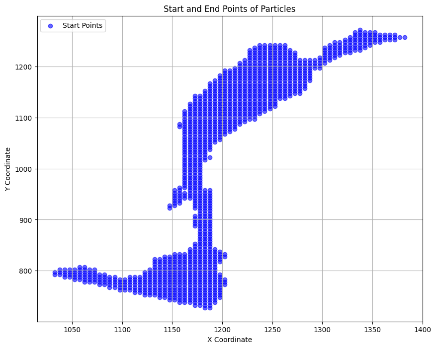
# Read forward pathline data only for selected particles
pathline_reader = flopy.utils.PathlineFile(f_pathline_file)
# Load pathline data for all particle IDs in the list
filtered_pathlines = []
for particle_id in particle_ids_list:
filtered_pathlines.extend(pathline_reader.get_data(partid=particle_id))
# Print the total number of pathlines and the particle IDs list
print(f"Total pathlines corresponding to filtered particles: {len(filtered_pathlines)}")
print("Particle IDs List:", particle_ids_list)
print(type(filtered_pathlines))
print("Available fields in pathline data:", filtered_pathlines[0].dtype.names)
# Available fields in pathline data
column_names = [
'particleid', 'particlegroup', 'sequencenumber', 'particleidloc', 'time',
'x', 'y', 'z', 'k', 'node', 'xloc', 'yloc', 'zloc', 'stressperiod', 'timestep'
]
# Convert NumPy structured array to DataFrame and add column names
if isinstance(filtered_pathlines, list) and hasattr(filtered_pathlines[0], 'dtype'):
filtered_pathlines_df = pd.DataFrame.from_records(filtered_pathlines, columns=column_names)
# Print the first few rows to check the structure
print(filtered_pathlines_df.head())
# Debugging: Check if all required fields are present
required_fields = ['x', 'y', 'z', 'time', 'k', 'particleid']
missing_fields = [field for field in required_fields if field not in filtered_pathlines_df.columns]
print("Missing fields:", missing_fields)
# Group pathlines by particle ID
grouped_pathlines = filtered_pathlines_df.groupby('particleid')
Total pathlines corresponding to filtered particles: 245430
Particle IDs List: [1, 2, 3, 4, 6, 7, 8, 9, 10, 11, 12, 13, 15, 16, 17, 18, 19, 20, 21, 22, 23, 24, 25, 27, 28, 29, 30, 31, 32, 33, 34, 35, 36, 37, 38, 39, 40, 41, 42, 43, 44, 46, 47, 48, 50, 52, 53, 54, 55, 56, 57, 58, 59, 60, 61, 62, 64, 65, 66, 67, 71, 72, 73, 74, 75, 76, 77, 78, 80, 81, 82, 84, 86, 87, 88, 89, 90, 91, 92, 93, 94, 95, 96, 97, 98, 99, 100, 101, 102, 103, 104, 105, 106, 107, 108, 109, 110, 111, 112, 113, 114, 115, 116, 117, 118, 119, 120, 121, 122, 123, 124, 125, 126, 127, 128, 129, 130, 131, 132, 133, 134, 135, 136, 137, 138, 139, 140, 141, 142, 143, 144, 145, 146, 147, 148, 149, 150, 151, 152, 153, 154, 155, 156, 157, 158, 159, 160, 161, 162, 163, 164, 165, 166, 167, 168, 169, 170, 171, 172, 173, 174, 175, 176, 177, 178, 179, 180, 181, 182, 183, 184, 185, 186, 187, 188, 189, 190, 191, 192, 193, 194, 195, 196, 197, 198, 199, 200, 201, 202, 203, 204, 205, 206, 207, 208, 209, 210, 211, 212, 213, 214, 215, 216, 217, 218, 219, 220, 221, 222, 223, 224, 225, 226, 227, 228, 229, 230, 231, 232, 233, 234, 235, 236, 237, 238, 239, 240, 241, 242, 243, 244, 245, 246, 247, 248, 249, 250, 251, 252, 253, 254, 255, 256, 257, 258, 259, 260, 261, 262, 263, 264, 265, 266, 267, 268, 269, 270, 271, 272, 273, 274, 275, 276, 277, 278, 279, 280, 281, 282, 283, 284, 285, 286, 287, 288, 289, 290, 291, 292, 293, 294, 295, 296, 297, 298, 299, 300, 301, 302, 303, 304, 305, 306, 307, 308, 309, 310, 311, 312, 313, 314, 315, 316, 317, 318, 319, 320, 321, 322, 323, 324, 325, 326, 327, 328, 329, 330, 331, 332, 333, 334, 335, 336, 337, 338, 339, 340, 341, 342, 343, 344, 345, 346, 347, 348, 349, 350, 351, 352, 353, 354, 355, 356, 357, 358, 359, 360, 361, 362, 363, 364, 365, 366, 367, 368, 369, 370, 371, 372, 373, 374, 375, 376, 377, 378, 379, 380, 381, 382, 383, 384, 385, 386, 389, 390, 391, 392, 393, 394, 395, 396, 397, 398, 399, 400, 401, 402, 403, 404, 405, 406, 407, 408, 409, 410, 411, 412, 413, 414, 415, 416, 417, 418, 419, 420, 421, 422, 423, 424, 425, 426, 427, 428, 429, 430, 431, 432, 433, 434, 435, 436, 437, 438, 439, 440, 441, 442, 443, 444, 445, 446, 447, 448, 449, 450, 451, 452, 453, 454, 455, 456, 457, 458, 459, 460, 461, 462, 463, 464, 465, 466, 467, 468, 469, 470, 471, 472, 473, 474, 475, 476, 477, 478, 479, 480, 481, 482, 483, 484, 485, 486, 487, 488, 489, 490, 491, 492, 493, 494, 495, 496, 497, 498, 499, 500, 501, 502, 503, 504, 505, 506, 507, 508, 509, 510, 511, 512, 513, 514, 515, 516, 517, 518, 519, 520, 521, 522, 523, 524, 525, 526, 527, 528, 529, 530, 531, 532, 533, 534, 535, 536, 537, 538, 539, 540, 541, 542, 543, 544, 545, 546, 547, 548, 549, 550, 551, 552, 553, 554, 555, 556, 557, 558, 559, 560, 561, 562, 563, 564, 565, 566, 567, 568, 569, 570, 571, 572, 573, 574, 575, 576, 577, 578, 579, 580, 581, 582, 583, 584, 585, 586, 587, 588, 589, 590, 591, 592, 593, 594, 595, 596, 597, 598, 599, 600, 601, 602, 603, 604, 605, 606, 607, 608, 609, 610, 611, 612, 613, 614, 615, 616, 617, 618, 619, 620, 621, 622, 623, 624, 625, 626, 627, 628, 629, 630, 631, 632, 633, 634, 635, 636, 637, 638, 639, 640, 641, 642, 643, 644, 645, 646, 647, 648, 649, 650, 651, 652, 653, 654, 655, 656, 657, 658, 659, 660, 661, 662, 663, 664, 665, 666, 667, 668, 669, 670, 671, 672, 673, 674, 675, 676, 677, 678, 679, 680, 681, 682, 683, 684, 686, 687, 688, 689, 690, 691, 692, 693, 694, 695, 696, 697, 698, 699, 700, 702, 703, 704, 705, 706, 707, 708, 709, 710, 711, 712, 713, 714, 715, 716, 717, 718, 719, 720, 721, 722, 723, 724, 725, 726, 727, 728, 729, 730, 731, 732, 733, 734, 735, 736, 737, 738, 739, 740, 741, 742, 743, 744, 745, 746, 747, 748, 749, 750, 751, 753, 754, 755, 756, 757, 758, 759, 760, 761, 762, 763, 764, 765, 766, 767, 768, 769, 770, 771, 772, 773, 774, 775, 776, 777, 778, 779, 780, 781, 782, 783, 784, 785, 786, 787, 788, 789, 790, 791, 792, 793, 794, 795, 797, 798, 799, 800, 802, 803, 804, 805, 807, 808, 809, 810, 811, 812, 813, 814, 815, 816, 817, 818, 819, 820, 821, 822, 823, 824, 825, 826, 827, 828, 829, 830, 831, 832, 833, 834, 835, 836, 837, 838, 839, 840, 841, 842, 843, 844, 845, 846, 847, 848, 849, 850, 851, 852, 853, 854, 855, 856, 857, 858, 859, 860, 861, 862, 863, 864, 865, 866, 867, 868, 869, 870, 871, 872, 873, 874, 875, 876, 877, 878, 879, 880, 881, 882, 883, 884, 885, 886, 887, 888, 889, 890, 891, 892, 893, 894, 895, 896, 897, 898, 899, 900, 901, 902, 903, 904, 905, 906, 907, 908, 909, 910, 911, 912, 913, 914, 915, 916, 917, 918, 919, 920, 921, 922, 923, 924, 925, 926, 927, 928, 929, 930, 931, 932, 933, 934, 935, 936, 937, 938, 939, 940, 941, 942, 943, 944, 945, 946, 947, 948, 949, 950, 951, 952, 953, 954, 955, 956, 957, 958, 959, 960, 961, 962, 963, 964, 965, 966, 967, 968, 969, 970, 971, 972, 973, 974, 975, 976, 977, 978, 979, 980, 981, 982, 983, 984, 985, 986, 987, 988, 989, 990, 991, 992, 993, 994, 995, 996, 997, 998, 999, 1000, 1001, 1002, 1003, 1004, 1005, 1006, 1007, 1008, 1009, 1010, 1011, 1012, 1013, 1014, 1015, 1016, 1017, 1018, 1019, 1020, 1021, 1022, 1023, 1024, 1025, 1026, 1027, 1028, 1029, 1030, 1031, 1032, 1033, 1034, 1035, 1036, 1037, 1038, 1039, 1040, 1041, 1042, 1043, 1044, 1045, 1046, 1047, 1048, 1049, 1050, 1051, 1052, 1053, 1054, 1055, 1056, 1057, 1058, 1059, 1060, 1061, 1062, 1063, 1064, 1065, 1066, 1067, 1068, 1069, 1070, 1071, 1072, 1073, 1074, 1075, 1076, 1077, 1078, 1079, 1080, 1081, 1082, 1083, 1084, 1085, 1086, 1087, 1088, 1089, 1090, 1091, 1092, 1093, 1094, 1095, 1096, 1097, 1098, 1099, 1100, 1101, 1102, 1103, 1104, 1105, 1106, 1107, 1108, 1109, 1110, 1111, 1112, 1113, 1114, 1115, 1116, 1117, 1118, 1119, 1120, 1121, 1122, 1123, 1124, 1125, 1126, 1127, 1128, 1129, 1130, 1131, 1132, 1133, 1134, 1135, 1136, 1137, 1138, 1139, 1140, 1141, 1142, 1143, 1144, 1145, 1146, 1147, 1148, 1149, 1150, 1151, 1152, 1153, 1154, 1155, 1156, 1157, 1158, 1159, 1160, 1161, 1162, 1163, 1164, 1165, 1166, 1167, 1168, 1169, 1170, 1171, 1172, 1173, 1174, 1175, 1176, 1177, 1178, 1179, 1180, 1181, 1182, 1183, 1184, 1185, 1186, 1187, 1188, 1189, 1190, 1191, 1192, 1193, 1194, 1195, 1196, 1197, 1198, 1199, 1200, 1201, 1202, 1203, 1204, 1205, 1206, 1207, 1208, 1209, 1210, 1211, 1212, 1213, 1214, 1215, 1216, 1217, 1218, 1219, 1220, 1221, 1222, 1223, 1224, 1225, 1226, 1227, 1228, 1229, 1230, 1231, 1232, 1233, 1234, 1235, 1236, 1237, 1238, 1239, 1240, 1241, 1242, 1243, 1244, 1245, 1246, 1247, 1248, 1249, 1250, 1251, 1252, 1253, 1254]
<class 'list'>
Available fields in pathline data: ('particleid', 'particlegroup', 'sequencenumber', 'particleidloc', 'time', 'x', 'y', 'z', 'k', 'node', 'xloc', 'yloc', 'zloc', 'stressperiod', 'timestep')
particleid particlegroup sequencenumber particleidloc time \
0 1 0 1 1 0.00
1 1 0 1 1 0.01
2 1 0 1 1 0.02
3 1 0 1 1 0.03
4 1 0 1 1 0.04
x y z k node xloc yloc \
0 1332.500000 1267.500000 1600.312500 0 56727 0.500000 0.500000
1 1332.500000 1267.481445 1600.314697 0 56727 0.500006 0.496275
2 1332.500122 1267.462891 1600.316895 0 56727 0.500012 0.492579
3 1332.500122 1267.444458 1600.319092 0 56727 0.500017 0.488910
4 1332.500122 1267.426270 1600.321167 0 56727 0.500023 0.485269
zloc stressperiod timestep
0 0.500000 1 1
1 0.502202 1 1
2 0.504394 1 1
3 0.506576 1 1
4 0.508749 1 1
Missing fields: []
# Visualize forward pathlines and endpoints
# Plot top view
plt.figure(figsize=(8, 8))
mm = flopy.plot.PlotMapView(model=gwf)
# Plot grid (optional, set lw=0 to hide grid lines)
mm.plot_grid(lw=0)
# Plot pathlines
mm.plot_pathline(filtered_pathlines_df, layer="all", colors="red", label="Pathlines")
# Plot endpoints (if available)
mm.plot_endpoint(endpoints, direction="starting", colorbar=True)
# Apply spatial extent for zooming
mm.ax.set_xlim(extent[0], extent[1])
mm.ax.set_ylim(extent[2], extent[3])
# Add title and legend
plt.title("MODPATH 7 Output: Forward Pathlines and Endpoints")
mm.ax.legend()
plt.show()
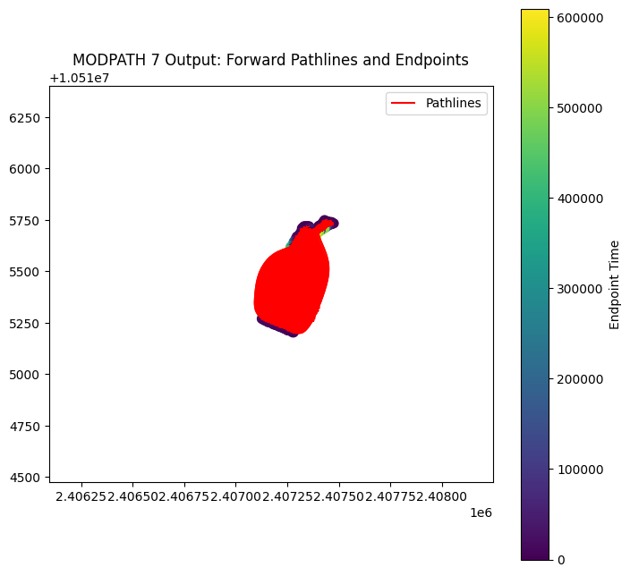
# Remove outliers from the pathlines (too short to be hyporheic space)
# Define your threshold (e.g., 2 cell widths)
n_cells = 2
mean_cell_width = (np.mean(delr) + np.mean(delc)) / 2
threshold_in_feet = n_cells * mean_cell_width # n_cells = 1, 2, etc.
default_z_cell_size = 0.5 # Default z cell size in feet, adjust as needed
# Function to compute total pathline length for a group
def pathline_length(group):
# Sort by 'time' to ensure correct order
group = group.sort_values(by='time')
x, y = group['x'].to_numpy(), group['y'].to_numpy()
# Compute segment distances
dist = np.sqrt(np.diff(x)**2 + np.diff(y)**2)
return dist.sum()
# Compute lengths for all particles
lengths = grouped_pathlines.apply(pathline_length)
# Get particleids of pathlines longer than the threshold
long_path_particleids = lengths[lengths >= threshold_in_feet].index
# Filter the DataFrame to keep only long pathlines
filtered_long_pathlines_df = filtered_pathlines_df[filtered_pathlines_df['particleid'].isin(long_path_particleids)]
# (Optional) Re-plot using filtered_long_pathlines_df
grouped_long_pathlines = filtered_long_pathlines_df.groupby('particleid')
plt.figure(figsize=(10, 8))
for particle_id, group in grouped_long_pathlines:
group = group.sort_values(by='time')
x = group['x'].to_numpy()
y = group['y'].to_numpy()
plt.plot(x, y, label=f"Particle {particle_id}" if particle_id < 5 else "")
plt.title('Pathlines (Filtered for Minimum Length)')
plt.xlabel('X')
plt.ylabel('Y')
plt.show()
xyz_tuples_per_particle = {}
for particle_id, group in grouped_long_pathlines:
group = group.sort_values(by='time')
x = group['x'].to_numpy()
y = group['y'].to_numpy()
z = group['z'].to_numpy()
xyz_tuples = list(zip(x, y, z)) # List of (x, y, z) tuples for this pathline
xyz_tuples_per_particle[particle_id] = xyz_tuples
# Debugging: Plot pathlines
# plt.plot(x, y, label=f"Particle {particle_id}" if particle_id < 5 else "")
# Plot Filtered Forward Pathlines and Endpoints
# Plot top view
plt.figure(figsize=(8, 8))
mm = flopy.plot.PlotMapView(model=gwf)
# Plot grid (optional, set lw=0 to hide grid lines)
mm.plot_grid(lw=0)
# Plot pathlines
mm.plot_pathline(filtered_long_pathlines_df, layer="all", colors="red", label="Pathlines")
# Plot endpoints (if available)
mm.plot_endpoint(endpoints, direction="starting", colorbar=True)
# Apply spatial extent for zooming
mm.ax.set_xlim(extent[0], extent[1])
mm.ax.set_ylim(extent[2], extent[3])
# Add title and legend
plt.title("MODPATH 7 Output - Top View (Outliers Removed)")
mm.ax.legend()
plt.show()
# Debugging: Check data structure
print(filtered_long_pathlines_df[['x', 'y']].head())
print("xorigin:", x_min, "xmax:", x_min + delr.sum())
print("yorigin:", y_min, "ymax:", y_min + delc.sum())
# Visualize pathlines in 3D
# Group pathline data by 'particleid'
grouped_pathlines = filtered_long_pathlines_df.groupby('particleid')
# Initialize 3D plot
fig = plt.figure(figsize=(12, 8))
ax = fig.add_subplot(111, projection='3d')
# Plot pathlines as lines
for particle_id, group in grouped_pathlines:
# Sort the group by 'time' or 'sequencenumber' to ensure correct line ordering
group = group.sort_values(by='time') # or 'sequencenumber'
# Extract x, y, z coordinates
x = group['x'].to_numpy()
y = group['y'].to_numpy()
z = group['z'].to_numpy()
# Plot the line for this particle
ax.plot(x, y, z, label=f"Particle {particle_id}" if particle_id < 5 else "") # Label only first few particles for clarity
# Add labels, title, and legend
ax.set_title("Forward Particle Pathlines in 3D")
ax.set_xlabel("X")
ax.set_ylabel("Y")
ax.set_zlabel("Z")
plt.show()
C:\Users\u4eeevmq\AppData\Local\Temp\ipykernel_23936\198189868.py:18: DeprecationWarning: DataFrameGroupBy.apply operated on the grouping columns. This behavior is deprecated, and in a future version of pandas the grouping columns will be excluded from the operation. Either pass `include_groups=False` to exclude the groupings or explicitly select the grouping columns after groupby to silence this warning.
lengths = grouped_pathlines.apply(pathline_length)
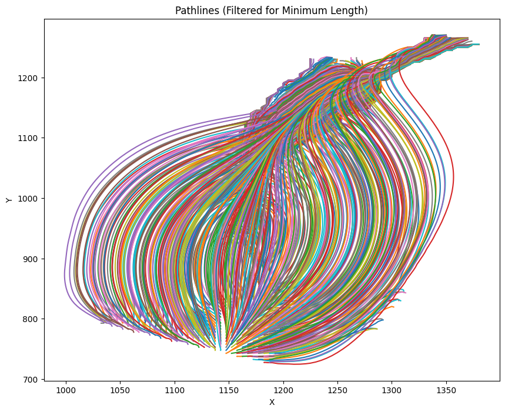
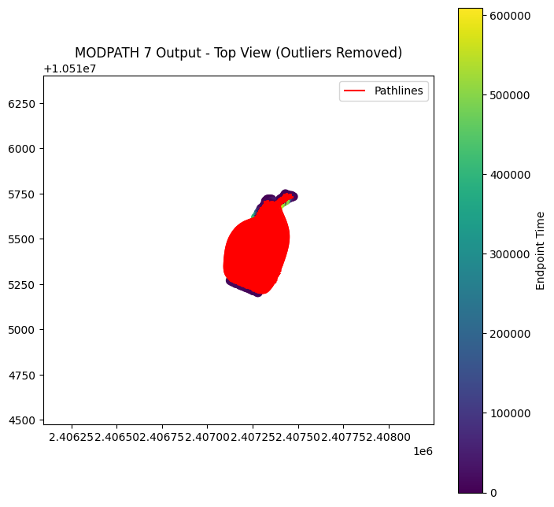
x y
414 1332.500000 1262.500000
415 1332.500000 1262.500488
416 1332.500122 1262.500977
417 1332.500122 1262.501343
418 1332.500244 1262.501953
xorigin: 2406093.51 xmax: 2408248.51
yorigin: 10514475.4 ymax: 10516400.4
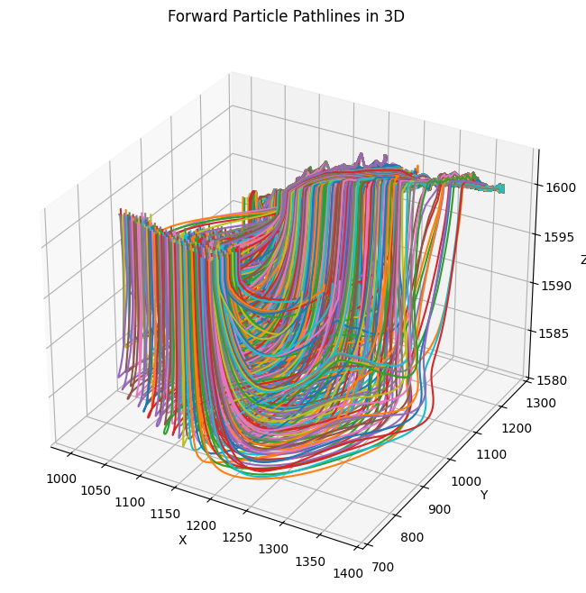
# Calculate forward path lengths, widths, and depth
lengths = []
widths = []
depths = []
path_lengths = []
for particle_id, group in grouped_pathlines:
# Sort to ensure correct order
group = group.sort_values(by='time')
x = group['x'].to_numpy()
y = group['y'].to_numpy()
z = group['z'].to_numpy()
# Path length: sum of 3D distances between consecutive points (optional, for reference)
coords = np.stack((x, y, z), axis=1)
diffs = np.diff(coords, axis=0)
dists = np.linalg.norm(diffs, axis=1)
path_length = dists.sum()
# Length: range in y
length = y.max() - y.min()
# Width: range in x
width = x.max() - x.min()
# Height: range in z
depth = z.max() - z.min()
lengths.append(length)
widths.append(width)
depths.append(depth)
path_lengths.append(path_length) # Optional
# Convert to numpy arrays
lengths = np.array(lengths)
widths = np.array(widths)
depths = np.array(depths)
path_lengths = np.array(path_lengths)
# Calculate statistics
def print_stats(arr, name):
print(f"{name}: mean={arr.mean():.2f}, median={np.median(arr):.2f}, min={arr.min():.2f}, max={arr.max():.2f}")
print_stats(lengths, "Path Length (y-range, ft)") # length in y-direction
print_stats(widths, "Path Width (x-range, ft)")
print_stats(depths, "Path Depth (z-range, ft)")
print_stats(path_lengths, "3D Path Length (ft)") # Real length
# Plot distributions (white to blue gradient)
fig, axs = plt.subplots(1, 3, figsize=(18, 5))
sns.histplot(path_lengths, kde=True, ax=axs[0], color='royalblue')
axs[0].set_title('Path Length Distribution (ft)')
sns.histplot(widths, kde=True, ax=axs[1], color='royalblue')
axs[1].set_title('Path Width Distribution (x-range, ft)')
sns.histplot(depths, kde=True, ax=axs[2], color='royalblue')
axs[2].set_title('Path Depth Distribution (z-range, ft)')
plt.tight_layout()
plt.show()
Path Length (y-range, ft): mean=244.34, median=176.66, min=2.34, max=544.61
Path Width (x-range, ft): mean=147.33, median=157.50, min=0.95, max=351.16
Path Depth (z-range, ft): mean=5.80, median=1.31, min=0.03, max=21.56
3D Path Length (ft): mean=324.14, median=260.24, min=10.32, max=692.36
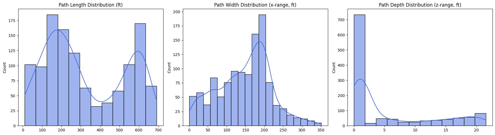
# Calculate forward particle residence times
# Compute residence time per particle (max time per unique particleid)
residence_times = (
filtered_long_pathlines_df.groupby('particleid')['time'].max().to_numpy()
)
# Print a few to check
print("Example residence times:", residence_times[:5])
# Plot distribution of residence times
plt.figure(figsize=(8, 5))
sns.histplot(residence_times[(residence_times > 0) & (~np.isnan(residence_times))]
, kde=True, color='royalblue')
plt.xlabel('Residence Time (days)')
plt.ylabel('Number of Particles')
plt.title('Distribution of Residence Times')
plt.tight_layout()
plt.show()
# Statistics
print(f"Mean residence time: {np.mean(residence_times):.2f} days")
print(f"Median residence time: {np.median(residence_times):.2f} days")
print(f"Min residence time: {np.min(residence_times):.2f} days")
print(f"Max residence time: {np.max(residence_times):.2f} days")
Example residence times: [ 762.71783 939.11053 1309.5042 1121.5673 322.07892]
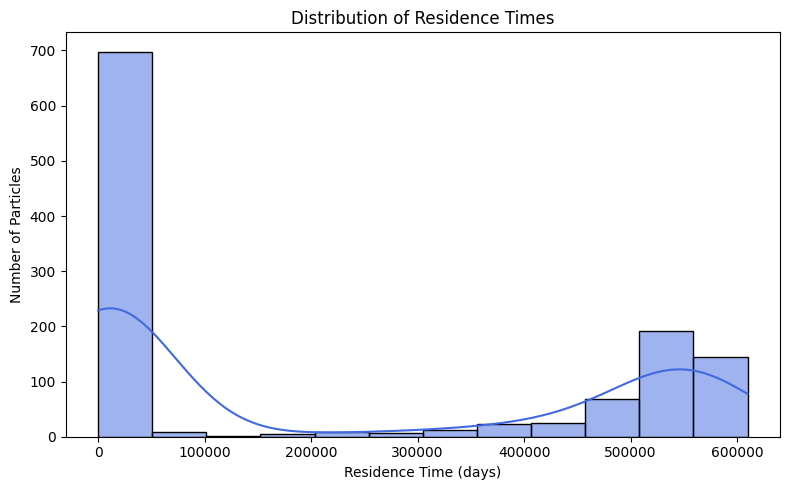
Mean residence time: 215164.27 days
Median residence time: 15639.41 days
Min residence time: 105.51 days
Max residence time: 609750.12 days
# Calculate forward particle velocities
# Initialize a list to store particle velocities
particle_velocities = []
for particle_id, group in filtered_long_pathlines_df.groupby('particleid'):
group = group.sort_values(by='time')
x, y, z = group['x'].to_numpy(), group['y'].to_numpy(), group['z'].to_numpy()
coords = np.stack((x, y, z), axis=1)
dists = np.linalg.norm(np.diff(coords, axis=0), axis=1)
path_length = dists.sum()
time_elapsed = group['time'].iloc[-1] - group['time'].iloc[0] # or .max() - .min()
if time_elapsed > 0:
avg_velocity = path_length / time_elapsed
else:
avg_velocity = np.nan # handle 0 time
particle_velocities.append({'particleid': particle_id, 'path_length': path_length, 'time_elapsed': time_elapsed, 'avg_velocity': avg_velocity})
# Convert to DataFrame
velocities_df = pd.DataFrame(particle_velocities)
# Plot velocity distribution (assuming velocities_df['avg_velocity'] contains your velocities)
plt.figure(figsize=(8, 5))
sns.histplot(velocities_df['avg_velocity'].dropna(), kde=True, color='royalblue')
plt.xlabel('Average Particle Velocity (distance unit/time unit, e.g. ft/day)')
plt.ylabel('Number of Particles')
plt.title('Distribution of Particle Velocities')
plt.tight_layout()
plt.show()
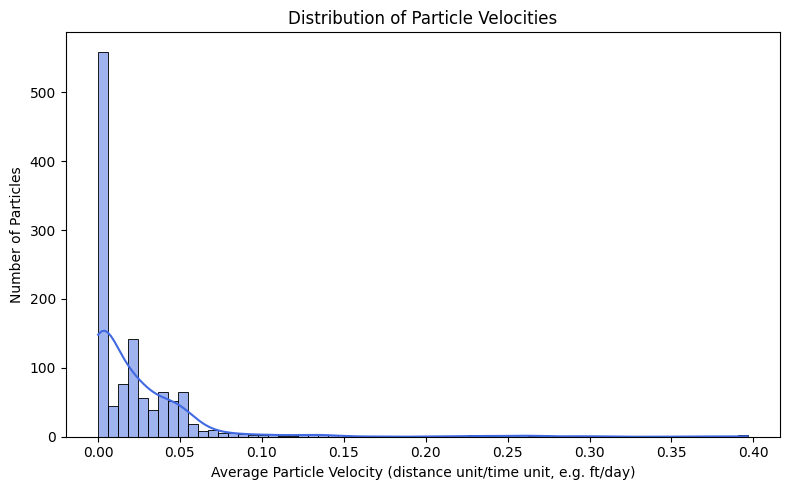
# Convert forward paticles from model space (ft from origin) to model grid space (nlay, nrow, ncol)
# Initialize binary presence array
binary_presence = np.zeros((nlay, nrow, ncol), dtype=int)
# Extract x, y, z coordinates from the filtered long pathlines DataFrame
x_local = filtered_long_pathlines_df['x'].values
y_local = filtered_long_pathlines_df['y'].values
x_spatial, y_spatial = gwf.modelgrid.get_coords(x_local, y_local)
z_array = filtered_long_pathlines_df['z'].values if 'z' in filtered_long_pathlines_df else [None]*len(filtered_long_pathlines_df)
def intersect_one(args):
idx, x_s, y_s, z = args
try:
if z is not None and not np.isnan(z):
k, j, i = gwf.modelgrid.intersect(x_s, y_s, z)
else:
k, j, i = gwf.modelgrid.intersect(x_s, y_s)
return (k, j, i)
except Exception:
return (np.nan, np.nan, np.nan)
# Collect all intersection indices for each particle (TAKES 90 MINUTES)
with ThreadPoolExecutor() as executor:
results = list(executor.map(intersect_one, zip(range(len(x_spatial)), x_spatial, y_spatial, z_array)))
# Attach to DataFrame
layers, rows, cols = zip(*results)
filtered_long_pathlines_df['layer'] = layers
filtered_long_pathlines_df['row'] = rows
filtered_long_pathlines_df['col'] = cols
# Mark binary presence for valid cells and print
for k, j, i in results:
if (not np.isnan(k)) and (not np.isnan(j)) and (not np.isnan(i)):
k_int, j_int, i_int = int(k), int(j), int(i)
if 0 <= k_int < nlay and 0 <= j_int < nrow and 0 <= i_int < ncol:
binary_presence[k_int, j_int, i_int] = 1
print(f"Particle intersects at layer {k_int}, row {j_int}, column {i_int}") # Comment this out to speed up processing
# Count intersected cells
num_intersected_cells = np.sum(binary_presence)
print(f"Number of unique cells intersected by pathlines: {num_intersected_cells}")
# Preview DataFrame with new indices to ensure spatial mapping
print(filtered_long_pathlines_df[['x', 'y', 'z', 'layer', 'row', 'col']].head())
# Calculate the volume of cells in the model grid
# Initialize cell volumes array
cell_volumes = np.zeros((nlay, nrow, ncol))
delr_mean = np.mean(delr) # Use mean if delr is an array; otherwise just use delr
delc_mean = np.mean(delc) # Use mean if delc is an array; otherwise just use delc
# Prepare river_stage array for the top layer
river_stage_array = np.zeros((nrow, ncol))
# Example: river_cells is a list of tuples like (layer, row, col, river_stage)
for cell in river_cells:
k, j, i, stage = cell
if k == 0: # Only consider top layer
river_stage_array[j, i] = stage
top = gwf.modelgrid.top # shape: (nrow, ncol)
bot = gwf.modelgrid.botm[0, :, :] # bottom of top layer, shape: (nrow, ncol)
# Where river_stage is present and >0, use it; otherwise use top
use_river = river_stage_array > 0
thickness_top = np.where(use_river, river_stage_array - bot, 0)
cell_volumes[0, :, :] = delr_mean * delc_mean * thickness_top
# Lower layers: uniform thickness
uniform_thickness = 0.5 # feet
for k in range(1, nlay):
cell_volumes[k, :, :] = delr_mean * delc_mean * uniform_thickness
plt.figure(figsize=(10, 8))
c = plt.pcolormesh(thickness_top, cmap='viridis', shading='auto')
plt.colorbar(c, label='Cell Volume (cubic ft)')
plt.title('Top Layer Cell Volumes (River cells use river stage)')
plt.xlabel('Column')
plt.ylabel('Row')
plt.gca().invert_yaxis() # To match typical model grid orientation (row 0 at top)
plt.tight_layout()
plt.show()
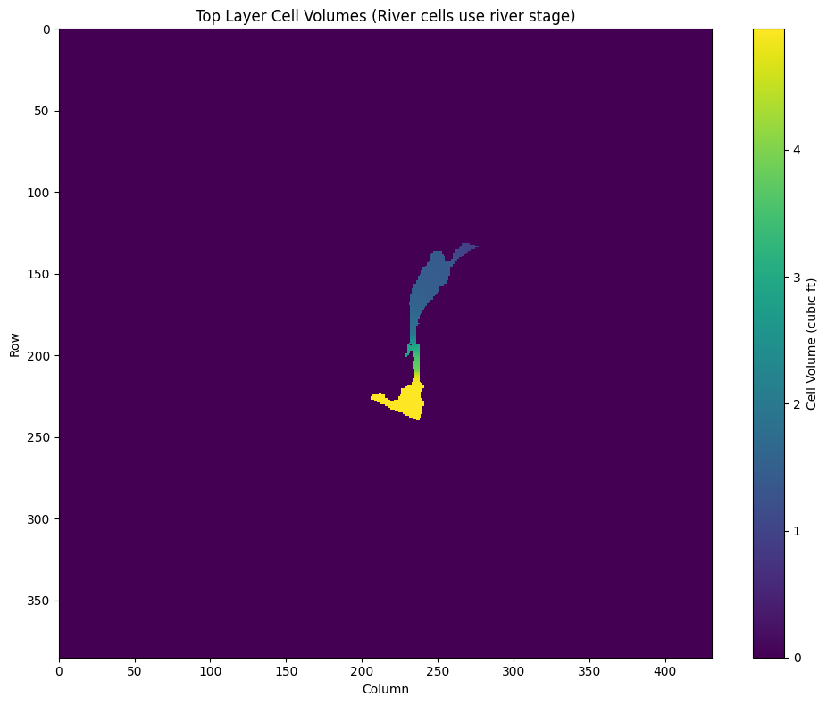
# Calculate the volume of hyporheic space using forward pathlines
# Only count volumes where pathlines are present
hyporheic_volumes = cell_volumes * binary_presence
# Sum across all layers to get total volume at each (row, col)
total_vol_per_xy = np.sum(hyporheic_volumes, axis=0) # shape: (nrow, ncol)
idomain = dis.idomain.array # shape: (nlay, nrow, ncol)
# Mask out inactive cells (set volume to np.nan or mask)
masked_vol = np.where(idomain[0,:,:] == 1, total_vol_per_xy, np.nan)
min_vol = np.nanmin(masked_vol)
max_vol = np.nanmax(masked_vol)
print(f"Minimum cell hyporheic volume: {min_vol:.2f} cubic feet")
print(f"Maximum cell hyporheic volume: {max_vol:.2f} cubic feet")
max_loc = np.unravel_index(np.nanargmax(masked_vol), masked_vol.shape)
min_loc = np.unravel_index(np.nanargmin(masked_vol), masked_vol.shape)
print(f"Maximum volume at cell (row, col): {max_loc}, value: {max_vol:.2f} cubic feet")
print(f"Minimum volume at cell (row, col): {min_loc}, value: {min_vol:.2f} cubic feet")
# Extent for plotting
masked_vol_plot = np.ma.masked_less_equal(masked_vol, 0) # mask 0 and below
plt.figure(figsize=(10, 8))
c = plt.pcolormesh(masked_vol_plot, cmap='viridis', shading='auto')
plt.colorbar(c, label='Total Hyporheic Volume (cubic ft)')
plt.title('2D Map of Total Hyporheic Space (idomain extent)')
plt.xlabel('Column')
plt.ylabel('Row')
plt.xlim(175, 300)
plt.ylim(100, 275)
plt.gca().invert_yaxis()
plt.tight_layout()
plt.show()
---------------------------------------------------------------------------
FileNotFoundError Traceback (most recent call last)
File ~\AppData\Roaming\Python\Python311\site-packages\flopy\mf6\data\mffileaccess.py:159, in MFFileAccess._open_ext_file(self, fname, binary, write)
158 try:
--> 159 fd = open(read_file, options)
160 return fd
FileNotFoundError: [Errno 2] No such file or directory: 'C:\\Users\\u4eeevmq\\Documents\\Python\\HyporheicFloPy\\HP_workspace\\gwf_workspace\\arrays\\idomain_L1.bin'
During handling of the above exception, another exception occurred:
MFDataException Traceback (most recent call last)
File ~\AppData\Roaming\Python\Python311\site-packages\flopy\mf6\data\mfdataarray.py:731, in MFArray._get_data(self, layer, apply_mult, **kwargs)
730 try:
--> 731 data = storage.get_data(layer, apply_mult)
732 if (
733 "array" in kwargs
734 and kwargs["array"]
735 and isinstance(self, MFTransientArray)
736 and data is not [] # noqa: F632
737 ):
File ~\AppData\Roaming\Python\Python311\site-packages\flopy\mf6\data\mfdatastorage.py:684, in DataStorage.get_data(self, layer, apply_mult, block_exists)
683 def get_data(self, layer=None, apply_mult=True, block_exists=False):
--> 684 data = self._access_data(layer, True, apply_mult=apply_mult)
685 if data is None and block_exists:
File ~\AppData\Roaming\Python\Python311\site-packages\flopy\mf6\data\mfdatastorage.py:711, in DataStorage._access_data(self, layer, return_data, apply_mult)
702 if (
703 layer is None
704 and (
(...)
709 ):
710 # return data from all layers
--> 711 data = self._build_full_data(apply_mult)
712 if data is None:
File ~\AppData\Roaming\Python\Python311\site-packages\flopy\mf6\data\mfdatastorage.py:2434, in DataStorage._build_full_data(self, apply_multiplier)
2432 if self.layer_storage[layer].binary:
2433 data_out = (
-> 2434 file_access.read_binary_data_from_file(
2435 read_file,
2436 self.get_data_dimensions(layer),
2437 self.get_data_size(layer),
2438 self._data_type,
2439 self._model_or_sim.modeldiscrit,
2440 False,
2441 )[0]
2442 * mult
2443 )
2444 else:
File ~\AppData\Roaming\Python\Python311\site-packages\flopy\mf6\data\mffileaccess.py:431, in MFFileAccessArray.read_binary_data_from_file(self, fname, data_shape, data_size, data_type, modelgrid, read_multi_layer)
429 read_multi_layer = True
--> 431 fd = self._open_ext_file(fname, True)
432 numpy_type, name = self.datum_to_numpy_type(data_type)
File ~\AppData\Roaming\Python\Python311\site-packages\flopy\mf6\data\mffileaccess.py:168, in MFFileAccess._open_ext_file(self, fname, binary, write)
167 type_, value_, traceback_ = sys.exc_info()
--> 168 raise MFDataException(
169 self._data_dimensions.structure.get_model(),
170 self._data_dimensions.structure.get_package(),
171 self._data_dimensions.structure.path,
172 "opening external file for writing",
173 self._data_dimensions.structure.name,
174 inspect.stack()[0][3],
175 type_,
176 value_,
177 traceback_,
178 message,
179 self._simulation_data.debug,
180 )
MFDataException: An error occurred in data element "idomain" model "gwf6" package "dis". The error occurred while opening external file for writing in the "_open_ext_file" method.
Additional Information:
(1) Unable to open file C:\Users\u4eeevmq\Documents\Python\HyporheicFloPy\HP_workspace\gwf_workspace\arrays\idomain_L1.bin in mode rb. Make sure the file is not locked and the folder exists.
During handling of the above exception, another exception occurred:
MFDataException Traceback (most recent call last)
Cell In[31], line 7
5 # Sum across all layers to get total volume at each (row, col)
6 total_vol_per_xy = np.sum(hyporheic_volumes, axis=0) # shape: (nrow, ncol)
----> 7 idomain = dis.idomain.array # shape: (nlay, nrow, ncol)
9 # Mask out inactive cells (set volume to np.nan or mask)
10 masked_vol = np.where(idomain[0,:,:] == 1, total_vol_per_xy, np.nan)
File ~\AppData\Roaming\Python\Python311\site-packages\flopy\mf6\data\mfdata.py:300, in MFData.array(self)
297 @property
298 def array(self):
299 kwargs = {"array": True}
--> 300 return self.get_data(apply_mult=True, **kwargs)
File ~\AppData\Roaming\Python\Python311\site-packages\flopy\mf6\data\mfdataarray.py:721, in MFArray.get_data(self, layer, apply_mult, **kwargs)
707 def get_data(self, layer=None, apply_mult=False, **kwargs):
708 """Returns the data associated with layer "layer". If "layer"
709 is None, returns all data.
710
(...)
719
720 """
--> 721 return self._get_data(layer, apply_mult, **kwargs)
File ~\AppData\Roaming\Python\Python311\site-packages\flopy\mf6\data\mfdataarray.py:742, in MFArray._get_data(self, layer, apply_mult, **kwargs)
740 except Exception as ex:
741 type_, value_, traceback_ = sys.exc_info()
--> 742 raise MFDataException(
743 self.structure.get_model(),
744 self.structure.get_package(),
745 self._path,
746 "getting data",
747 self.structure.name,
748 inspect.stack()[0][3],
749 type_,
750 value_,
751 traceback_,
752 None,
753 self._simulation_data.debug,
754 ex,
755 )
756 return None
MFDataException: An error occurred in data element "idomain" model "gwf6" package "dis". The error occurred while getting data in the "_get_data" method.
Additional Information:
(1) Unable to open file C:\Users\u4eeevmq\Documents\Python\HyporheicFloPy\HP_workspace\gwf_workspace\arrays\idomain_L1.bin in mode rb. Make sure the file is not locked and the folder exists.
Pathline point data for each particle#
Point File (total estimated water volume, hyporeheic volume, particle velocity, and flow rates, length of path at this point, elevation, hydraulic gradient at each point, time)
# Calculate results along the pathlines for each segment
# hyporheic volumes
hyporheic_vols = []
for k, j, i in zip(filtered_long_pathlines_df['layer'], filtered_long_pathlines_df['row'], filtered_long_pathlines_df['col']):
if not np.isnan(k) and not np.isnan(j) and not np.isnan(i):
k, j, i = int(k), int(j), int(i)
hyp_vol = hyporheic_volumes[k, j, i]
else:
hyp_vol = 0.0
hyporheic_vols.append(hyp_vol)
filtered_long_pathlines_df['hyporheic_volume'] = hyporheic_vols
# Create a copy of the pathlines for further calculations
df = filtered_long_pathlines_df.copy()
# Sort values by time and particleid
df = df.sort_values(['particleid', 'time']).reset_index(drop=True)
# Calculate differences
df['dx'] = df.groupby('particleid')['x'].diff() # use particle model grid which is in feet
df['dy'] = df.groupby('particleid')['y'].diff() # use particle model grid which is in feet
df['dz'] = df.groupby('particleid')['z'].diff() # use particle model grid which is in feet
df['dt'] = df.groupby('particleid')['time'].diff() # use particle model time which is in days
df['segment_length'] = np.sqrt(df['dx']**2 + df['dy']**2 + df['dz']**2) # length traveled per step in feet
df['particle_velocity'] = df['segment_length'] / df['dt']
# Calculate Flow rate (ft^3/day)
df['flow_rate'] = df['hyporheic_volume'] / df['dt']
# Get hydraulic head for each point
def get_head(row):
try:
return head_array[int(row['layer']), int(row['row']), int(row['col'])]
except Exception:
return np.nan
# Apply the get_head function to each row to calculate hydraulic head
df['head'] = df.apply(get_head, axis=1)
# Calculate Hydraulic gradient for each segment
df['head_start'] = df.groupby('particleid')['head'].shift(1)
df['head_end'] = df['head']
df['hydraulic_gradient'] = (df['head_start'] - df['head_end']) / df['segment_length']
# Calculate cumulative segment length for each particle
df['cumulative_segment_length'] = df.groupby('particleid')['segment_length'].cumsum() # length traveled so far in feet
# print df column names to check
print("DataFrame columns:", df.columns)
C:\Users\u4eeevmq\AppData\Local\Temp\ipykernel_34292\2803801161.py:11: SettingWithCopyWarning:
A value is trying to be set on a copy of a slice from a DataFrame.
Try using .loc[row_indexer,col_indexer] = value instead
See the caveats in the documentation: https://pandas.pydata.org/pandas-docs/stable/user_guide/indexing.html#returning-a-view-versus-a-copy
filtered_long_pathlines_df['hyporheic_volume'] = hyporheic_vols
DataFrame columns: Index(['particleid', 'particlegroup', 'sequencenumber', 'particleidloc',
'time', 'x', 'y', 'z', 'k', 'node', 'xloc', 'yloc', 'zloc',
'stressperiod', 'timestep', 'layer', 'row', 'col', 'hyporheic_volume',
'dx', 'dy', 'dz', 'dt', 'segment_length', 'particle_velocity',
'flow_rate', 'head', 'head_start', 'head_end', 'hydraulic_gradient',
'cumulative_segment_length'],
dtype='object')
# Organize results
# Drop rows with missing row/col/particleid values
df_clean = df.dropna(subset=['row', 'col', 'particleid']).copy()
# Ensure integers for grouping
df_clean['row_int'] = df_clean['row'].astype(int)
df_clean['col_int'] = df_clean['col'].astype(int)
agg_dict = {
'z': 'min', # minimum z value at each point - Min
'hyporheic_volume': 'sum', # total hyporeheic volume at each point - Sum
'dt': 'sum', # time spent at each point - Sum
'time': 'max', # total residence time - Max
'segment_length': 'sum', # total segment length at each point - Sum
'cumulative_segment_length': 'max', # Total distance traveled by particle
'particle_velocity': 'mean', # mean particle velocity at each point - Mean
'flow_rate': 'sum', # average flow rates at each point - Mean
'hydraulic_gradient': 'mean', # Average hydraulic gradient at each point - Mean
'head': 'mean', # Average head for the particle - Mean
'head_start': 'mean', # Starting head for the particle - Mean
'head_end': 'mean', # Ending head for the particle - Mean
# do not include 'particleid': pd.Series.nunique, because we're grouping by particleid!
}
# Group by particleid, row, and col
df_prc = df_clean.groupby(['particleid', 'row_int', 'col_int', 'time'], as_index=False).agg(agg_dict)
# Rename for user clarity
df_prc = df_prc.rename(columns={
'row_int': 'row',
'col_int': 'col',
'z': 'z_elevation',
'hyporheic_volume': 'hyporheic_volume_cubic_ft', # total hyporeheic volume at each point - Sum
'dt': 'cell_residence_time_days', # time spent at each point - Sum
'time': 'total_residence_time_days', # total residence time - Max
'segment_length': 'length_in_cell_ft', # total segment length at each point - Sum
'cumulative_segment_length': 'total_length_ft', # Total distance traveled by particle
'particle_velocity': 'particle_velocity_ft_per_day', # mean particle velocity at each point - Mean
'flow_rate': 'flow_rate_cubic_ft_per_day', # average flow rates at each point - Mean
'hydraulic_gradient': 'hydraulic_gradient', # Average hydraulic gradient at each point - Mean
'head': 'hydraulic_head', # Average head for the particle - Mean
'head_start': 'starting_hydraulic_head', # Starting head for the particle - Mean
'head_end': 'ending_hydraulic_head', # Ending head for the particle - Mean
})
# Calculate depth-integrated total volume available in each cell (across all layers)
total_volume_per_cell = np.nansum(cell_volumes, axis=0)
# Map to each row in df_prc
df_prc['total_volume_cubic_ft'] = [
total_volume_per_cell[int(row), int(col)] if (
0 <= int(row) < total_volume_per_cell.shape[0] and
0 <= int(col) < total_volume_per_cell.shape[1]
) else np.nan
for row, col in zip(df_prc['row'], df_prc['col'])
]
# Georeference coordinates back to CRS
# calculate the Spatial coordinates of each row/col
df_prc['x_coord'] = df_prc['col'] * delr_mean + xorigin_value + delr_mean / 2
df_prc['y_coord'] = df_prc['row'] * delc_mean + yorigin_value + delc_mean / 2
# Replace inf and -inf with NaN for all columns (or specify a subset)
df_prc = df_prc.replace([np.inf, -np.inf], np.nan)
# Optionally, drop rows with any NaN in key columns you care about (or use .dropna(subset=[...]))
df_prc = df_prc.dropna()
# Print the first few rows of the processed DataFrame
print(df_prc.head())
particleid row col z_elevation hyporheic_volume_cubic_ft \
1 6 131 266 1600.437500 24.334717
2 6 131 266 1600.812500 24.334717
4 6 132 266 1600.127808 24.459839
5 6 132 266 1600.130615 24.459839
6 6 132 266 1600.133301 24.459839
cell_residence_time_days total_residence_time_days length_in_cell_ft \
1 55.551414 56.551414 2.465793
2 526.897583 583.448975 2.300065
4 0.010000 0.010000 0.002850
5 0.010000 0.020000 0.002852
6 0.010000 0.030000 0.002710
total_length_ft particle_velocity_ft_per_day flow_rate_cubic_ft_per_day \
1 2.657946 0.044388 0.438058
2 4.958011 0.004365 0.046185
4 0.002850 0.284976 2445.983941
5 0.005702 0.285237 2445.983941
6 0.008413 0.271040 2445.983941
hydraulic_gradient hydraulic_head starting_hydraulic_head \
1 0.002028 1600.78589 1600.79089
2 0.000000 1600.78589 1600.78589
4 0.000000 1600.79089 1600.79089
5 0.000000 1600.79089 1600.79089
6 0.000000 1600.79089 1600.79089
ending_hydraulic_head total_volume_cubic_ft x_coord y_coord
1 1600.78589 511.834717 2407426.01 10515132.9
2 1600.78589 511.834717 2407426.01 10515132.9
4 1600.79089 511.959839 2407426.01 10515137.9
5 1600.79089 511.959839 2407426.01 10515137.9
6 1600.79089 511.959839 2407426.01 10515137.9
Pathline line data with overview of variables#
Line File (total estimated water volume, total hyporeic volume along path, total length, width range , elevation range, total residence time, average velocity, average flow rate, hydraulic gradient, starting head, ending head, x_cell_size, Y_cell_size, default_z_cell_size)
# Total water volume along the pathlines per particle
## group by particleid and sum the hyporheic volume
total_volume_available_along_path = df_prc.groupby('particleid')['total_volume_cubic_ft'].sum().reset_index()
# Total hyporheic volume per particle
total_hyporheic_volume_per_particle = df_prc.groupby('particleid')['hyporheic_volume_cubic_ft'].sum().reset_index()
# Starting Hydraulic Head per particle
starting_hydraulic_head_per_particle = df_prc.groupby('particleid')['starting_hydraulic_head'].mean().reset_index()
# Ending Hydraulic Head per particle
ending_hydraulic_head_per_particle = df_prc.groupby('particleid')['ending_hydraulic_head'].mean().reset_index()
# Minimum Elevation per particle
min_elevation_per_particle = df_prc.groupby('particleid')['z_elevation'].min().reset_index()
# Total Residence Time per particle
total_residence_time_per_particle = df_prc.groupby('particleid')['total_residence_time_days'].max().reset_index()
# Total Length per particle
total_length_per_particle = df_prc.groupby('particleid')['total_length_ft'].max().reset_index()
# Average Particle Velocity per particle
average_particle_velocity_per_particle = df_prc.groupby('particleid')['particle_velocity_ft_per_day'].mean().reset_index()
# Average Flow Rate per particle
average_flow_rate_per_particle = df_prc.groupby('particleid')['flow_rate_cubic_ft_per_day'].mean().reset_index()
# Merge all summary DataFrames on 'particleid'
df_particle_summary = total_volume_available_along_path \
.merge(total_hyporheic_volume_per_particle, on='particleid', how='left') \
.merge(starting_hydraulic_head_per_particle, on='particleid', how='left') \
.merge(ending_hydraulic_head_per_particle, on='particleid', how='left') \
.merge(min_elevation_per_particle, on='particleid', how='left') \
.merge(total_residence_time_per_particle, on='particleid', how='left') \
.merge(total_length_per_particle, on='particleid', how='left') \
.merge(average_particle_velocity_per_particle, on='particleid', how='left') \
.merge(average_flow_rate_per_particle, on='particleid', how='left')
# Add hydraulic gradient (as a new column)
df_particle_summary['hydraulic_gradient'] = (
df_particle_summary['starting_hydraulic_head'] - df_particle_summary['ending_hydraulic_head']
) / df_particle_summary['total_length_ft']
# Add cell size columns (same values for all rows)
df_particle_summary['x_cell_size_ft'] = delr_mean
df_particle_summary['y_cell_size_ft'] = delc_mean
df_particle_summary['z_cell_size_ft'] = default_z_cell_size
## 3D Plotting of Pathlines
fig = plt.figure(figsize=(10, 8))
ax = fig.add_subplot(111, projection='3d')
for pid, group in df_prc.groupby('particleid'):
ax.plot(group['x_coord'], group['y_coord'], group['z_elevation'], color='blue', alpha=0.5)
ax.set_xlabel('X Coordinate')
ax.set_ylabel('Y Coordinate')
ax.set_zlabel('Elevation')
ax.set_title('Isometric 3D View of Pathlines')
plt.tight_layout()
plt.show()
# Longitudinal Section Plot (X vs Elevation)
fig, ax = plt.subplots(figsize=(10, 8))
for pid, group in df_prc.groupby('particleid'):
ax.plot(group['x_coord'], group['z_elevation'], color='blue', alpha=0.5)
ax.set_xlabel('X Coordinate')
ax.set_ylabel('Elevation')
ax.set_title('Width View of Pathlines')
plt.tight_layout()
plt.show()
fig, ax = plt.subplots(figsize=(10, 8))
for pid, group in df_prc.groupby('particleid'):
ax.plot(group['y_coord'], group['z_elevation'], color='blue', alpha=0.5)
ax.set_xlabel('Y Coordinate')
ax.set_ylabel('Elevation')
ax.set_title('Length View of Pathlines')
plt.tight_layout()
plt.show()
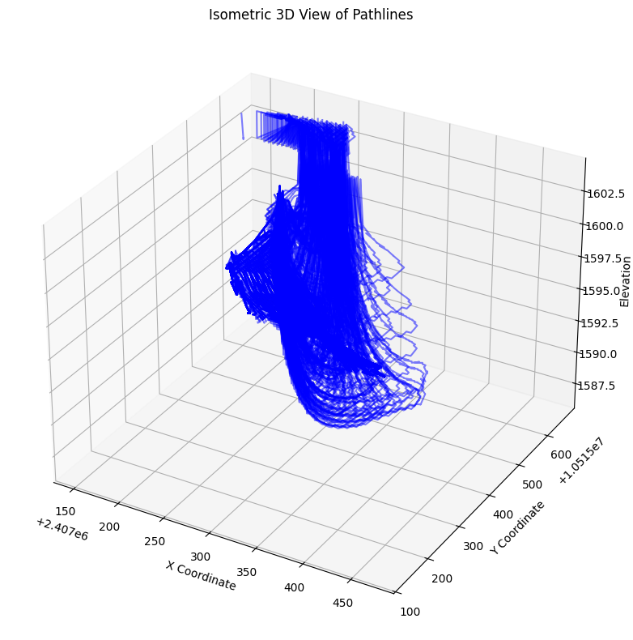
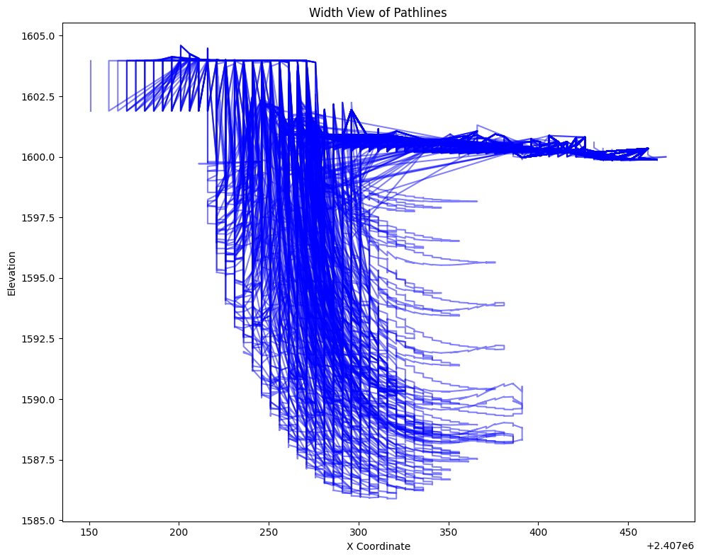
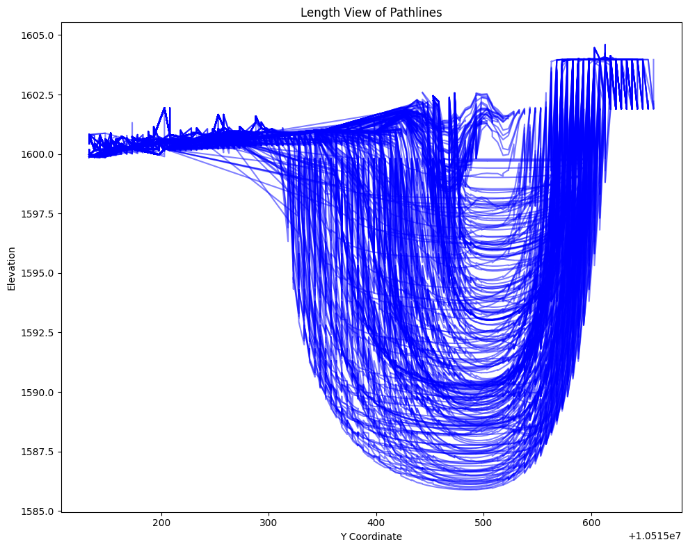
Create Spatial Output Data#
# Clean up column names to less than 10 characters for ESRI
custom_map_points = {
"row": "row", # model row
"col": "col", # model col
"z_elevation": "zelev", # elevation
"hyporheic_volume_cubic_ft": "hypvol_ft", # hyporheic vol (ft^3)
"cell_residence_time_days": "cel_res_t", # cell res time (days)
"total_residence_time_days": "res_time", # total res time (days)
"length_in_cell_ft": "Len_ft", # length in cell (ft)
"total_length_ft": "tot_len_ft", # total length (ft)
"particle_velocity_ft_per_day": "vel_ftday", # velocity (ft/day)
"flow_rate_cubic_ft_per_day": "flow_ftday", # flow rate (ft^3/day)
"hydraulic_gradient": "hyd_grad", # hydraulic gradient
"hydraulic_head": "hyd_head", # head
"starting_hydraulic_head": "head_strt", # start head
"ending_hydraulic_head": "head_end", # end head
"x_coord": "xcoord", # x coordinate
"y_coord": "ycoord", # y coordinate
"total_volume_cubic_ft": "tot_vol_ft", # total vol (ft^3)
# Add others as needed
}
custom_map_summary = {
"particleid": "particleid", # particle id
"total_volume_cubic_ft": "tot_vol_ft",# total volume (ft^3)
"hyporheic_volume_cubic_ft": "hypvol_ft", # hyporheic volume (ft^3)
"starting_hydraulic_head": "head_strt", # start head
"ending_hydraulic_head": "head_end", # end head
"min_elevation_per_particle": "min_elev", # min elevation
"total_residence_time_per_particle": "res_time", # residence time
"total_length_per_particle": "tot_len_ft",# total length (ft)
"average_particle_velocity_per_particle": "vel_ftday", # velocity (ft/day)
"average_flow_rate_per_particle": "flow_ftday", # flow rate (ft^3/day)
}
df_particle_summary = df_particle_summary.rename(columns=custom_map_summary)
df_prc = df_prc.rename(columns=custom_map_points)
print([c for c in df_particle_summary.columns if len(c) > 10])
print([c for c in df_prc.columns if len(c) > 10])
['z_elevation', 'total_residence_time_days', 'total_length_ft', 'particle_velocity_ft_per_day', 'flow_rate_cubic_ft_per_day', 'hydraulic_gradient', 'x_cell_size_ft', 'y_cell_size_ft', 'z_cell_size_ft']
[]
from rasterio.crs import CRS
# Need to create a set of points grouped by particleid and referenced to CRS
projection_file = "C:\\Users\\u4eeevmq\\Documents\\Python\\HyporheicFloPy\\CH00365\\RAS\\GIS_Data\\102739_TX_central.prj"
hec_ras_crs = CRS.from_string(open(projection_file).read().strip())
# Points GeoDataFrame
df_prc['geometry'] = df_prc.apply(lambda df_prc: Point(df_prc['xcoord'], df_prc['ycoord']), axis=1)
points_gdf = gpd.GeoDataFrame(df_prc, geometry='geometry', crs=hec_ras_crs)
# Lines GeoDataFrame
def make_linestring(group):
group = group.sort_values('res_time')
points = list(zip(group['xcoord'], group['ycoord']))
if len(points) > 1:
return LineString(points)
else:
return None # Skip groups with <= 1 point
lines = df_prc.groupby('particleid').apply(make_linestring)
lines = lines.dropna()
lines = lines.reset_index() # <-- This makes 'particleid' a column
lines_gdf = gpd.GeoDataFrame({'particleid': lines['particleid'], 'geometry': lines[0]}, crs=hec_ras_crs)
lines_gdf = lines_gdf.merge(df_particle_summary, on='particleid', how='left')
C:\Users\u4eeevmq\AppData\Local\Temp\ipykernel_34292\1991587211.py:20: DeprecationWarning: DataFrameGroupBy.apply operated on the grouping columns. This behavior is deprecated, and in a future version of pandas the grouping columns will be excluded from the operation. Either pass `include_groups=False` to exclude the groupings or explicitly select the grouping columns after groupby to silence this warning.
lines = df_prc.groupby('particleid').apply(make_linestring)
# Reproject to WGS84 (EPSG:4326) for KML/KMZ export
points_gdf_wgs84 = points_gdf.to_crs(epsg=4326)
lines_gdf_wgs84 = lines_gdf.to_crs(epsg=4326)
# Make sure the output folder exists
os.makedirs(output_folder, exist_ok=True)
# Save results as a shapefile (columns are limited to 10 characters)
points_gdf.to_file(os.path.join(output_folder, "Forward_hyporheic_points_HECRAS_CRS.shp"), driver="ESRI Shapefile")
lines_gdf.to_file(os.path.join(output_folder, "Forward_hyporheic_pathlines_HECRAS_CRS.shp"), driver="ESRI Shapefile")
points_gdf_wgs84.to_file(os.path.join(output_folder, "Forward_hyporheic_points.shp"), driver="ESRI Shapefile")
lines_gdf_wgs84.to_file(os.path.join(output_folder, "Forward_hyporheic_pathlines.shp"), driver="ESRI Shapefile")
# Export to KML
points_kml = os.path.join(output_folder, "Forward_hyporheic_points.kml")
lines_kml = os.path.join(output_folder, "Forward_hyporheic_pathlines.kml")
points_gdf_wgs84.to_file(points_kml, driver="KML")
lines_gdf_wgs84.to_file(lines_kml, driver="KML")
# Zip to KMZ
points_kmz = os.path.join(output_folder, "Forward_hyporheic_points.kmz")
lines_kmz = os.path.join(output_folder, "Forward_hyporheic_pathlines.kmz")
with zipfile.ZipFile(points_kmz, "w", zipfile.ZIP_DEFLATED) as kmz:
kmz.write(points_kml, os.path.basename(points_kml))
with zipfile.ZipFile(lines_kmz, "w", zipfile.ZIP_DEFLATED) as kmz:
kmz.write(lines_kml, os.path.basename(lines_kml))
C:\Users\u4eeevmq\AppData\Local\Temp\ipykernel_34292\3679767659.py:7: UserWarning: Column names longer than 10 characters will be truncated when saved to ESRI Shapefile.
lines_gdf.to_file("Forward_hyporheic_pathlines_HECRAS_CRS.shp", driver="ESRI Shapefile")
C:\Users\u4eeevmq\AppData\Local\Temp\ipykernel_34292\3679767659.py:9: UserWarning: Column names longer than 10 characters will be truncated when saved to ESRI Shapefile.
lines_gdf_wgs84.to_file("Forward_hyporheic_pathlines.shp", driver="ESRI Shapefile")
Plot Results#
# Reproject to Web Mercator (required for contextily)
points_gdf_web = points_gdf_wgs84.to_crs(epsg=3857)
lines_gdf_web = lines_gdf_wgs84.to_crs(epsg=3857)
# Plot
fig, ax = plt.subplots(figsize=(12, 12))
lines_gdf_web.plot(ax=ax, color='blue', linewidth=1, alpha=0.7, label='Pathlines')
points_gdf_web.plot(ax=ax, color='red', markersize=8, alpha=0.6, label='Points')
# Add Esri satellite imagery
ctx.add_basemap(ax, source=ctx.providers.Esri.WorldImagery)
ax.set_axis_off()
plt.legend()
plt.tight_layout()
plt.show()
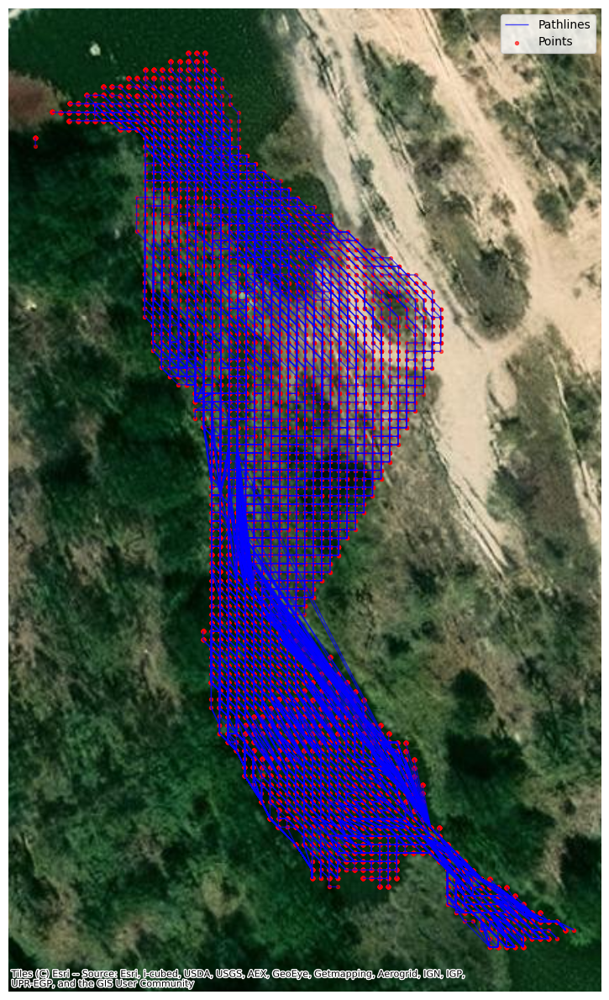